🃏 78张牌视觉索引
大阿尔卡纳 22 张 + 小阿尔卡纳 56 张 · 正位与逆位
先用自己的眼睛看 → 再看关键词参考 → 相信你的直觉
支持中文名、英文名、序号搜索 · 不区分大小写
大阿尔卡纳 · MAJOR ARCANA
22张人生主题牌 · 从愚人到世界

| 姿态 | 站姿放松，抬头望天而非低头看路——是无所畏惧，还是对危险毫无察觉？ |
| 颜色 | 大片黄色背景明亮温暖，衣角红色羽毛暗示内在的激情与冲动。白色太阳是纯粹的起点。 |
| 数字 | 0 — 不存在于常规序列中。0不是"无"，而是"一切尚未开始"的混沌状态，蕴藏全部可能性。 |
愚人是整副塔罗的第零张——不是第一张。这很重要。0不是"比1小"，而是"在一切开始之前"。愚人不是傻瓜，他是那个还没有被经验定义的人。他的天真不是无知，而是没有被过去的失败和成功绑架。当所有人都在计算利弊的时候，愚人已经迈出了第一步——不是因为他确定前面有路，而是因为他相信自己的脚会找到路。
悬崖是愚人牌最让人揪心的细节。但注意——愚人不是盲人。他抬头望天，不是不看路，而是在信任一种更大的秩序。那只小白狗在脚边叫，代表本能、常识、和"别人都在说的那些警告"。愚人听到了，但他选择不因此停下。这不是鲁莽——这是"我知道风险，但我选择前进"的清醒勇气。
当愚人出现在你的牌阵中，它通常在说：时候到了，出发吧。不是等你准备好了——因为你永远不会觉得自己完全准备好了。它在问：你在等什么？你在害怕什么？如果现在就是"刚好可以出发"的时刻，你愿意迈出那一步吗？愚人不会承诺你安全——但他承诺你自由。
愚人逆位时，那个愿意迈出第一步的勇气消失了。可能有两种情况：要么你被"先做好万全准备"困住了，一直在计划、在分析、在等待那个永远不会到来的"完美时机"；要么你走向了另一个极端——真的在闭着眼睛乱冲，不顾悬崖、不听小狗的警告，把鲁莽当成勇敢。
逆位愚人在问你：你是在犹豫，还是在逃避？如果是因为害怕而不敢出发，那就需要找回正位愚人的那份信任——信任自己、信任过程。如果是因为冲动而横冲直撞，那就需要低头看看脚下的路。愚人逆位不是说你不能出发——它说你需要重新找到那个平衡点：既有勇气抬头看天，也有清醒低头看路。
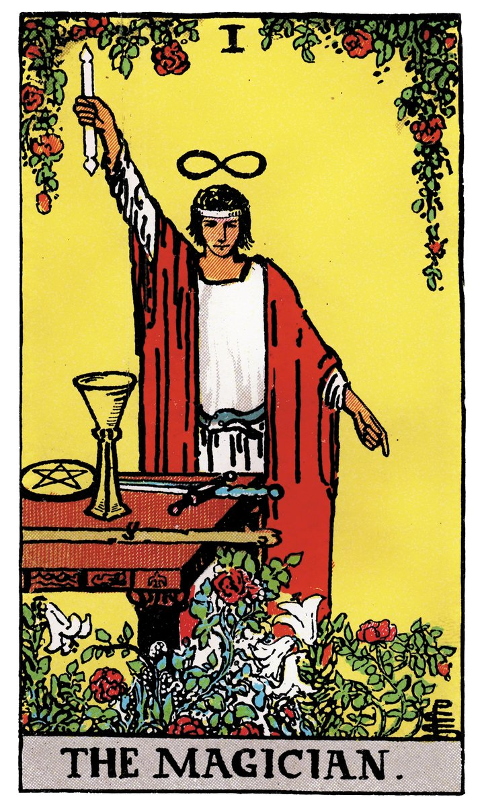
| 姿态 | 右手指天、左手指地——他在连接"上面"的灵感和"下面"的行动。身体是通道。 |
| 颜色 | 红色外袍代表行动力和意志，白色内衬是纯净的意图。黄色背景再次出现——意识的觉醒。 |
| 数字 | 1 — 从0的混沌中诞生的第一个存在。1是起点、专注、自我意识的诞生。 |
如果说愚人是"我想出发"，魔术师就是"我能做到"。愚人的0是混沌的可能，魔术师的1是第一个有形的存在——一个明确的我。桌上四样东西（圣杯、宝剑、权杖、星币）代表你手中全部的牌：情感、思想、行动、物质。魔术师不是变魔术的人，他是意识到自己拥有资源的人。你不需要等别人给你东西——你面前桌上已经摆满了。
那个"如其在上，如其在下"的手势是整个塔罗的核心法则之一：你的内在世界和外在世界是连通的。右手指天——接收灵感、直觉、更高的指引；左手指地——把这些东西落地，变成具体的行动和结果。头上的∞符号在说：你的创造力没有上限。腰间的衔尾蛇是永恒的循环——每一次创造都是自我更新。
当魔术师出现在你的牌阵中，它是最积极的信号之一：你有能力。你可能觉得自己不够格、不够好、不够有经验——但魔术师告诉你，你需要的资源已经在桌上了。它问的不是"你能行吗"，而是"你愿意用你手上已有的东西开始吗"。专注力是你此刻最强大的工具——选一样桌上的东西，先用起来。
魔术师逆位时，"我能做到"的那份确定感失衡了。可能走向两种方向：要么你手里明明摆着桌上的四样资源，却总觉得自己不够格、不够好，迟迟不动手——把才能搁置到积灰；要么你把这份"如其在上、如其在下"的连接力用歪了，用技巧去操控别人，用话术掩盖空壳，把魔术变成了戏法，桌上的东西成了道具而非工具。
逆位魔术师在问你：你的能力是为谁服务的？如果你是因为不敢用而停滞，那就回到桌前——不需要更厉害才能开始，开始本身就是力量。如果你在用"能说会道"遮掩真实的空洞，那是时候把指向天空的手真正接回指向地面的行动——让意图和行动对齐，而不是用语言制造幻觉。魔术师的∞不是无限地承诺，是无限地兑现。
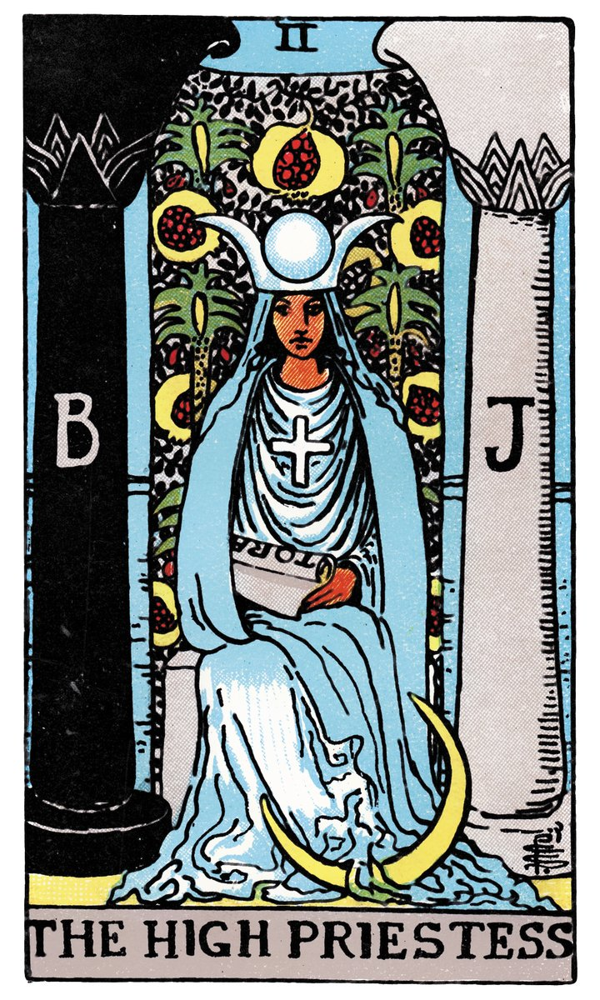
| 姿态 | 端坐不动，书卷半开——她手里有答案，但不急着翻给你看。她在等你问对问题。 |
| 颜色 | 大面积蓝色——冷静、直觉、距离感。两根柱子黑白分明，象征对立面的共存。 |
| 数字 | 2 — 二元性。魔术师的"1"是纯粹的自我，女祭司的"2"是第一次分裂：内与外、意识与潜意识、说与不说。 |
魔术师是"做"，女祭司是"不做"。她是塔罗旅程中的第一个暂停——不是退缩，而是从"向外行动"转向"向内感知"。她膝上的书卷半开着——里面有答案，但她不翻给你看。不是她不给你，而是有些答案需要你自己准备好才能接收。她等的是你问出对的问题，而不是急着要一个对的答案。
那两根黑白柱子是女祭司最经典的符号。黑色是潜意识、未知、隐藏的深度；白色是意识、已知、显现的表面。她坐在两者之间，意味着她同时拥有两个世界的视角。背后的帷幕——薄薄的、半透明的——暗示真相离你并不远。脚下那弯新月是直觉的象征：月光不刺眼，但它足以让你在黑暗中看清轮廓。
当女祭司出现在你的牌阵中，它通常不是在说"你需要知道答案"，而是在说"答案已经在你了"。它问：你是不是在向外找，却忽略了内在的声音？你有没有停下来安静一会儿，让直觉浮上来？有时候，女祭司意味着一个秘密——不是有人在骗你，而是时机未到，帷幕还没拉开。等一等，不需要急。
女祭司逆位时，那份向内倾听的安静消失了。可能有两种失衡：要么你把所有注意力都投向外部的喧闹——社交、信息、别人的看法，以至于再也听不见自己内心那个细微的声音；要么你把本该守护的秘密说了出来，把还没成熟的直觉匆忙下结论，把帷幕后未揭晓的真相强行拽到光下，反而失去了它本该有的力量。
逆位女祭司在问你：你最近是不是太吵了——不是周围太吵，是你自己内部太吵？直觉不是没有来，而是被你盖住了。试着安静一会儿，不必立刻反应、不必立刻发声。帷幕不是永远不开，只是时机未到。重新回到那两根柱子之间，既不偏向白的张扬，也不偏向黑的隐藏——让书卷自己翻开下一页，新月会重新照亮你该看见的轮廓。
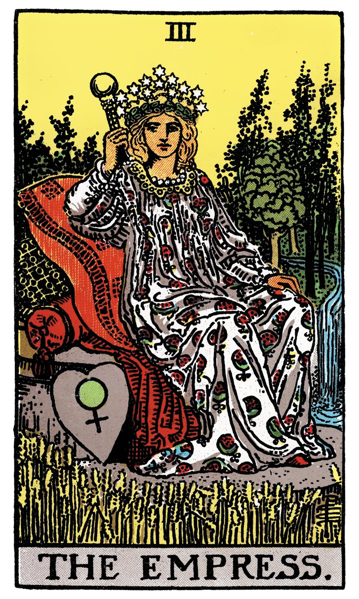
| 姿态 | 靠坐而非端坐，身体放松舒展——她不需要紧绷来证明自己的权威。她是"在"的力量。 |
| 颜色 | 金黄色主导画面——丰收、富足、阳光。绿色是生机。石榴图案象征多产与丰饶。 |
| 数字 | 3 — 创造与生长。1是独立的个体，2是对立与选择，3是"1+1之后诞生的新东西"。 |
女皇是塔罗中最丰饶的一张牌。女祭司向内守着自己的秘密，女皇则向外播撒生命。她不是"努力创造"，而是"创造自然发生"——就像春天不需要命令花朵开放，麦田不需要催促才能生长。女皇代表了你生命中那些"自然而然就来了"的东西：灵感、机会、一段关系的升温、一种身体本能的智慧。
注意她靠坐的姿态——和皇帝的石制王座形成鲜明对比。女皇不需要用"硬度"来证明权威，她的力量来自放松与接纳。石榴图案是多产的象征——不是焦虑的"我必须产出更多"，而是丰饶的"我本身就在不断生出新的可能"。她头戴十二星冠冕——黄道十二宫环绕着她，暗示她与整个自然节律同步。
当女皇出现在你的牌阵中，它通常是好兆头：生长、收获、美和感官的愉悦正在到来。它在问：你允许自己享受吗？你有没有忽略了身体的需要——休息、触摸、一顿真正好吃的饭？有没有一个项目或一段关系，需要你少一些"管理"，多一些"让它自己长"的信任？女皇不是叫你躺平——她是叫你像植物一样：扎根、晒太阳、自然生长。
女皇逆位时，那份"自然生长"的丰饶失衡了。可能走向两个方向：要么你把"照顾"变成了"控制"——对身边的人、对项目、对一切你以为是爱的东西握得太紧，反而让生机窒息；要么你忘了女皇最关键的姿态——靠坐、放松、接纳——你把自己照顾得很糟，持续消耗，却仍在拼命"产出"，把滋养别人当成不滋养自己的理由。
逆位女皇在问你：你是不是把"付出"误当成了"爱"？真正的丰饶是先让自己满，再让溢出来的部分滋养别人。如果你正卡在创作的干涸里、关系的窒息里，不要更努力——反而要更松手。回到身体：一顿好饭、一次休息、一次触摸。麦田不需要你催，它需要你回到自然的节律里。十二星冠冕不是戴给最累的人的，是戴给最肯让自己舒展的人的。
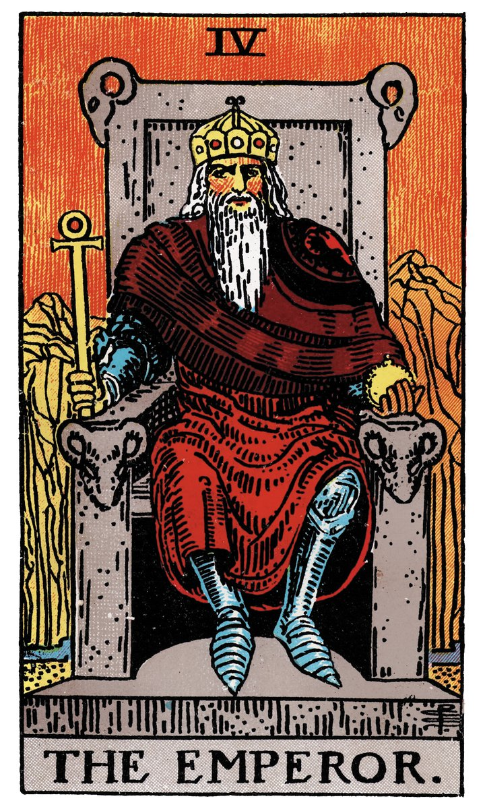
| 姿态 | 端坐石椅，身体端正稳固——不是放松，是掌控。他不需要动，他的存在本身就是秩序。 |
| 颜色 | 大面积红色——权力、意志、行动力。橙红山脉像火焰燃烧，暗示他掌管的是一个需要征服的世界。铠甲是冷色调，理性包裹着力量。 |
| 数字 | 4 — 稳定、结构、四方形、四元素。女皇的3是生长，皇帝的4是把生长的东西固定下来，建立边界和规则。 |
如果说女皇是"让一切自由生长"，皇帝就是"给生长划定边界"。在塔罗的旅程中，愚人出发、魔术师行动、女祭司内省、女皇滋养——到了皇帝，你需要建立秩序。不是每个想法都值得追随，不是每种情感都值得表达。皇帝的铠甲在说：有些东西需要被约束，才能变得强大。
王座上的公羊头是白羊座的符号——开创、冲动、不服输。皇帝不是一个"坐在那里发号施令"的人，他本身就是战士。他身上的铠甲和手中的安卡十字形成了一组张力：力量与生命的共存。真正的权威不是压迫别人，而是为自己和他人建立安全的结构。
当皇帝出现在你的牌阵中，它可能在问：你生活中有哪些方面需要建立边界？你是否在逃避承担责任？有没有一件事，你需要用"我来负责"的态度去面对，而不是等别人来解决？皇帝不是独裁者——他是那个愿意站出来说"我来"的人。
皇帝逆位时，那份"建立秩序"的力量失衡了。可能走向两种方向：要么你把结构变成了牢笼——规则过严、控制过紧，用"我说了算"压制一切流动，最后身边的人要么反抗、要么离开，权威从内部崩塌；要么你走到了反面，完全无法建立边界——纪律缺席、责任逃避、该说"我来"的时候退缩，让一切散成一团。
逆位皇帝在问你：你的"权威"是来自控制，还是来自承担？真正的皇帝不是坐得最稳的那个，是愿意第一个站出来的那个。如果你正僵化得喘不过气，试着松一松铠甲——结构是为了保护，不是为了囚禁。如果你正退缩不前，那就需要重新为自己立一个边界，哪怕只是很小的一个。秩序不是别人给的，是你亲手建起来给自己住的房子。
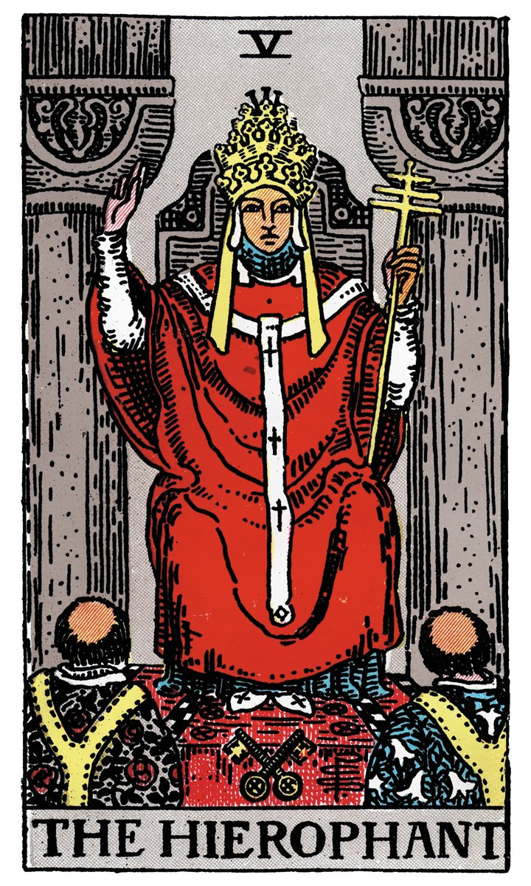
| 姿态 | 端坐举右手——不是命令，是祝福与传授。下面跪着的两个人是在"接收"，不是在"服从"。 |
| 颜色 | 红白蓝三重色——红色是行动，白色是纯净，蓝色是智慧。三种颜色叠加在一起：他代表的是融合的知识体系。 |
| 数字 | 5 — 在4的稳定之后，5带来变化和冲突。教皇是"在传统框架内寻找精神成长"，5的张力在于：跟随传统还是打破传统？ |
教皇是塔罗中最容易让现代人产生误解的一张牌——我们本能地抗拒"权威""教条""被教导"。但教皇的真正含义不是"服从"，而是找到你的传承。愚人靠自己探索，魔术师靠自己行动，但到了某个阶段，你需要一个引路人、一套已有的知识体系、一群同行者。这不是软弱——这是智慧。
注意教皇和女祭司的对应关系：女祭司守着自己的秘密，教皇则把智慧传授出去。女祭司说"你自己悟"，教皇说"我带你走一段"。那两个跪着的僧侣，一个穿着玫瑰图案的衣服（代表渴望），一个穿着百合图案的衣服（代表纯净的初心）——他们不是被迫跪下的，是自己选择来学习的。
当教皇出现在你的牌阵中，它可能在问：你是否需要向某个有经验的人请教，而不是继续自己摸索？有没有一套现成的方法或传统，值得你先认真学习？或者反过来——你是否已经走到了"可以教别人"的阶段？教皇既是学生，也是老师。
教皇逆位时，你和"传承"的关系失衡了。可能走向两种方向：要么你把对传统的质疑推到了另一个极端——为了反叛而反叛，把所有"前人走过的路"都当作要打破的枷锁，结果丢了可以依靠的根，在精神的旷野里迷路；要么你走向反面，把某套体系当成绝对真理，容不下任何不同的声音，教条取代了智慧，仪式取代了真实的连接。
逆位教皇在问你：你是在反抗，还是在逃避？真正的独立不是把所有老师都赶走，是你学够了之后，有资格选择"哪些是我、哪些不是我"。如果你正迷失，也许你需要先认真学一套东西，再决定要不要走自己的路。如果你正僵化在某个体系里，试着把三重冠冕摘下来一会儿——你的真理不需要别人盖章，但它需要你自己亲自去验证。
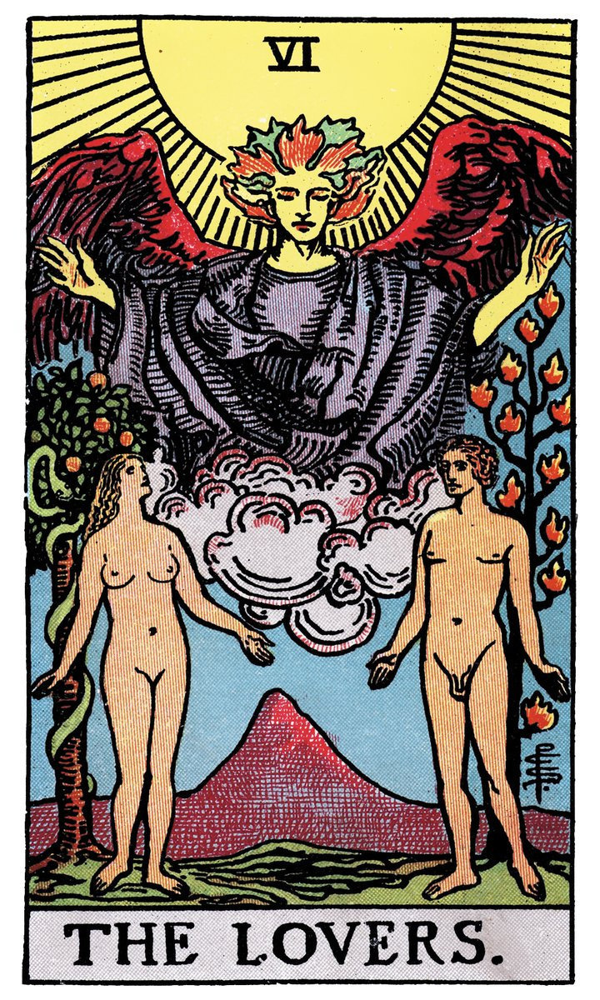
| 姿态 | 两人裸体相对，毫无遮掩——坦诚。男人看着女人，女人看着天使——他在关注"关系"，她在关注"更高的指引"。 |
| 颜色 | 绿色大地（生命）、紫色山脉（灵性）、金色阳光（意识）。两人没有华丽的服饰，纯真而直接。 |
| 数字 | 6 — 和谐、沟通、恢复平衡。在5的动荡之后，6带来和解与连接。6是"我和你"的数字。 |
恋人牌远不只是"谈恋爱"的意思。在塔罗的旅程中，愚人是独自出发，到了恋人这里，你第一次面对"另一个人"——一段关系、一个选择、一次价值观的碰撞。天使拉斐尔的名字在希伯来语中意为"神的治愈"，他的存在意味着：真正的爱不是占有，而是治愈彼此。
男人身后的生命之树有十二个果实（十二星座），女人身后的智慧之树盘着蛇——这暗示了关系中两种不同的力量：本能与意识、欲望与选择。亚当和夏娃的故事里，他们因为"吃了智慧果"而被驱逐；但在这张牌里，赤裸不是羞耻，选择不是错误。恋人牌的核心是：你有能力做出自己的选择，并为它负责。
当恋人出现在你的牌阵中，它不只是在说爱情。它在问：你正在面对什么选择？这个选择反映了你怎样的价值观？你是否愿意对某人（或某事）坦诚相待——不戴面具、不设防备？有时候，恋人牌也意味着你需要在"头脑的决定"和"内心的渴望"之间找到一致。
恋人逆位时，那份"坦诚相对"的连接失衡了。可能走向两种方向：要么你站在一个分岔口迟迟选不了——不是因为没有选项，而是因为你内在的渴望和外在的期待在打架，头脑的决定和心里的声音说不出同一句话；要么你已经在一段关系或一种选择里，但价值观在悄悄错位，你却用"再忍忍"或"假装没看见"来逃避面对。
逆位恋人在问你：你是在犹豫，还是在假装？天使拉斐尔仍在你们之间——但治愈的前提是坦诚。如果你在两个选择之间拉扯，不要再问"哪个更好"，而是问"哪个更像我"。如果你在一段需要重新审视的关系里，赤裸比体面更重要——恋人牌里那对裸体的人，不是没衣服穿，是选择不藏。重新对齐你的价值观，选择就会自己浮现。
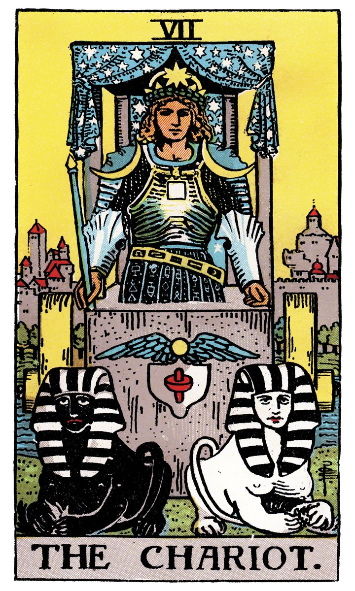
| 姿态 | 站立在战车中，没有缰绳却驾驭着两头方向相反的神兽——他用意志而非蛮力控制局面。身体被铠甲包裹，但面部平静。 |
| 颜色 | 黑白斯芬克斯是对立面（理智/情感、意识/潜意识）。星空顶篷——他的目标不在眼前，在更远的地方。 |
| 数字 | 7 — 内省、挑战、坚持。在恋人牌的选择之后，7是"我选好了，现在我要出发"——带着决心和可能的内在冲突。 |
战车是塔罗旅程中的第一个重大转折——前面七张牌都在"准备"，到了战车，你终于动起来了。但注意：那两只斯芬克斯一只黑一只白，方向并不一致。战车的真正含义不是"一帆风顺地前进"，而是在对立的拉力中依然前进。你心里有恐惧和勇气、理智和冲动、想走和想留——这些矛盾不会消失，但你可以带着它们上路。
他没有缰绳。这是战车最关键的细节。他驾驭斯芬克斯靠的是意志——一种内在的专注和方向感。头顶的星空帷幕暗示：他的方向来自更高的视角，不是眼前的路况。胸前的炼金术符号（方中有圆）代表"将大地之物炼成黄金"——把平凡的挑战转化为成长的燃料。
当战车出现在你的牌阵中，它在问：是什么在拉你往不同方向？恐惧和渴望在同时驱动你——你能让它们为你所用吗？你是不是已经准备好了，只是还没踩下油门？战车不是终点，它是出征。赢不赢是后面的事，先出发。
战车逆位时，那份"在对立的拉力中前进"的意志失衡了。可能走向两种方向：要么那两只一黑一白的斯芬克斯彻底分裂——你的恐惧和渴望、理智和冲动往完全相反的方向拉，你哪也去不了，只能原地打转，内耗把所有力气都耗光了；要么你放弃了意志的驾驭，改用蛮力硬冲——不管方向，不顾路况，把"出发"本身当成胜利，结果冲得越快越偏。
逆位战车在问你：你是在被拉扯，还是在乱冲？如果是前者，先别急着上路——那两只斯芬克斯需要被看见，不是被消除。承认你心里的两股力，然后找到一个比它们更高的方向，让它们为你所用。如果是后者，松一松油门——战车最关键的不是速度，是那个"没有缰绳却依然前进"的意志。方向比速度重要，先校准方向，再踩油门。

| 姿态 | 她不是"按住"狮子，而是"合上"它的嘴——像安抚一个焦躁的朋友。她的力量来自触碰，不是压制。 |
| 颜色 | 白色长裙（纯净意图）+ 蓝色山脉（冷静的距离）+ 金色天空（意识的光）。狮子的黄色鬃毛呼应太阳的能量——野性本身也是生命力。 |
| 数字 | 8 — 力量、行动、因果。在某些牌序中力量是11号，韦特把它放在8号——在战车的"外在征服"之后，8是"内在征服"。 |
力量是整副塔罗中最容易被低估的一张牌。它画的不是肌肉、不是武器、不是压倒性的优势——而是一个女人和一头狮子之间温柔的信任。战车用意志驾驭对立面，力量用耐心驯服恐惧。狮子不是敌人，它是你体内那股原始的能量：愤怒、欲望、恐惧、本能。你不需要杀死它，你只需要让它信任你。
注意她头上那个无限符号——和魔术师一模一样。魔术师用它来"转化外部世界"，力量用它来转化内在世界。双手合上狮嘴的动作不是一次性的征服，而是一种持续的、平静的陪伴。真正的力量不是爆发力，是耐力。是每天醒来面对同一头狮子，依然心平气和。
当力量出现在你的牌阵中，它在问：你在害怕什么？那股恐惧如果不再被压制，而是被理解——会发生什么？你是否在用"硬撑"代替真正的力量？有时候，力量不是"我不怕"，而是"我怕，但我还是可以走过去"。
力量逆位时，那份"温柔地驯服内在野性"的平衡失去了。可能走向两种方向：要么你被狮子吓住了——自我怀疑占了上风，恐惧压过了勇气，你不敢面对自己内在的那股原始能量，转而逃避、压抑、假装它不存在；要么你走向反面，用强硬代替温柔，用压制代替驯服，对别人、对自己都粗暴，把"我必须强大"演成了"我不能软弱"，反而和内在真正的力量断了连接。
逆位力量在问你：你的"强"，是来自信任，还是来自恐惧？如果是前者，那个∞符号会重新亮起来——你不需要更多力气，只需要回到那份"我知道我可以陪着这头狮子"的平静。如果是后者，试着松开攥紧的手——力量不是握得越紧越有，是越能温柔地合上狮嘴越显。勇气不是不害怕，是害怕的时候依然愿意伸出手。
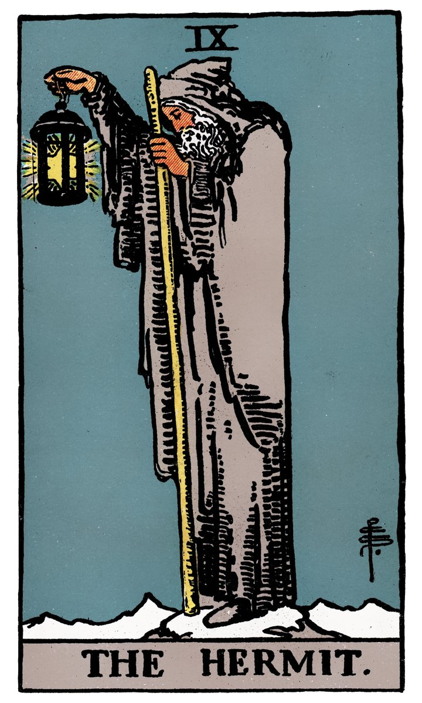
| 姿态 | 独自站立，低头看路——不是迷茫，而是专注。灯笼举在身前，只照亮下一步，不照整个未来。 |
| 颜色 | 大面积灰色——不是黑也不是白，是"去除了喧嚣"后的中性。深蓝夜空和白色雪山——孤独但不凄凉。 |
| 数字 | 9 — 接近完成、孤独的坚持。9是10之前的最后一步，是"快要到了但还没到"的时刻，需要独处的勇气。 |
隐士是塔罗旅程中最容易被"跳过"的一张牌——因为它看起来什么都没发生。一个老人在山上站着，有什么好说的？但隐士恰恰是最关键的中场休息。从愚人到战车，你一直在向外跑——出发、行动、选择、征服。到了隐士，你必须停下来，一个人待一会儿。不是因为累了，而是因为再往前走，需要一种外部世界给不了的东西：方向感。
灯笼里的六角星是"所罗门封印"——在神秘学中代表对立面的融合。隐士的光不是太阳（外部光源），而是他自己提着的光。这意味着：你不需要外界告诉你该往哪走，你手里已经有灯。隐士的手杖是支撑，也是探测——每一步都是试探，每一步都是确认。
当隐士出现在你的牌阵中，它在问：你是不是太久没有一个人待着了？你的"方向"是从哪里来的——别人告诉你的，还是你自己找到的？有没有一个决定，需要你在安静中而不是在嘈杂中做出？隐士不是逃避人群，他是为了带着更清醒的自己回到人群。
隐士逆位时，那份"主动选择独处"的智慧失衡了。可能走向两种方向：要么你把"独处"变成了"隔绝"——不是带着灯笼去找路，而是关掉灯、关上门、谁也不见，把所有外部的声音都拒之门外，结果不是更清醒，而是更迷失，因为没人帮你映照；要么你走向反面，害怕一个人待着，用不停的社交、信息、活动填满每一秒，喧闹盖过了内在的声音，你以为这样就不孤独了，其实你只是更听不见自己了。
逆位隐士在问你：你是在独处，还是在隔绝？你是在社交，还是在逃避？灯笼还在你手里——但只有你愿意一个人停下来，它才会亮。试着找一个不被打扰的角落，关掉所有外部的声音，问自己一个简单的问题："这段时间，我到底在往哪走？"如果答不上来，不是因为你迷路了，是因为你太久没问过自己了。隐士会回来，但你得先给他开门。
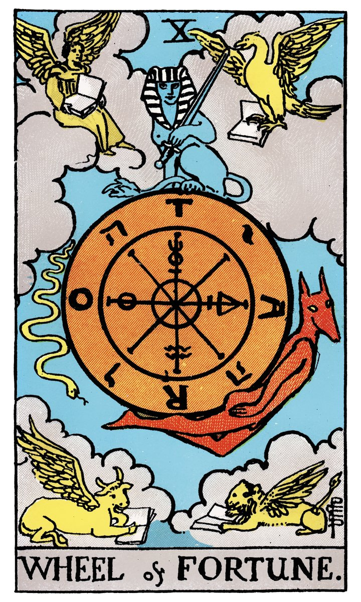
| 姿态 | 轮盘本身没有起点和终点——它在持续转动。斯芬克斯持剑端坐，是唯一不动的存在：在变化中保持平衡。 |
| 颜色 | 橙色轮盘（生命力、变化）、蓝色斯芬克斯（冷静的觉知）。四角的黄云和四活物——宇宙在旁观你的旅程。 |
| 数字 | 10 — 一个循环的完成，同时也是下一个循环的开始。10是"1和0的并置"——新的起点包含在终点之中。 |
命运之轮是整个大阿尔卡纳的正中心——10号，22张牌的半程。这不是巧合。前面九张牌，你在学"我怎么做"：出发、行动、选择、征服、内省……到了第十张，塔罗突然告诉你一个更宏大的真相：有些事情不归你管。轮子自己在转，你能做的不是控制它，而是看清它此刻把你带到了什么位置。
注意轮盘上的三个生物：蛇在往下（衰败、阴影、过去）、阿努比斯在往上（重生、上升、未来）、斯芬克斯在顶端不动（觉知，超越上升和下降的判断）。这告诉我们：好运和坏运都是轮盘的一部分。你此刻在"上升期"不必得意，在"低谷期"不必绝望——轮子会转。斯芬克斯持剑，剑代表清晰的觉察：看到轮子在转，你就不再被它带着跑了。
当命运之轮出现在你的牌阵中，它在说：变化来了。不是你的错，也不全是你的功劳——但你的反应是你的。你是被转的那个，还是看着轮子转的那个？有时候，最好的应对不是加速或刹车，而是接受此刻你在轮盘上的位置，然后做好这个位置该做的事。
命运之轮逆位时，你和"变化"的关系失衡了。可能走向两种方向：要么你死死抓住轮子的某个位置不肯松手——一段已经结束的关系、一份已经不适合的工作、一个已经过时的身份，你抗拒它转走，结果被轮子带着硬拖，伤得更重；要么你觉得轮子完全卡住了，怎么努力都没用，陷入"反正都是命"的消极，看不见自己其实可以选择以什么姿态待在轮盘上。
逆位命运之轮在问你：你是在跟轮子较劲，还是在假装它不转？斯芬克斯还在顶端持剑——它的觉察不依赖轮子转向。如果你正抗拒变化，试着松一松手——轮子转下去不是抛弃你，是带你去下一个位置。如果你正觉得被困住，看看自己是不是卡在了某个旧循环里不肯走。命运不是你能控制的东西，但你对它的反应，是你的命运之中唯一归你管的部分。
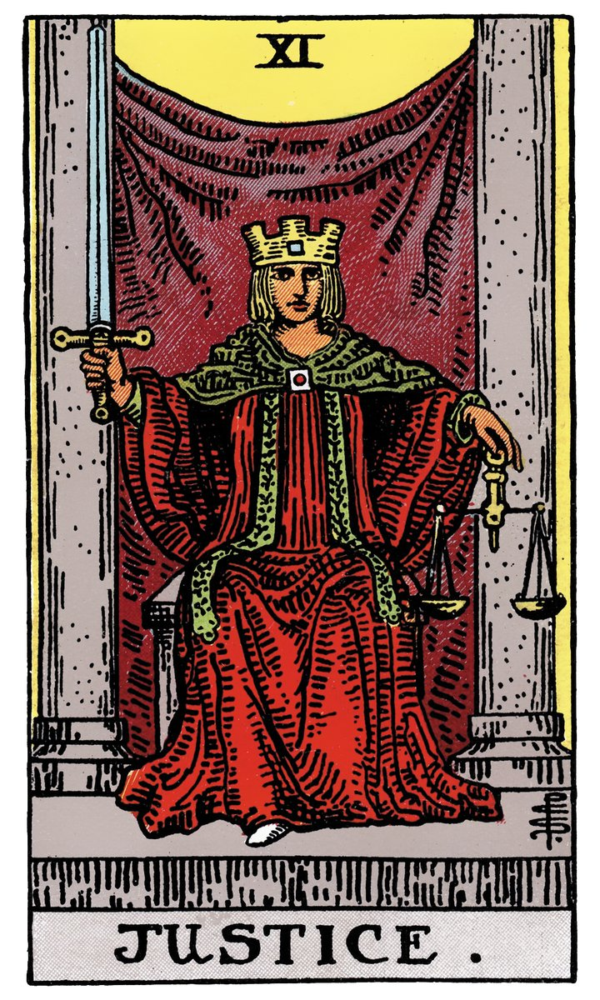
| 姿态 | 端坐平视，剑和天平一手一个——判断和执行同时进行。剑尖向上，不是攻击，是真理的方向。 |
| 颜色 | 红色（行动）+ 绿色（平衡/治愈）+ 紫色（灵性）。三种颜色叠在一起——正义不是冷冰冰的，是有温度的公平。 |
| 数字 | 11 — 在10的循环结束后，11是新的开始，但这次带着"因果的账单"。1+1=2，暗示二元性的审判——对与错、因与果。 |
正义在韦特塔罗中排第11号——刚好是22张大牌的正中间偏右。命运之轮告诉你"变化不由你"，正义则告诉你"后果由你承担"。这两张牌是塔罗旅程的中点，像一座天平的两端：一边是宇宙的不可控，一边是个人的责任。正义不是惩罚，是校准。天平在称的不是"你有罪吗"，而是"这件事的真实重量是多少"。
她手里的剑是双刃的——真理既能解放你，也能刺痛你。剑尖向上，意味着正义永远指向更高的原则，而不是向下砍人。绿色披肩是平衡与疗愈的颜色：真正的正义不是报复，是让事物回到它应有的位置。方形皇冠代表逻辑和结构——她的判断不是情绪化的，是经过审视的。
当正义出现在你的牌阵中，它在问：你正在回避什么真相？有一个决定你迟迟不做——你在等什么？你对自己公平吗？对别人公平吗？有时候正义牌的出现，意味着你需要为之前的某个选择接受它的自然结果——不是惩罚，是因果。诚实面对，就是力量。
正义逆位时，那架天平倾斜了。可能走向两种方向：要么你对外界苛责、对自己宽容，或者反过来——对自己苛刻、对别人盲袒，天平的支点偏了，判断就失去了公正的基础；要么你干脆逃避做出判断，迟迟不愿面对一个该面对的真相，用"再看看""不一定"拖延本该承担的责任，让事情悬在那里，既不清算也不结束，反而比坏的结果更消耗。
逆位正义在问你：你是在偏，还是在逃？那把剑仍然向上指着——真理不会因为你不看就消失。如果你正偏颇，试着把天平两端的砝码都重新称一遍，包括你自己加进去的那些"应该"和"不应该"。如果你正逃避，记住：不做选择也是一种选择，而且通常是更糟的那种。正义不是要你立刻判死刑，是要你睁开眼睛——因果已经在那里了，你愿不愿意看见它，决定了你下一步是踩稳还是绊倒。
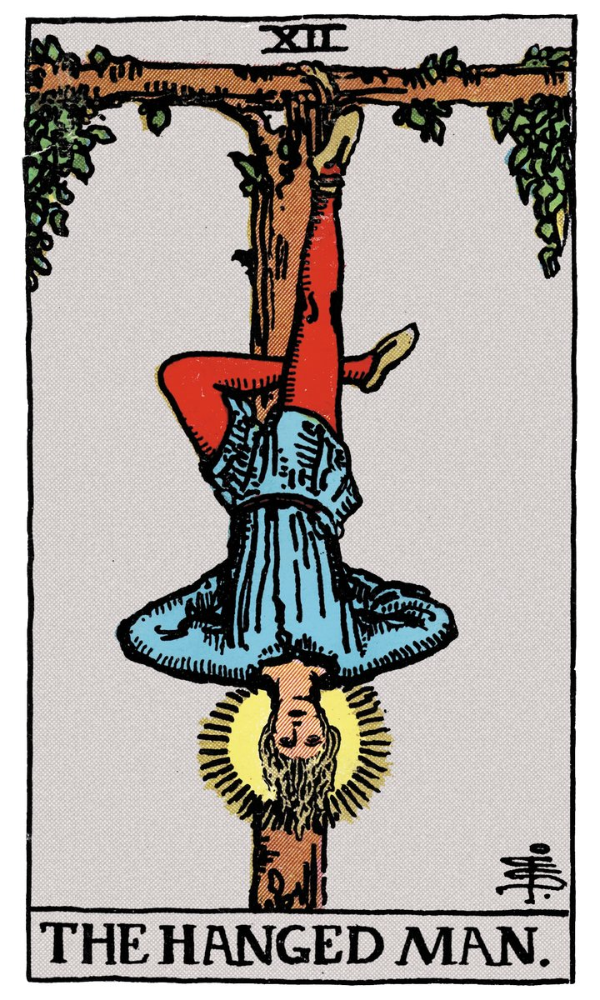
| 姿态 | 倒吊——彻底颠倒的视角。双手自然背后，不是被迫，是自愿。左腿弯成倒三角——在炼金术中代表"将高与低、天与地融合"。 |
| 颜色 | 红色裤子（仍然有生命力）配蓝色上衣（冷静）。金色光环——他的觉悟不是来自行动，而是来自"停下"。 |
| 数字 | 12 — 12是黄道十二宫的数目，代表宇宙的完整循环。倒吊人是"自愿暂停循环"——跳出日常节奏，获得新的视角。 |
倒吊人是塔罗中最"反直觉"的一张牌。正义要求你做出判断和行动，倒吊人却说：先别动，倒过来看看。他不是一个受害者——注意他的表情，那是整副塔罗中最平静的脸之一。他不是被人吊上去的，他是自己选择悬在那里的。这种"自愿的暂停"是塔罗旅程中一个深刻的转折：有时候，什么都不做比做什么都难，但也比做什么都重要。
那个倒三角的腿型是关键符号——在炼金术中，倒三角代表水元素，是情感、直觉、潜意识的领域。倒吊人不是"头朝下所以脑子充血"，而是"把理智的头放到情感的领域里去浸泡"。他获得的光环不是来自成功，而是来自臣服——承认有些事情现在无法解决，承认自己需要停下来。
当倒吊人出现在你的牌阵中，它在问：你是不是一直在"做"，却很久没有"停"了？有没有一个角度，是你从来没有想过的——因为它要求你完全颠覆自己的立场？你是不是在抗拒一段必要的等待？有时候，答案不是向前走能找到的——你得停下来，悬一会儿，让答案自己浮上来。
倒吊人逆位时，那份"自愿暂停"的智慧变成了徒劳的挣扎。可能走向两种方向：要么你在一段早就该放手的事情上死撑——一份消耗你的工作、一段让你窒息的关系、一个你早就该放弃的执念，你把"坚持"误当成了"牺牲的价值"，越挣扎绳索勒得越紧，光环却始终不亮；要么你拒绝悬停，不愿意换个角度看事情，非要按原来的逻辑找出路，结果越挣越乱，把本来可以静静等到的答案，给搅浑了。
逆位倒吊人在问你：你的"悬在那里"，是有意义的等待，还是无意义的消耗？光环不是给所有被吊着的人的——它只给那些自愿悬着、并在悬着的时候真的在看的人。如果你正死撑，问问自己：放手会怎样？也许没那么可怕。如果你正焦躁，试着真的倒过来看一次——你坚持的那个角度，真的是唯一的角度吗？倒吊人的礼物是新的视角，但你得真的愿意倒过来，才能拿到。
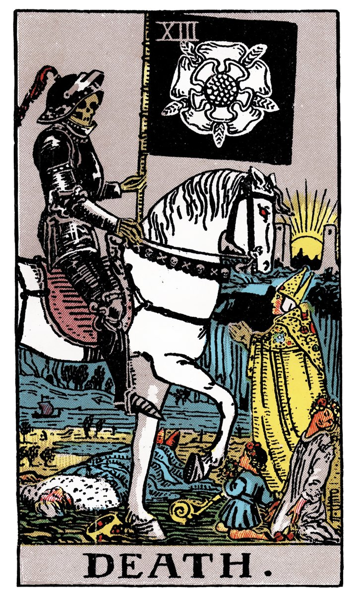
| 姿态 | 骷髅骑在马上——不是冲过来攻击，而是缓慢而不可阻挡地前行。四个人的反应各不相同：抗拒、祈求、回避、接纳。 |
| 颜色 | 黑色铠甲（未知）+ 白马（纯洁的过渡）+ 黑旗白玫瑰（死亡中有新生的种子）。远处太阳是金色——新的黎明。 |
| 数字 | 13 — 在西方文化中被视为不吉利的数字，但在塔罗中，13是12的"破局者"——黄道十二宫之后，需要一次彻底的清空才能进入下一个循环。 |
死神牌是塔罗中最被误解的一张——但它从来不是"你会死"的意思。它说的是：有些东西需要死了。一段关系、一份工作、一个身份、一种执念、一种你早就该放下的自我认知。倒吊人的"暂停"之后，死神带来真正的清场——不是残忍，而是自然。就像森林需要野火才能更新，你的生命也需要定期烧掉一些旧东西，才能让新的长出来。
画面里四个人的反应是一面镜子：国王代表"权力和身份面对终结时的无力"，主教代表"用信仰和仪式来抵挡变化"，少女代表"不敢看、不愿承认"，只有那个孩子——捧着花直视死神——不害怕。因为孩子不懂"失去"，只懂"下一个"。旗上的白玫瑰是共济会的重生符号：死亡不是终点，是门。
当死神出现在你的牌阵中，它通常不是一个坏消息——尽管看起来吓人。它在问：你抓着什么不放？有什么东西其实已经结束了，只是你还没承认？如果你放手，空出来的双手可以接住什么新的东西？死神不问你"准备好了吗"——他只是来了。你的反应才是你唯一能选的。
死神逆位时，那场本该发生的清场被拖延了。不是死神没来——他已经骑着白马到了，是你不让他进门。可能走向两种方向：要么你死死抓住一段已经结束的关系、一份已经枯竭的工作、一个早就该放下的身份，用"再等等""也许还能挽回"自我安慰，让本该新生的东西被腐朽的旧物堵在门外；要么你承认结束了，但拒绝真正的告别——表面翻篇，心里还赖在原地，结果新生活开始了，你却不在场。
逆位死神在问你：你在怕什么？那个本该死去的东西，如果真的死了，你最害怕失去的是什么？白玫瑰一直在旗上——重生是可能的，但前提是先让该死的死。死神不残忍，残忍的是你抓住腐朽不放，让自己在半死不活的状态里耗着。试着看一眼那个不害怕的孩子——他不是不懂失去，他是懂了之后还是选择直视。放手不是放弃，是给新东西腾出位置。
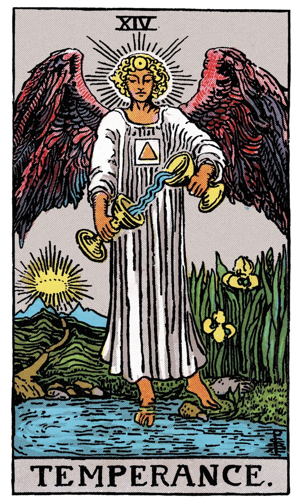
| 姿态 | 一只脚在水中（情感/直觉），一只脚在岸上（现实/行动）——他在两个世界之间，但不撕裂。倒水的手势是"调和"而非"混合"。 |
| 颜色 | 白色长袍（纯净）+ 绿色大地（生长）+ 金色光环（觉悟）。水的流动是画面中唯一的动作——缓慢、持续、不停。 |
| 数字 | 14 — 在死神的13之后，14是"重生后的调和"。14也是7的两倍——隐士的独处智慧翻倍成了天使的融合智慧。 |
节制是死神之后的第一张牌——旧的烧掉了，现在你要把剩下的东西重新调和。天使手中的两个杯子是关键：他不是在混合（把两样东西搅在一起失去各自的特性），而是在调和——水从一个杯子流到另一个，保持流动，保持平衡。生活不是"工作和生活二选一"，不是"理性和感性二选一"。节制告诉你：它们可以共存，只要你在它们之间保持流动。
胸前的三角形（火）和方形（土）是炼金术符号——将对立元素融合成更高层次的存在。这就是"节制"的真正含义：不是压抑，不是删减，而是找到恰到好处的比例。那条通往远方王冠的路在说：这不是终点，调和本身就是一个持续的过程。王冠不是奖励，是方向。
当节制出现在你的牌阵中，它在问：你的生活里，什么太多了？什么太少了？你有没有在两个极端之间来回摇摆，而不是找到一个可持续的中间态？有时候，解决不是"选A还是选B"，而是找到A和B之间的流动。慢下来，调一调比例。
节制逆位时，那个流动的水流断了。可能走向两种方向：要么你在两个极端之间来回摇摆——今天放纵明天禁欲，今天热情明天冷漠，今天全投入今天全撤退，杯子里的水从来没真正调和过，只是不停地从一端倒向另一端；要么你干脆放弃了调和，认定"我就是这样的"，把任何一种极端当成自己的本性，不再尝试在中道里站稳，让生活持续失衡。
逆位节制在问你：你的水，还在流动吗？天使一脚在水一脚在岸——不是让你永远站在中间不动，是让你同时拥有两个世界。如果你正摇摆，慢一点——调和不是一次性完成的动作，是持续微调的过程。如果你正固执于某个极端，试着把另一个杯子也端起来——你不需要放弃任何一面，你需要的是让它们之间重新流动。通往王冠的路一直在那里，但只有两只杯子都在倒水的时候，路才会显现。
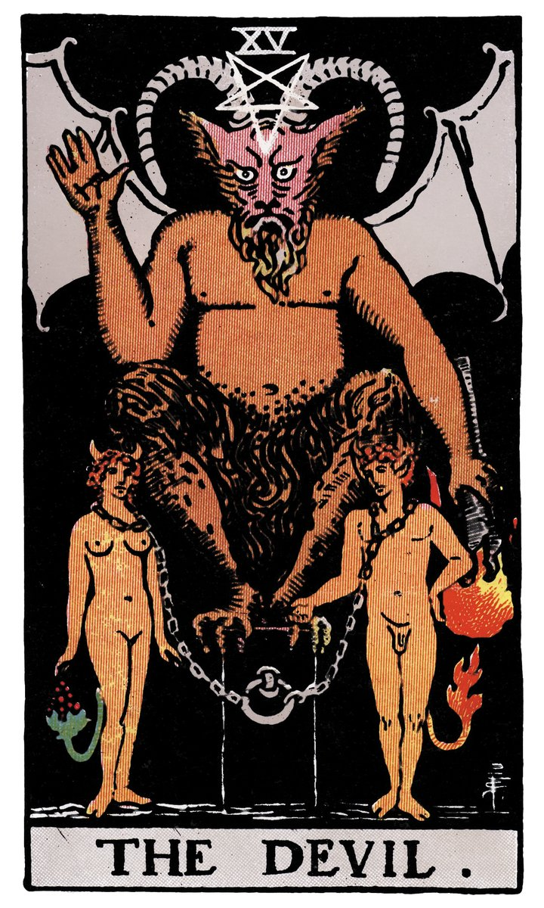
| 姿态 | 恶魔的手势是教皇手势的反转——是"祝福"的扭曲版。那对男女没有挣扎，他们似乎已经习惯了锁链的存在。 |
| 颜色 | 全黑背景——被限制的视野。恶魔的肤色灰暗，但火把是亮的——束缚之中仍有意识的光。 |
| 数字 | 15 — 1+5=6，6是恋人的数字。恶魔是恋人的阴影面——同样的两个人，从"选择彼此"变成了"捆绑彼此"。 |
恶魔是整副塔罗中最让人不适的一张——但它的力量恰恰来自这种不适。注意那个最重要的细节：锁链是松的。这对男女完全可以把链子从脖子上取下来，但他们没有。这就是恶魔的本质——不是外部的压迫，而是你自己默许的束缚。你习惯了某段消耗你的关系、某种不健康的生活方式、某个让你恐惧的信念——不是因为它绑住了你，而是因为取下锁链意味着你要面对自由，而自由比锁链更让人害怕。
恶魔头上的倒五角星——在神秘学中代表"物质凌驾于精神之上"。这不是什么邪恶势力入侵，而是你把自己困在了可见的世界里：只相信钱、只相信地位、只相信别人怎么看你。那对男女的角和尾巴——他们已经和束缚他们的东西长在一起了，分不清"这是我"还是"这是绑住我的东西"。
当恶魔出现在你的牌阵中，它不是说你被诅咒了。它在问：你是不是把自己困住了？有什么东西你以为"不得不"，但其实"可以不"？你有没有对什么上瘾——不一定是物质，可能是某个人的认可、某种被需要的感觉、某种安全的痛苦？看到锁链是松的，就是解开的开始。
恶魔逆位时，那根松松的锁链终于开始从脖子上滑落。可能有两种走向：要么你突然看清了一直以来束缚你的那个东西——一段消耗的关系、一种物质的执念、一个让你成瘾的模式，第一次承认"这不是我必须承受的"；要么你正处在挣脱的阵痛中，旧的习惯还在拉扯，新的自由又让你害怕，结果卡在半路——既不愿回到锁链里，又不敢真正离开。
逆位恶魔在问你：你愿意为自由付多少代价？锁链松了不等于自动脱落，你还得亲手把它取下来。火把仍在恶魔手里——意识的光一直在，只是你以前不敢用它照自己。挣脱的过程会痛，因为你和束缚已经长在一起了。但角会褪、尾会掉——你不是恶魔，你只是误把自己当成了它。从承认开始：承认你在逃避，承认你在沉溺，承认你可以走。

| 姿态 | 崩塌正在进行——塔顶飞了，人在坠落。这不是"可能会塌"，是"已经在塌"。两个人的姿势暗示不同的态度：一个头朝下（抗拒），一个头朝上（接受）。 |
| 颜色 | 灰色石塔（人造的、僵化的结构）+ 金色闪电（更高力量的介入）+ 黑色背景（旧世界的终结）。火焰是橙红色——破坏中的能量。 |
| 数字 | 16 — 1+6=7，7是战车的数字。战车是你驾驭对立面前进，高塔是那些你驾驭不了的东西终于爆发了。16是"被打破的结构"。 |
高塔是塔罗中最"暴力"的一张牌——但它的暴力是有方向的。闪电不是随机的雷击，它精准地劈在塔顶的王冠上——劈掉的是"我以为我是谁"的幻象。那座塔是你用理性和自负搭建的结构：一份体面的工作、一段看起来没问题的关系、一个精心维护的人设。闪电是真相——它不和你商量，也不管你准备好了没有。
那两个坠落的人：一个头朝下——他还想爬回去，想"修复"已经崩塌的东西。另一个头朝上——他在下坠中翻了个身，开始看天。同样的崩塌，不同的姿态。22个小火苗在希伯来字母中代表Yod——"上帝之手"的第一个字母。意味着这场崩塌不是灾难，是神圣的干预：你搭了一个太小的笼子，宇宙帮你拆了。
当高塔出现在你的牌阵中，它通常让人心跳加速——但它是来解放你的。它在问：有什么东西是你一直在维护但已经摇摇欲坠的？如果它塌了——你最害怕失去的到底是什么？那个"王冠"是你真正的自我，还是你演给别人看的角色？高塔拆掉的不是你的家，是囚禁你的牢。
高塔逆位时，那道闪电已经在云层里酝酿，但你还撑着不让它劈下来。可能有两种走向：要么你拼命维护一个早已摇摇欲坠的结构——修补、粉饰、假装一切如常，把所有裂缝都用"还好""没事"糊住，结果裂缝越积越多，等到真塌时威力更大；要么你预感到了变化却拼命抗拒，用尽办法推迟那个不可避免的真相，让本可以清醒经历的过程，变成被动挨打。
逆位高塔在问你：你在撑的是什么？那个王冠，还值得你守吗？闪电不是敌人——它是真相提前来敲门。你可以拒绝开门，但它不会因此离开。与其等塔自己塌，不如主动拆掉该拆的部分——拿走那块假王冠、撤掉那根承重不住的柱子。延迟的觉醒还是觉醒，但延迟的代价是：你得多扛一段摇摇欲坠的日子。试着松一松手，让该倒的倒，新的地基才有地方打。
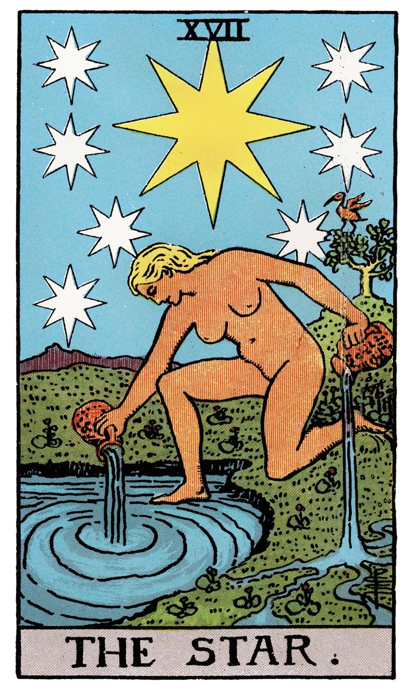
| 姿态 | 跪着倒水，一只脚在水中（连接潜意识），一只脚在岸上（连接现实）。她的裸体不是脆弱——高塔之后，已经没有什么需要遮掩了。 |
| 颜色 | 深蓝色夜空（宁静、深度）+ 金色星星（希望、指引）。水面倒映星光——内在和外在的呼应。绿色原野——新的生长开始了。 |
| 数字 | 17 — 1+7=8，8是力量的数字。高塔的16之后，17是"废墟中站起来的温柔力量"。17也是星星在神秘学中的传统编号——"暴风雨后的希望"。 |
星星是整副塔罗中最温柔的一张牌——它在高塔之后出现，不是巧合。崩塌之后，尘埃落定，你抬头看到了星星。这张牌的核心是信任——不是信任"一切都会变好"，而是信任"即使还没变好，我也可以在这里跪一会儿，倒倒水，看看星星"。她不需要做什么"有用"的事——倒水到池塘和大地，本身就是一种仪式：把旧的流回去，把新的洒出来。
八颗星星对应大阿尔卡纳中八张天体牌的传统编号。八角金星在古代是金星（Venus）的符号——爱、美、希望、和谐。高塔劈掉了假的，星星照亮了真的。那只朱鹭（埃及神托特的化身）是智慧和书写的象征——你现在可以重新书写自己的故事了。但不用急，星星只是照着，不是催你。
当星星出现在你的牌阵中，它通常是一个温柔的信号：休息一下。你已经经历了够多了。不需要马上"振作起来"，不需要马上制定新计划。你可以先跪在这里，感受水流过指尖，感受星光洒在肩膀上。治愈不是努力，是允许。
星星逆位时，那颗照亮废墟的星黯淡了。可能有两种走向：要么高塔之后你没能找回那份"跪下倒水"的平静，反而陷入了更深的自我怀疑——"也许我不该期待什么"、"也许好起来是骗人的"，把希望当成了天真，把自己封起来不再相信任何光；要么你急着治愈，把星星当成速效药，想要立刻"振作"，结果越急越觉得遥远，反而堵住了那条本可缓缓流动的水。
逆位星星在问你：你是不是把"还没好"当成了"永远不会好"？星没有熄灭——只是被云遮住了。八颗星仍在天上，水罐仍在你手里。治愈不是直线，它有反复、有倒退、有看起来毫无进展的日子。允许自己暂时看不见光，但别因此断定光不存在。试着把一只脚重新放回水里——不需要立刻相信，只需要愿意再试一次。星星最温柔的地方在于：它不催你，你也别催自己。
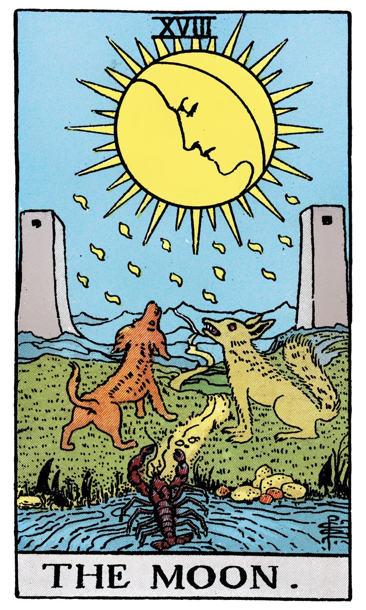
| 姿态 | 狼和狗都在朝天嚎叫——野性的恐惧和被驯化的恐惧同时存在。龙虾从水里爬出——潜意识里的东西正在浮出水面。 |
| 颜色 | 深蓝和灰黑主导——不确定、模糊。月亮的脸是黄色，但被光晕包围——不是太阳那种清晰的亮，是朦胧的、变形的亮。 |
| 数字 | 18 — 1+8=9，9是隐士的数字。隐士在山上提着灯笼找路，月亮是那条路被雾遮住了。18是"看不清的时候"。 |
月亮是塔罗中最让人不安的一张牌——不是因为有什么可怕的东西，而是因为你什么都看不清。星星的光是清晰的指引，月亮的光是变形的投影——它把影子拉长，让树看起来像怪物，让池塘看起来深不见底。月亮的恐惧不是"真的有危险"，而是"我不确定有没有危险"——这种不确定比确定更折磨人。
那只龙虾从水里爬出来——潜意识的东西正在浮出水面。你可能不知道为什么最近总是烦躁、为什么总是梦见同一个人、为什么对某件事莫名恐惧。月亮告诉你：不是你在胡思乱想，而是你内心深处的某些东西正在往上冒。狼和狗都在嚎叫——你的恐惧和你的"社会面具"都在躁动，因为它们都感受到了水下的动静。
当月亮出现在你的牌阵中，它不是在说"你要小心"，而是在说"你看到的不一定是真的，但你的不安是真的"。它在问：你在害怕什么——那个东西真的存在，还是只是月光下的影子？你有没有把过去的恐惧投射到了现在？有时候，你需要的不是看清整条路——只需要往前走一步，路就会自己显现。
月亮逆位时，那只龙虾已经爬出水面——但又被你按了回去。可能有两种走向：要么潜意识里的东西开始浮现——旧伤、未处理的恐惧、被压住的记忆在梦境和情绪里反复冒头，你却拼命压回去，结果越压越动荡，不安从背景噪音变成了日常的烦躁；要么幻觉正在消散但你不肯接受真相，宁愿继续待在熟悉的迷雾里，因为"看不清"反而比"看清了不喜欢"更安全。
逆位月亮在问你：你是在害怕看见，还是在害怕看见之后必须改变？狼和狗还在嚎——你的恐惧和你的"面具"都在躁动，因为水下的东西已经搅到水面了。压抑不是保护，是延迟。月光虽朦胧，但它仍在照——你不需要看清全部，只需要看清下一步。试着看一眼那个让你害怕的东西：很可能它没有你想象的那么大。龙虾爬出来不是来吓你，是来被你看见的。看见，就是它失去力量的开始。
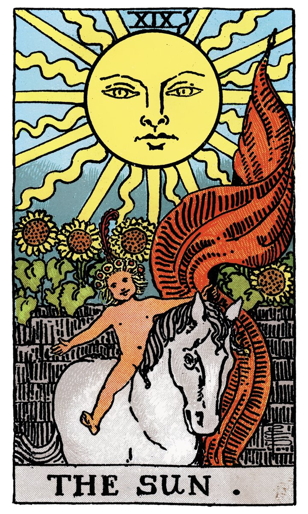
| 姿态 | 小孩张开双臂——毫无防备、全然敞开。骑在马上但不抓缰绳——他信任马，马也信任他。这是愚人的"出发"在经历了所有旅程之后的回归。 |
| 颜色 | 大面积金色（纯粹的觉知、喜悦）+ 白色（纯净）+ 红色（生命力）。向日葵永远朝向太阳——画面里的一切都向着光。 |
| 数字 | 19 — 1+9=10，10是命运之轮的数字。太阳是"命运的循环完成后的澄明"——不再被轮子带着转，你成了轮子中心的静点。 |
太阳是整副塔罗中最快乐的一张牌——而且这种快乐不是"终于成功了"的解脱，而是一个孩子骑马晒太阳那种没有理由的开心。月亮之后你终于看清了：那些影子只是影子，那些恐惧只是恐惧。太阳不问你"你配不配开心"——它只是照着你。向日葵的方向就是你的方向：往光的地方去。
那个小孩不是"变成了大人之后获得了成功"，而是经历了一切之后，重新变回了孩子。他手里的红旗是生命力的旗帜——不是军旗，是庆祝的旗。灰色石墙在背景里，意味着"界限还在，但你已经可以越过它们了"。白马没有缰绳——和战车不同，这次你不需要"驾驭"任何东西。你只需要在马上，被太阳晒着，往前走。
当太阳出现在你的牌阵中，它是一个明确的肯定：是的。你在对的路上。你不是在自欺欺人，你的开心不是假的。有时候我们经历了太多月亮的迷惑、高塔的崩塌、死神的结束——以至于当太阳真的出来的时候，反而不敢晒了。太阳告诉你：你可以开心。现在就可以。
太阳逆位时，那颗金色的日头被一片云遮了一下。可能有两种走向：要么你正经历一段暂时的阴霾——不是黑暗，只是光不够亮，喜悦近在眼前却怎么也接不住，那个本该开心的时刻被某种说不清的东西压着，内在小孩想笑却笑不出来；要么你走向了反面，把太阳的喜悦推成了过度乐观——用"一切都好"掩盖还没处理的事，用"我没事"堵住该面对的情绪，光太强反而刺眼，看不见阴影里还藏着什么。
逆位太阳在问你：你的开心，是真的开心，还是装出来的阳光？云不会一直挡着太阳——它只是经过。如果你正阴霾，别逼自己立刻灿烂，给孩子一点时间重新爬上马背。如果你正过度乐观，试着把那面红旗放下片刻，让阴影也有机会说话。太阳不靠你维持——它一直在那里。你不需要证明自己开心，也不需要假装。等云飘过去，光会重新落在你身上。
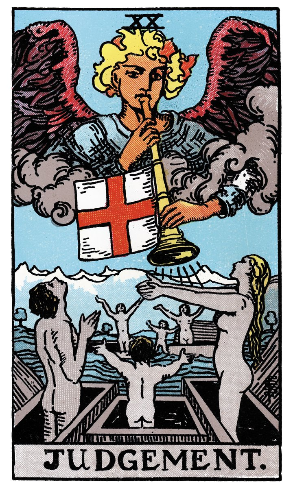
| 姿态 | 六个人从棺材中站起，张开双臂——不是"举手投降"，而是"接收"。天使的号角向下——召唤从高处来，但回应从地面起。 |
| 颜色 | 灰色的人体——还没有颜色，但正在被金色光芒激活。红十字旗——牺牲与救赎的合一。蓝色海洋——深层的、流动的潜意识正在回应召唤。 |
| 数字 | 20 — 2+0=2，2是女祭司的数字。审判是"女祭司的直觉变成了明确的召唤"——你不再安静地感知，你被大声叫醒了。 |
审判是塔罗旅程的倒数第二站——太阳让你开心，审判让你醒来。注意它和死神的不同：死神是"旧的东西结束了"，审判是"旧的东西结束了，现在你愿意重新活过来吗"。那些从棺材里站起来的人，他们的身体还是灰色的——醒来和活过来是两回事。号角在吹，但你要自己选择从棺材里爬出来。
天使加百列在基督教传统中是报喜的天使——他吹号不是宣布"你有罪"，而是宣布"时间到了"。红十字旗是圣乔治的旗帜——代表牺牲之后的胜利。海洋在背景中——你的潜意识已经被搅动了，那些你压抑的记忆、被忽略的天赋、被推迟的梦想，都在棺材里等着你的回应。
当审判出现在你的牌阵中，它在问：有什么声音你一直在忽略？有什么东西在叫你——一份新的工作、一种新的活法、一段需要说出口的真相？你有没有假装自己"还没准备好"，但其实号角已经吹了很久了？审判不是惩罚，是邀请。但邀请需要你站起来回应。
审判逆位时，号角还在吹——但你躺在棺材里不肯起来。可能有两种走向：要么你听见了那个召唤——一种新的活法、一段该说出口的真相、一份内心已经认了的方向——但你拼命装作没听见，用"还没准备好""再等等"自我推脱，让号角声越吹越远，错过本可以觉醒的时机；要么你反过来，把召唤当成了审判，把自己关在自我谴责里，反复清算"我哪里错了"，却迟迟不愿真正爬出来重新活。
逆位审判在问你：你是在等准备好，还是在等不用准备好的那一天？号角不是叫你去受审——是叫你去活。棺材盖已经掀开，但你不肯站起来的话，灰色就一直是你的颜色。召唤不会一直等，但好消息是：你随时可以回应。不必等"完全想清楚"，站起来本身就是回应。天使加百列吹的不是判罪书，是邀请函。下一次号角响起来的时候，试着张开双臂——不是投降，是接收。
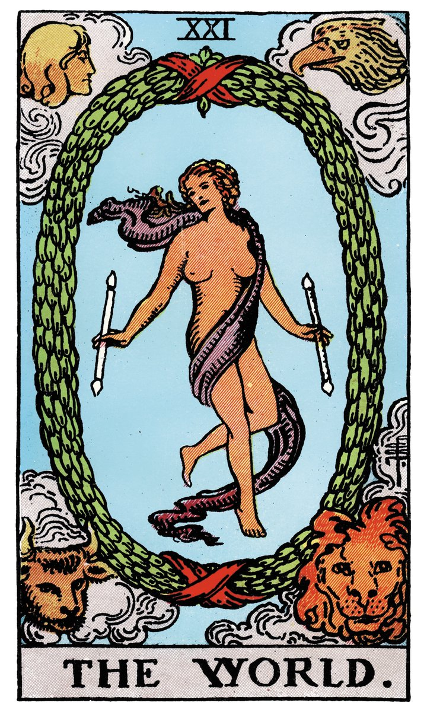
| 姿态 | 悬浮在花环中跳舞——不是在"到达"，而是在"成为"。她的动作是流动的，不僵硬。两条红丝带的∞符号——圆满不是终点，是无限循环的入口。 |
| 颜色 | 绿色花环（生长、完成、胜利）+ 深蓝背景（无限空间）+ 紫色丝带（灵性）。四活物的颜色各异——所有元素的统一。 |
| 数字 | 21 — 3×7。3是创造，7是内省与完成。21是"创造性的完成"——不是回到原点，而是到达了一个更高的起点。21之后，一切可以重新开始。 |
世界是大阿尔卡纳的最后一张——愚人从悬崖边出发，经历了22段旅程，走到了这里。但注意：世界不是一个"终点站"，而是一个旋转门。那个女性在花环中跳舞，不是在"停下来休息"，而是在流动中庆祝。月桂花环在古代是胜利者的冠冕——但她的胜利不是征服了别人，而是整合了自己。所有对立面（四活物、四元素、四个方向）都在她的周围守护着她，不再拉扯她。
她手中的两根权杖——和魔术师桌上的权杖是同一根，但现在是两根。一根是"我已经做到的"，一根是"我即将去做的"。红色丝带的∞符号在说：完成不是结束，是下一段旅程的许可证。愚人的0是空白的可能，世界的21是充实的可能——你不再是"什么都不知道所以出发"，而是"什么都经历了，所以可以重新出发"。
当世界出现在你的牌阵中，它是一个拥抱：你到了。不是到了终点，而是到了你可以停下来喘口气、回头看、为自己鼓掌的地方。然后——如果你愿意——你可以翻过这一页，回到愚人，重新开始。但这一次，你不是空手上路。你带着全部的自己。
世界逆位时，那个在花环中跳舞的女性停在了门口——差一步就圆满，却怎么也跨不过去。可能有两种走向：要么你已经走到一段旅程的尾声，却迟迟不肯收尾——项目最后一笔没动、关系最后一句没说、告别最后一面没见，用"再完善一下"无限拖延，让本该闭合的循环一直敞着口；要么你跨过了线却不愿翻篇，完成了的事还在心里反复回放，不愿把目光转向下一程，结果新旅程迟迟启动不了。
逆位世界在问你：你是不敢结束，还是不敢开始？花环在那里，∞丝带在那里，四活物都在守护——你只差那一步。完成不需要完美——很多事"足够好"就是真的好了。如果你正拖延收尾，试着允许自己交一个不那么完美的答卷，比起永远悬而未决，"已经结束"本身就是礼物。如果你正不愿翻篇，回头看一眼就好——别住进去。愚人正在下一个路口等你，这一次，你带着整个世界出发。
小阿尔卡纳 · MINOR ARCANA
56张日常情境牌 · 四元素 · 火 / 水 / 风 / 土
🧟 权杖 · 火
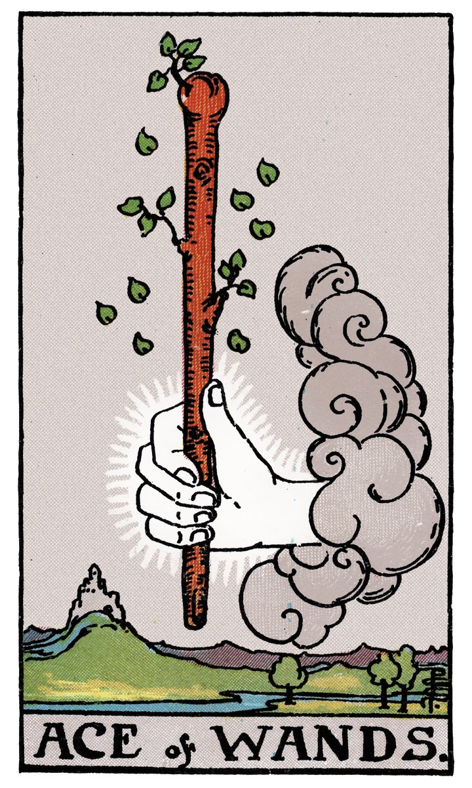
| 姿态 | 只有一只手，没有人——它从云中伸出，是"被赐予"而非"被制造"。手掌张开托住权杖，不是握紧——灵感是被接住的，不是被攥住的。 |
| 颜色 | 整体黄色调明亮干燥，像火焰的核心温度。绿叶是生命从火中冒出来的信号——火不只会烧毁，也会催生。 |
| 数字 | A — 不是1，是"1之前的种子"。王牌是元素本身在敲门，不是某件具体的事，是那股想去做某件事的原始冲动。 |
权杖王牌是整副权杖组的第一缕火星。它不是已经烧起来的火，而是火种——你忽然"想做一件事"的那个瞬间。可能是某个想法击中你，可能是看见某个人某件事心中一动，可能是某个一直压在心底的欲望终于冒头。这张牌不讲细节、不讲计划、不讲可行性——它只负责点燃。它问的不是"怎么做"，而是"想不想"。
注意那只手——它从云中伸出，不属于画面里的任何人。火元素的灵感不是被你"想出来"的，是从外部降临到你身上的。你能做的不是创造它，而是接住它。权杖上长出的绿叶是关键细节：火元素不只是破坏性的燃烧，更是生命力的迸发。一个真正的灵感会让你的生活开始生长——它会带出新的方向、新的关系、新的自己。
当权杖王牌出现，意味着有一束火苗正等着你。它可能是新的项目、新的关系、新的身份，也可能只是平淡生活里的一记心跳。它不会自动烧成大火——它需要你吹气、加柴、护住它不被风吹灭。但首先，你得承认它存在。很多人在灵感降临时第一反应是怀疑、是推迟、是等"更合适的时机"。王牌说：就是现在，接住它。
权杖王牌逆位时，那束火苗要么迟迟点不燃，要么刚冒头就被掐灭。你可能感受到了那股冲动，但立刻被自我怀疑、被"不切实际"、被"等下次吧"困住——火种在手里凉了。也可能走向另一种：你嘴上说着宏大的计划，但底下根本没有真正的火焰，只是空响的口号，找不到落地的那一束光。
逆位在问你：是什么在挡你的火？如果是外界的冷水，那需要你护住它——不是所有灵感都要立刻被人理解。如果是你自己浇的冷水，那需要诚实地问：你怕的是失败，还是怕真的开始？王牌逆位不是说你没有火——是说火被什么压住了。把它找出来，掀开。
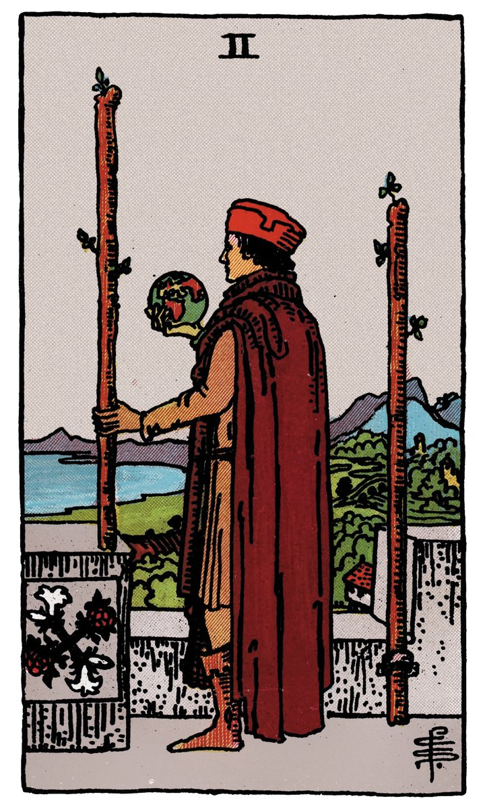
| 姿态 | 他握着地球仪却没有握自己的脚——视野已经抵达远方，身体还留在原地。这是权杖二的核心张力。 |
| 颜色 | 红色长袍是行动力的颜色，但他穿着它站在墙后——热情被困在城墙之内。远方海面是冷色调，是"未知的吸引力"。 |
| 数字 | 2 — 在1的火花之后，2是"看见另一种可能"。二元不是对立，是岔路。火元素遇见2，是从"想做"到"想清楚做什么"的过渡。 |
权杖二描绘的是一个关键的中间状态——你已经拥有了视野，但还没有迈出脚步。男人站在自己城堡的顶端，意味着他已经积累了一些东西：地位、安全、资源。城堡是他的根基。但他手里握着地球仪——他看到了更大的世界。这两根权杖被固定在城墙上，意味着他的能量目前还"钉"在原地，他在用眼睛和心去旅行，身体还在墙里。
火元素遇见2的能量，是"想做的"和"已经拥有的"之间的张力。王牌是单纯的火花，二却开始有了对比：现在的生活 vs 远方的可能；已知的安稳 vs 未知的冒险。男人没有立刻翻墙出去——他在掂量、在凝视、在让那个远方在心里发酵。这不是懦弱，这是必要的酝酿。但权杖组的能量本质是行动，所以这张牌不会让你永远停在这里。
当权杖二出现，它通常在说：你已经看到了另一种可能性，但你还没决定要不要去。它在问你那个远方对你意味着什么——是逃避眼前的工具，还是真正想去的地方？地球仪在你手里，但你不能只是把它转着玩。规划是必要的，但权杖二也提醒：规划久了会变成另一种拖延。地图不是地形，看够了就要走。
权杖二逆位时，那个站在城头远眺的男人缩回了城堡里。要么是看见了远方的可能却不敢承认自己想去，要么是反复规划直到机会自己溜走。地球仪从手里滑落——你不再看远方，只盯着脚下。也可能走向另一种：嘴上说着要征服世界，其实只是用宏大的设想逃避眼前该做的具体选择。
逆位在问你：你是在等更好的方案，还是在等勇气？方案可以无限优化，但权杖的能量需要落地。如果远方真的吸引你，那城墙不是真的牢笼——是你自己选择不翻。如果远方只是逃避眼前的不爽，那需要先回来面对脚下。权杖二逆位说：把地球仪放下，做选择，要么留下安心，要么出发别回头。
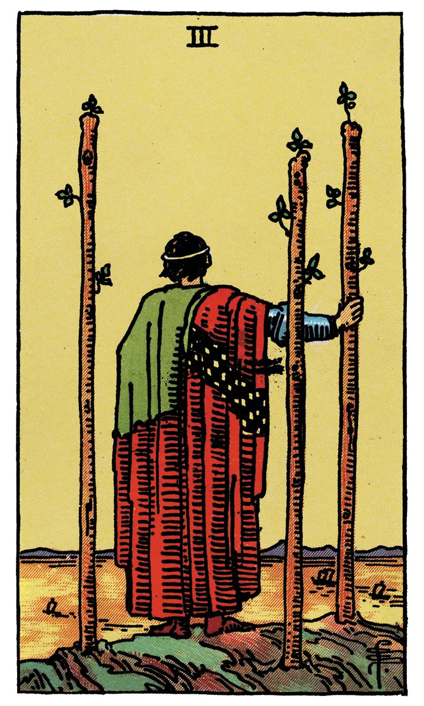
| 姿态 | 背对画面——他不再像权杖二那样回头看自己的城堡，他已经面朝远方。但脚还在岸上，船在海里。是"派出去了"的姿态。 |
| 颜色 | 金色海面和明黄天空是希望的颜色。红色长袍依然在，但不再喧闹——热情沉淀成了笃定的等待。 |
| 数字 | 3 — 从1的火花、2的权衡，到3的"第一次延伸"。3是第一个向外生长的数字，火元素在3这里开始抵达更远的地方。 |
权杖三和权杖二看起来很像——都是男人望向远方——但本质不同。权杖二的男人在考虑要不要去，权杖三的男人已经把船派出去了。他不再是规划者，他是布局者。那三根权杖立在岸边是他立的标记，海上的船是他派出的资源、做出的尝试、投放的能量。他已经做了能做的，现在在等风把船带回来。
3在火元素里是第一次真正的延伸——你的行动已经超出了你伸手能及的范围。1是火苗，2是看见远方，3是把第一束火箭射出去。这意味着你开始面对一种新的体验：你的努力不再立刻有反馈。船在海上看不见，但你必须相信它们在驶向某个港口。这种"已经做了，但还看不到结果"的状态，是权杖三的核心。
当这张牌出现，意味着你已经把某些事情启动了——可能是一段关系、一个项目、一次尝试——现在到了等待它在外部世界发酵的时间。它问你能不能等。火元素的人最容易在3这个位置失去耐心，想冲进海里把船拽回来。但权杖三说：让它走。你做完了你的部分，剩下的不属于你。如果船会回来，它会在该回来的时候回来。
权杖三逆位时，要么是你迟迟没把船派出去，宁可站在岸边想象远方也不愿真正投入；要么是船派出去了但迟迟不归——你的努力没能在外部世界得到回应。也可能是你失去了远望的耐心，频繁地改方向，每艘船都没走远就被你叫回来，最终什么都没抵达。
逆位在问你：你是在等船，还是在等借口？如果是船没回来，那需要诚实检查：你派出去的是真正的努力，还是只是表演性的动作？如果是你不敢派船，那需要承认——权杖三需要你信任远方，信任你的船能自己航行一段。短视不是务实，是另一种逃避。
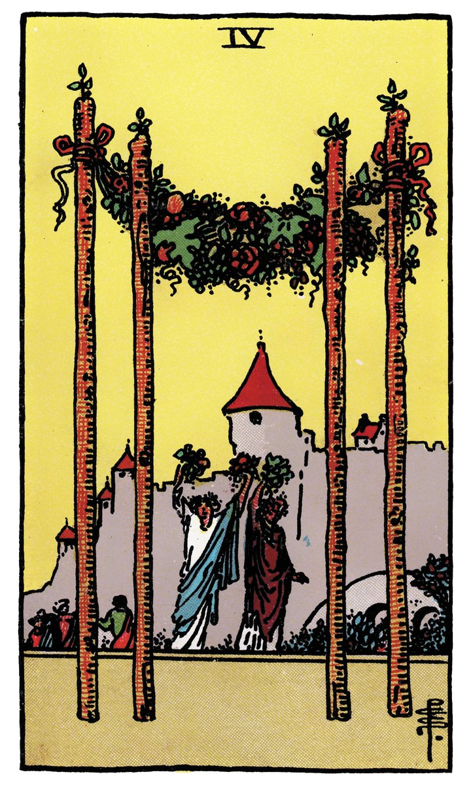
| 姿态 | 两个女子高举花束——不是工作中的姿态，是庆祝的姿态。她们不在做事，在欢庆已经做到的事。 |
| 颜色 | 明亮温暖的金黄色调，红色城堡是"家"的颜色。整张牌没有阴影——权杖组里少有的纯粹明亮。 |
| 数字 | 4 — 在塔罗里4是稳定的数字，四根柱子撑起一个空间。火元素遇见4，是行动后的稳固和归家。 |
权杖四是火元素组里最"软"的一张牌——它不是在燃烧，是在燃烧之后的篝火晚会。前面三张牌是火花、是规划、是派出船，到了第四张，终于到了可以歇一下的时刻。四根权杖搭成花架，这是一个临时的、但是稳固的结构——它不是永久的房子，它是阶段性的庇护所。你完成了一段路，搭起架子，庆祝一下，然后再走。
4在塔罗里是稳定的数字，火元素遇见4，是把火焰暂时收进炉子里。这并不意味着火灭了——意味着它从"野外燃烧"变成了"家中的炉火"。城堡在远方，意味着还有一个更大的归宿在等你，但此刻的花架已经够你停靠。两个女子举着花束，她们不是在接受别人的庆祝，是在主动庆祝自己——这很重要。权杖四提醒你：别忘了为自己已经做到的事情办一个仪式。
当权杖四出现，意味着你抵达了一个里程碑——可能是项目完成、关系确立、阶段目标达成、搬家安顿。它在问你愿不愿意停下来庆祝一下。很多火元素强的人只盯着下一个目标，把每一个达成都当成新的起点，从不停下来享受。权杖四说：这一次，先停下来。篝火不是浪费柴火，是为了让走过这段路的人——包括你自己——知道这件事真的发生了。
权杖四逆位时，那座花架没能搭起来，或者搭起来却没人来庆祝。可能你完成了一段事却没法真正享受——要么立刻被推着进入下一段，要么发现"家"的感觉迟迟没出现，阶段性的安定落了空。也可能是过渡期被无限拉长，你停在两个阶段之间，既回不去也前进不了。
逆位在问你：你为什么不能停下来？如果是外界不允许，那需要为自己争取一个仪式——哪怕是一个人的、安静的、几分钟的庆祝。如果是你自己停不下来，那需要诚实看：你是怕停下来就会失去动力，还是根本不相信自己值得被庆祝？权杖四逆位说：花架是可以自己搭的。不需要等别人来给你办。
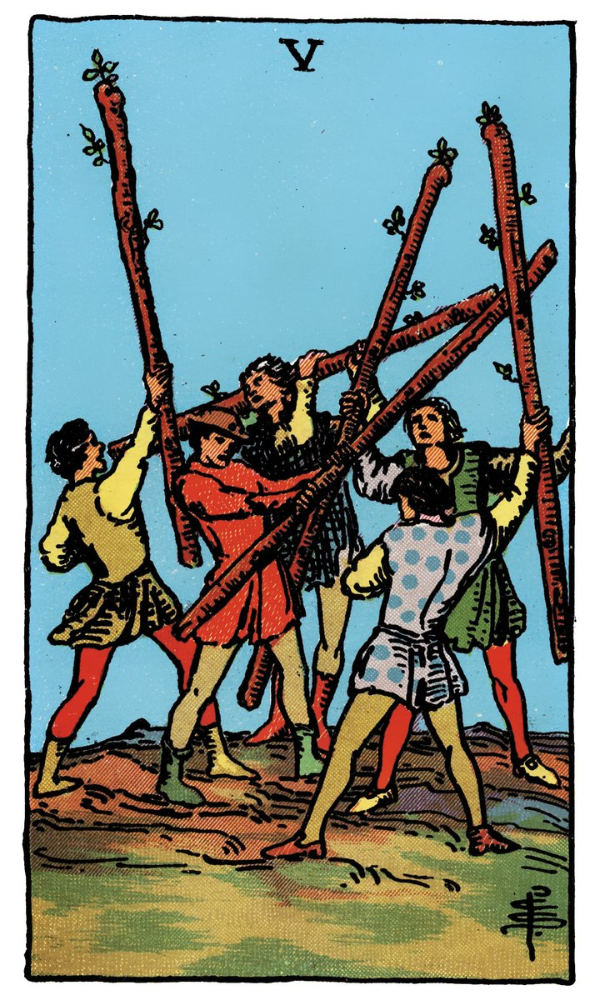
| 姿态 | 五个人都在动，但没有一个人倒下——这不是决斗，是摩擦。权杖交错的角度暗示这是"对撞"而非"对决"。 |
| 颜色 | 五个人的衣服颜色都不同——多样性是冲突的根源，也是冲突的价值。背景明亮——这不是黑暗的斗争，是公开的较量。 |
| 数字 | 5 — 在塔罗里5是挑战与变化的数字。火元素遇见5，是多个意志同时燃烧时的必然摩擦。 |
权杖五描绘的不是真正的战斗，是多个意志同时存在的混乱场面。五个人都拿着权杖——都有自己想做的事，都有自己的方向，都有一份火。当这么多火同时烧起来，必然会有交错、碰撞、互不相让。这不是坏事——这是火元素的本性。火不喜欢单调，火喜欢"较劲"。注意画面里没有人受伤，没有人倒下——这是建设性的冲突，不是毁灭性的战争。
5在塔罗里是挑战的数字，火元素遇见5，是"多"造成的必然摩擦。可能是团队里多个声音、关系里多个立场、自己内心多个欲望。每个人都觉得自己对，每个人都不愿让步。这种时候最容易的回应是息事宁人——压下冲突、装作和谐。但权杖五说：别那么快压下去。冲突本身有信息，它在告诉你哪里有真正不同的东西需要被听见。
当权杖五出现，意味着你正处在多方能量交锋的场合——可能是公开的争论、暗中的较劲、内心的撕裂。它问你能不能让冲突开口说话。火元素的人倾向于"打一架解决"，但权杖五的真正解法不是分出胜负，是听清每个人手里的权杖在指向哪里。混乱本身不可怕，可怕的是为了消除混乱而扼杀差异。让这场碰撞走完——它会自己沉淀出新的秩序。
权杖五逆位时，冲突从公开转入地下。表面上的权杖收起来了，但每个人心里那根还在竖着——变成冷处理、暗斗、背后较劲。也可能是走向另一个极端：冲突真的升级了，从较劲变成了伤害，从建设性的摩擦变成了单纯的内耗，没有人再听任何人说话。
逆位在问你：你压下去的冲突，去哪了？火元素压不住——它会从别的地方冒出来。如果是表面和谐但底下暗流，那需要把权杖重新举出来——公开的较劲比暗地里的暗斗健康得多。如果是冲突已经失控，那需要先各自退一步降温，但不是回避，是为了让耳朵重新打开。权杖五逆位说：装作没有冲突，比冲突本身更危险。
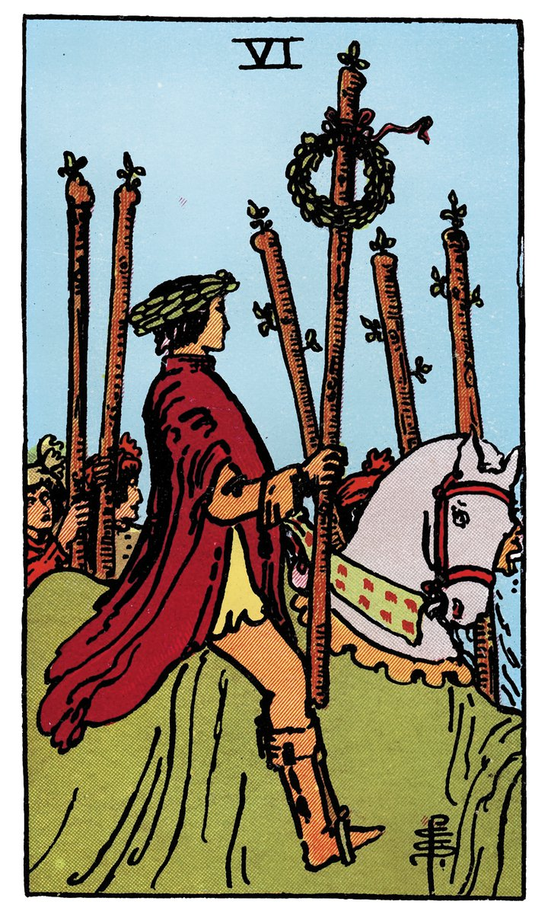
| 姿态 | 骑马者直视前方，不回头看跟随者——他知道自己赢了，但姿态是前进而非炫耀。桂冠不是他戴上的，是被戴上的。 |
| 颜色 | 白马象征纯净的胜利，红色鞍布是火元素的行动。整张牌明亮——这是公开的认可，不是私下的得意。 |
| 数字 | 6 — 在塔罗里6是和谐与认可的数字。火元素遇见6，是行动之后被外界承认的那一刻。 |
权杖六是整副权杖组里最纯粹的一张"赢"的牌。前面五张是火花、规划、派出、庆祝、冲突，到了第六张，终于有了公开的胜利。骑马者头上的桂冠是别人戴上的——这意味着这是被外界承认的胜利，不是自封的。他身后的随行人群手里也都举着权杖，但他们步行的姿态和骑马者挺拔的姿态形成对比——这一刻，他是被推到前面的人。
6在塔罗里是和谐的数字，火元素遇见6，是你的火被群体认可并融入集体之光。这不是一个人的胜利——整个队伍都在动，只是这一刻焦点在他身上。这种被看见的体验对火元素的人特别重要：火需要被注视才会烧得更旺。但权杖六的微妙之处在于，骑马者并没有回头看跟随者——他没有沉醉在掌声里，他的眼睛还在前方。
当权杖六出现，意味着你正被认可、被推上舞台、被宣告为这一轮的胜出者。它问你能不能稳稳地接住这份认可。火元素的人有两个常见陷阱：要么过度谦虚想把桂冠摘下来让给别人，要么被掌声冲昏头忘了桂冠是别人戴的。权杖六说：大方地戴上它，但眼睛看前方。这一场赢了，但路还长。让胜利成为燃料，不是终点。
权杖六逆位时，那顶桂冠可能戴不稳了。要么是公开的失败——本应被认可的成就被忽视或质疑；要么是表面赢了，背后却是另一回事——跟随者其实在窃窃私语，掌声里掺着冷嘲。也可能是你赢得了位置，但赢的方式让你自己都不心安，胜之不武的阴影压在桂冠上。
逆位在问你：你的胜利经得起推敲吗？如果是外界没给你应得的认可，那需要为自己争取一次真正的被看见——别让别人的沉默定义你的价值。如果是赢的方式有问题，那需要诚实面对：权杖六的桂冠不是自己戴的，逆位时你可能会想自己偷偷戴上去——但这种桂冠戴不久。真正的胜利不害怕光，先让自己配得上，再让别人承认。
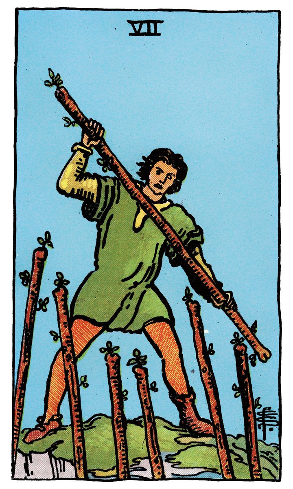
| 姿态 | 他在高处，但姿势是防御而非进攻——权杖斜挡在身前。一打六的劣势中，他的优势是位置和决心。 |
| 颜色 | 黄、蓝、绿、橙的对比色让画面显得焦灼——这是冲突的色调。下方权杖们色调统一，意味着来犯的是同一种压力。 |
| 数字 | 7 — 在塔罗里7是"考验"的数字。火元素遇见7，是信念被挑战、领地被入侵的时刻。 |
权杖七是整副权杖组里最"累"的一张牌。前面六张是火花、规划、派出、庆祝、冲突、胜利，到了第七张，突然你站到了一个必须死守的位置。下方六根权杖的对手没有露脸——这很重要。它们代表的不是某个具体的敌人，而是来自各方的压力：质疑、压力、反对、诱惑、需要拒绝的请求、想把你拉下位置的力量。
7在塔罗里是考验的数字，火元素遇见7，是"你的火能不能在风里继续烧"。注意画面里的关键细节——他站在高处，下方是来犯者。这意味着他已经占据了某个位置：可能是你提出的观点、做出的选择、抵达的位置、坚持的立场。现在考验来了——别人要你下来，要你改主意，要你放弃。他的姿势是防御，不是进攻——这一刻的任务不是冲下去打赢，是不下来。
当权杖七出现，意味着你正被多方挑战，需要为自己已经占据的位置而战。它问你这个位置值不值得守。火元素的人有时候会因为冲动站到不该站的位置，然后被权杖七教训。但如果你确实站在对的地方，这张牌就是给你的鼓励：地利在你这边，挺住就行。不需要反击每一个来犯者，不需要说服每一个反对者——你的脚不要挪。这一仗不是赢，是不输。
权杖七逆位时，那个站在高处的人挺不住了。可能是真的被攻下——立场被动摇、位置被取代、信念被打垮；也可能是他自己先放弃了——压力太大，妥协比坚持容易，于是从悬崖上下来了。还有一种情况：他试图同时应对所有来犯者，结果精力分散，反而守不住任何一处。
逆位在问你：你是在该守的地方退了，还是在不该守的地方死撑？如果是因为太累而放弃，那需要承认——权杖七本就是累的牌，但累不是放弃的理由，需要找到补给再上。如果是该放下的位置还在死撑，那需要诚实：你守的是真正的立场，还是面子？权杖七逆位不全是坏事——有时候从该下来的位置下来，反而是另一种胜利。
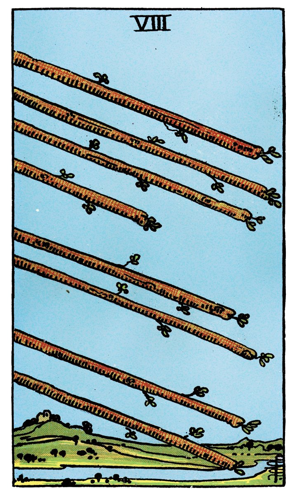
| 姿态 | 八根权杖全是飞行状态，没有人握——这是被释放出去的能量，不受任何个体意志控制。 |
| 颜色 | 蓝天、绿野、清亮河水的颜色——画面明亮开阔。这是清朗的速度，不是混乱的奔忙。 |
| 数字 | 8 — 在塔罗里8是循环与加速的数字。火元素遇见8，是从静止到全速前进的瞬间转换。 |
权杖八是整副塔罗里最纯粹的一张"动起来"的牌。前面七张牌都有人，到了第八张突然没有人——因为这一刻能量已经大到不需要人推动了。八根权杖同时飞起，朝同一个方向，这意味着多个事情在同一时刻开始流动。可能是积累很久的事情突然一起发生，可能是消息、机会、变化同时到来。画面里没有任何阻力——这是被风托着的飞行。
8在塔罗里是加速的数字，火元素遇见8，是"火势忽然蔓延开来"的那一瞬。火元素最大的特点就是会自我放大——一点火星落到合适的柴堆上，瞬间就成大火。权杖八描绘的就是这个临界点之后的状态：你已经做了所有该做的准备，现在风来了，火自己烧起来。这一刻既让人兴奋也让人紧张——因为事情的节奏已经不完全在你手里了。
当权杖八出现，意味着停滞的状态即将被打破，事情会忽然加速。它问你能不能跟得上。火元素强的人通常喜欢自己推动节奏，但权杖八的能量不是被推动的——是被承载的。你的任务不是加速，是顺势。注意画面里所有权杖都朝同一方向——这意味着此刻不应该再有内部分歧，所有力量都应该朝同一处使。这一刻是宝贵的，别浪费在犹豫上。
权杖八逆位时，那股飞行的势头被什么东西打断了。要么是延迟——本该流动的事情卡住了，消息迟迟不到，机会一再推迟；要么是方向不一致——八根权杖不再朝同一方向飞，开始互相碰撞、互相抵消，能量在内耗中耗散。也可能是刹车的瞬间——你忽然怀疑、忽然收手，把本来要射出去的箭硬生生拽了回来。
逆位在问你：是什么在挡这阵风？如果是外部的延迟，那需要耐心——风会再起。如果是方向不一，那需要重新校准——八根权杖飞往八个方向，什么都到不了。如果是你自己踩了刹车，那需要诚实问：你在怕什么？权杖八逆位不是要你硬冲，是要你看清——延迟有时候是保护，但有时候只是另一种逃避。
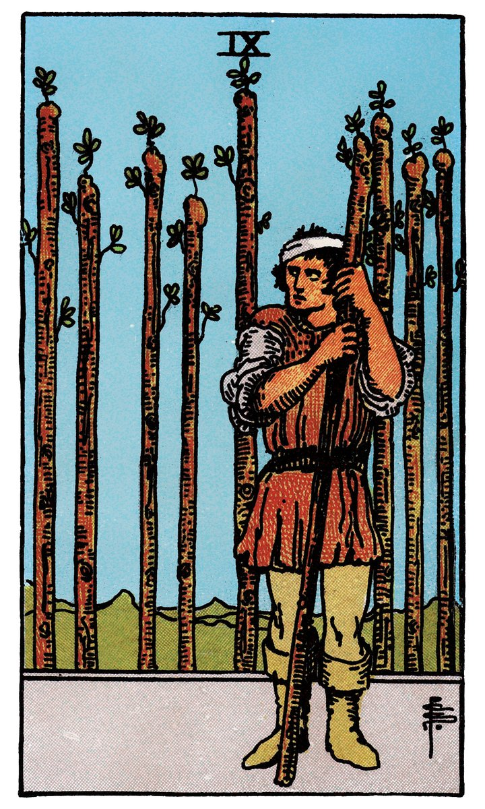
| 姿态 | 他靠在权杖上——不是站着，是倚着。这说明累了，但还没坐下。身后八根权杖是他过去积累的防御，眼前这一根是当下的支撑。 |
| 颜色 | 大片黄色干燥而紧张，头上的绷带是醒目的提醒——伤是真的。整张牌没有明亮的天空，只有戒备的黄沙色。 |
| 数字 | 9 — 在塔罗里9是"快要结束"的数字。火元素遇见9，是最后一段坚持，胜利在望但不能松懈。 |
权杖九是整副权杖组里最有"伤"的一张牌。前面八张牌一路走来：火花、规划、派出、庆祝、冲突、胜利、防御、加速——到了第九张，画面里的人头上缠着绷带。这不是新伤，是累积下来的旧伤。他靠在一根权杖上——这根权杖既是他的支撑，也是他的武器。身后的八根权杖是他过去立起来的所有防线，意味着他已经守了很久，而且还在守。
9在塔罗里是接近尾声的数字，火元素遇见9，是"最后一段最难走"的那种坚持。火元素的人最大的挑战不是开始，是收尾——开始的时候火烧得旺，到了接近尾声时火势减弱，最容易松懈。但权杖九的人不能松懈，因为他知道还有最后一波考验要来。他的眼神是警觉的，绷带说明他被打过，但他还站着——这是这张牌的核心信息：受过伤，但没倒下。
当权杖九出现，意味着你已经走了很远，现在到了最后一段。它问你能不能再多撑一会儿。火元素的人在这一刻最容易有两种反应：要么因为太累而提前宣布结束，要么因为焦虑而过度防御把所有人都当敌人。权杖九说：警惕是对的，但不要让警惕变成封闭。你身后的八根权杖已经够多了——再立新的就过度了。靠好你手里这一根，喘口气，最后一波过去，就是终点。
权杖九逆位时，那个靠着权杖的人要么真的倒下了，要么把防御推到了不健康的极端。可能是身体或心理的力竭——你撑了太久，最后一段没撑住；也可能是过度防御——把所有外界接触都当成威胁，用八根权杖把自己围成牢笼，连来帮忙的人都被挡在外面。
逆位在问你：你的警惕还在保护你，还是已经在困住你？如果是力竭，那需要承认——绷带不是装饰，伤是真的，需要时间恢复才能再战。如果是过度防御，那需要把身后的权杖拔起几根——不是所有人都是来犯者。权杖九逆位说：坚持和顽固只差一线，伤过的人最容易跨过那条线。
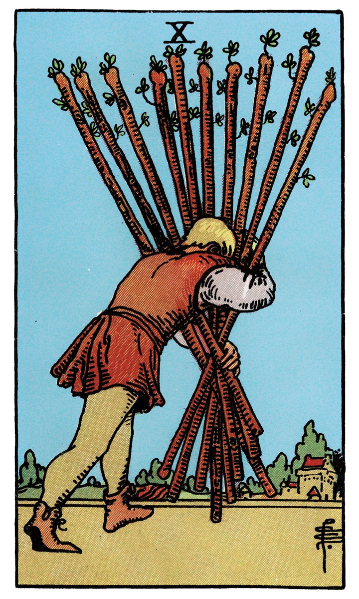
| 姿态 | 弯腰、低头、看不见前方——他不是在前进，是在硬撑。十根权杖的重量压在他身上，但他没放下。 |
| 颜色 | 黄色调变得沉郁，像一天结束前的光线。远处的房子是目的地的颜色——温暖但还隔着一段路。 |
| 数字 | 10 — 一个循环的完成。火元素遇见10，是"全部都揽下"造成的最终重负，也是这一轮的收尾。 |
权杖十是权杖组数字牌的终点。1的火花一路烧到10，到了这里变成了一捆压在肩上的重负。注意画面——男人不是在追逐什么，是在搬运自己积累的所有东西。十根权杖是他一路上捡起来的：每一个项目、每一段关系、每一份责任、每一次"我可以再扛一个"。火元素的人最大的盲点就在这里——开始的热情让人来者不拒，到了最后才发现自己背不动了。
10在塔罗里是循环的完成，火元素遇见10，是"这一轮的火已经烧到末端"的状态。但和权杖四那种可以庆祝的完成不同，权杖十的完成是疲惫的——你扛着所有东西抵达终点，但代价是看不见沿途风景，也看不见前方的家。男人低着头，只能看见脚下——这是过劳者的典型视角。他还知道方向，因为房子就在前方，但他已经无力抬头确认了。
当权杖十出现，意味着你正在承担超出负荷的重量。它问你这十根权杖都是必须的吗。火元素的人最难学的功课就是放下——总觉得再扛一下就到了，总觉得别人做不到自己做得好，总觉得自己是唯一能扛的人。但权杖十说：你快到了，但如果不卸下一些，可能到不了。看清楚——哪些权杖是这一程必需的，哪些是路上贪心捡起来的。卸下一些不是失败，是让自己真的能到家。
权杖十逆位时，那个弯腰的人要么终于放下了负担，要么被负担压垮。放下的情况是积极的——你承认了扛不动，开始卸下、委派、拒绝新的请求，让自己能轻松前行。压垮的情况是消极的——你硬撑到极限，最后身体或心理先于意志崩溃，所有权杖一起砸下来。
逆位在问你：你是主动放下，还是被动崩塌？主动放下需要勇气——承认自己不是无所不能，承认有些事情可以不扛。被动崩塌则是火元素常见的悲剧——一直说"我能行"直到不能行为止。权杖十逆位的解药很简单：把那一捆权杖解开，一根一根看，哪些是必须的，哪些可以放下，哪些可以交给别人。重负不会自己变轻，但你可以选择少扛一些。
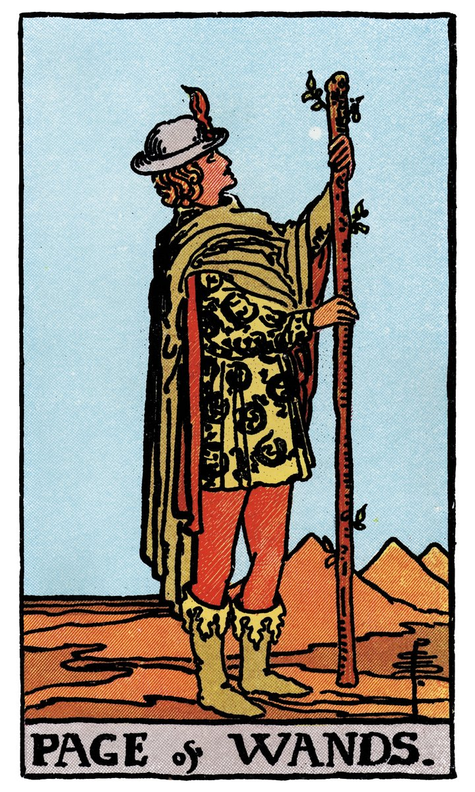
| 姿态 | 双手举着权杖但不是在挥舞，是在端详——他对这根权杖还在熟悉阶段。仰头的角度说明他还在"看"，没开始"用"。 |
| 颜色 | 黄色长袍和红色帽子是纯粹的火元素配色，火蜥蜴披风暗示他与火元素的传承有关。沙漠是火元素的地貌。 |
| 位阶 | 侍从 — 宫廷牌里的"学生"位阶。火元素的侍从是火元素的初学者——刚接触到热情、行动、创造力这股能量的人。 |
权杖侍从是火元素宫廷牌里的最年轻的一位。他不是火元素的大师，是火元素的学生。他手里有这根权杖，但他还在端详——这股"想做点什么"的热情对他来说是新的，他还在学习怎么使用。火蜥蜴披风是火元素的标志，意味着这股能量属于他，但他还需要时间才能熟练驾驭。他站在沙漠里，沙漠是火元素的原乡——他在对的地方，只是还不熟练。
侍从在宫廷牌里代表一种心态而非一个年龄。权杖侍从的能量可能出现在任何人身上——刚接触新事物时的那份好奇，第一次想做某件事时的那份跃跃欲试，刚被某个灵感点燃时的那份新鲜感。这种心态的珍贵之处在于没有偏见——他还不知道什么是"不可能"，什么是"不该做"，什么是"不专业"。他只有纯粹的兴趣。
当权杖侍从出现，意味着你正进入一个新的火元素领域——可能是新的兴趣、新的项目、新的人际圈、新的身份。它问你愿不愿意当一会儿学生。火元素的人有时候会因为自尊心强而不愿意"从头学"，但侍从说：这一程你得放下身段。你不需要立刻成为骑士，更不需要立刻成为国王——你只需要带着好奇心，把那根权杖举起来看一看。新热情很脆弱，需要这份学徒式的耐心来培养。
权杖侍从逆位时，那份年轻人的热情失去了根基。可能是三分钟热度——新的兴趣点燃得快，熄灭得也快，每件事都开始得很热闹却没一件坚持下来。也可能是浮躁——只想体验"开始"的快感，不愿意进入"学习"的枯燥阶段，结果在所有领域都浅尝辄止，没有真正的本事。还可能是消息层面——期待中的新机会、新消息迟迟不到，或到了却不是想象的那样。
逆位在问你：你的热情能不能熬过无聊？侍从的本分是学习，学习的本质是重复。如果你每次都因为新鲜感消退就逃跑，那永远只能停在"初学者"的位置，永远举着权杖却从未真正使用它。权杖侍从逆位说：把一件事做到无聊，再做到有趣，才是真的入门。
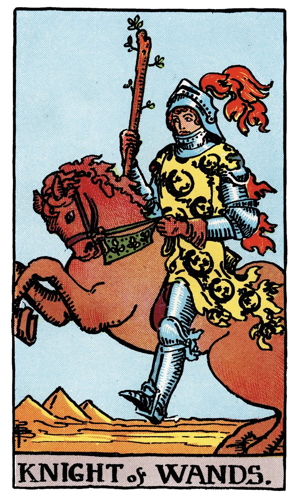
| 姿态 | 马是跃起的——这意味着他不是在巡航，是在冲刺。整个人物都在向前倾，没有一丝犹豫的姿势。 |
| 颜色 | 大面积的黄色和红色——纯粹的火元素能量。火蜥蜴图案再次出现，但比侍从身上更多更密——能量更成熟。 |
| 位阶 | 骑士 — 宫廷牌里的"行动者"位阶。火元素的骑士是火元素最纯粹的化身——行动、冒险、冲刺、燃烧。 |
权杖骑士是整副塔罗里速度最快、最有冲劲的人物。侍从还在端详权杖，骑士已经举着权杖冲出去了。他的马是腾空跃起的状态——这意味着他不是已经跑了一段路，而是正在起步的那一刹那。火元素在骑士位阶达到最纯粹的状态：不犹豫、不权衡、不回头。他不是想好了才行动，他是在行动中想清楚。
骑士在宫廷牌里代表行动中的能量，权杖骑士就是"火"本身在奔跑。这种人物的魅力在于那种"完全在场"的燃烧感——他做什么都全情投入，他爱什么都爱得彻底，他去哪里都像要燃烧整片天空。但同样的能量也是他的弱点——火势太猛容易烧得快也灭得快，他可能忽然对一件事失去兴趣就转头走了，留下一堆未完成的事情。
当权杖骑士出现，意味着你正进入一段需要冲刺、需要果决、需要全情投入的时期。它问你敢不敢真的冲一次。火元素的人在这一刻最大的障碍不是没热情，是过多的考虑——"但是"、"万一"、"等一下"。骑士说：这些"但是"可以等，机会不能等。但同时也提醒：骑士的能量是爆发式的，不是持久的——冲出去之后需要尽快找到节奏，从冲刺切换到稳定的奔跑。否则你会成为又一个烧得猛但烧不久的人。
权杖骑士逆位时，那匹跃起的马冲错了方向，或者冲到一半就停了。可能是鲁莽——没有方向只有冲劲，结果一头撞墙，留下烂摊子；也可能是三心二意——开始的时候声势浩大，半路被新的兴趣吸引，把原来的事情扔在一边。还可能是骑士的冲劲消失了——本该果决的时候犹豫不决，让"火"变成了"烟"，轰轰烈烈地冒一阵就什么都没了。
逆位在问你：你的冲刺有方向吗？骑士的危险就在于把"动起来"本身当成目的。火元素逆位最常见的就是把冲动当勇气、把冒进当果断。但真正的骑士不是乱冲，是认准了再冲。如果你已经冲错了，那需要诚实承认并停下来重新选方向——继续冲只会更糟。如果你只是失去冲劲了，那需要找回最初点燃你的那束火——它还在，只是被杂念盖住了。
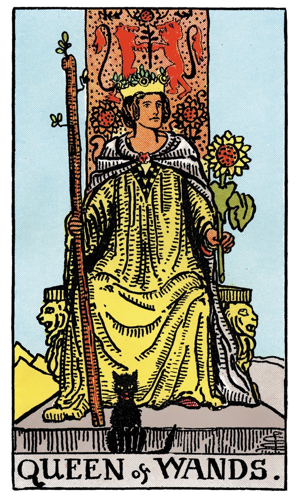
| 姿态 | 她端坐直面观看者——这是整副塔罗里少有的"她在看你"的姿态。权杖在手里不是挥舞，是握着——力量已经掌握，不需要展示。 |
| 颜色 | 金色阳光和王袍是成熟的火元素色彩——不再是少年侍从的浅黄，是经过淬炼的金。黑猫是阴影中的火，向日葵是迎向光的火。 |
| 位阶 | 王后 — 宫廷牌里的"掌握者"位阶。火元素的王后已经把火驯服成自己的一部分，她不需要冲，她只需要在那里。 |
权杖王后是整副塔罗里最具人格魅力的人物之一。她和骑士不同——骑士的火在外冲，王后的火在内烧。她端坐不动，但你能感受到她身上那股不依赖外界认可的光。她直视观看者，这种"我在看你"的姿态在塔罗里很少见——她不需要被看见，因为她自己就是光源。手里的向日葵永远朝着太阳，象征她始终面向自己内在的光源。
王后在宫廷牌里代表内化的能量。骑士的火是外显的行动，王后的火是内在的状态。她已经过了需要冲、需要证明、需要被推上舞台的阶段——她的存在本身就是舞台。脚边的黑猫是关键细节——它代表王后身上的另一面：火元素不只是明亮和热情，还有阴影中的直觉、神秘、不可驯服的野性。完整的火元素王后不是只会发光，她也懂得在暗处看东西。
当权杖王后出现，意味着你需要召唤自己内在的那份笃定和光芒。它问你能不能不依赖外界的掌声就发光。火元素的人最大的挑战是从骑士阶段进化到王后阶段——从"靠行动获得认可"到"靠存在本身就有光"。王后说：你不需要做更多事来证明自己，你只需要把那份笃定坐稳。当你真的相信自己配得上王座，整个世界会自动调整来匹配你的频率。这份魅力不是表演出来的，是修炼出来的。
权杖王后逆位时，那份自信失衡了。要么走向自负——把自己当成世界的中心，要求所有人围着她转，光芒变成了灼人的强光；要么走向反面——看似自信实则依赖外界认可，没了掌声就暗淡下来，所谓的主权是表演给外人看的。也可能是压抑了黑猫代表的阴影面——只承认自己明亮的部分，把嫉妒、愤怒、野性都压进阴影里，结果这些阴影反噬。
逆位在问你：你的光是自生的，还是借来的？真正的王后不害怕黑暗——她和黑猫共处。如果你只能接受自己"发光"的部分，那这份光迟早会变成负担。权杖王后逆位说：把阴影请回脚边，承认你也嫉妒、也愤怒、也想要被看见。完整的火才是真火，单薄的光只是装饰。
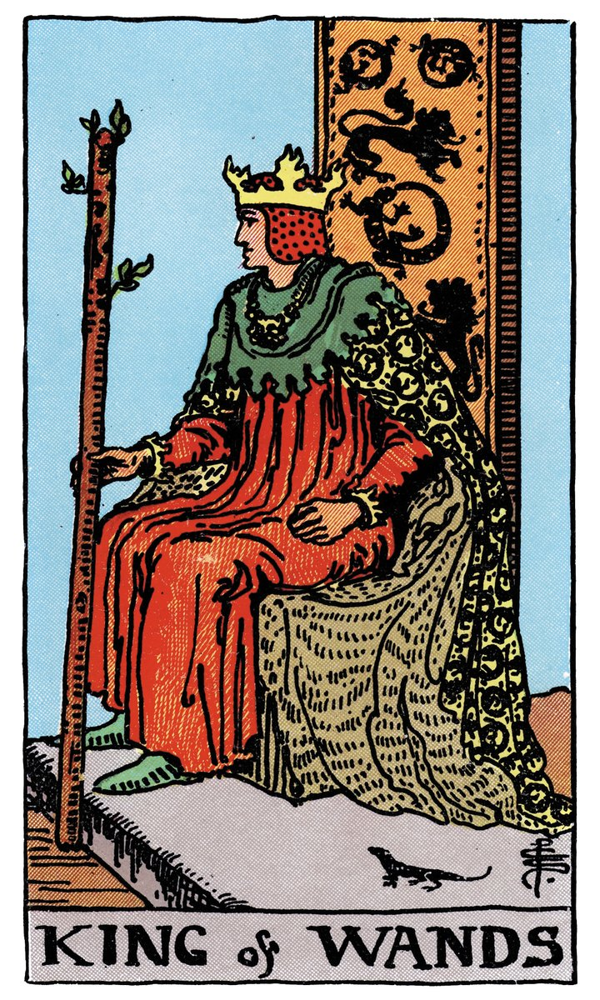
| 姿态 | 他端坐不动但身体微微前倾——不是休息的姿态，是准备行动的姿态。他可以随时起身，但他选择坐着。 |
| 颜色 | 大面积的红色和金色——这是火元素最成熟、最权威的色彩组合。火蜥蜴无处不在，意味着这是火元素的本源之地。 |
| 位阶 | 国王 — 宫廷牌里的"统帅"位阶。火元素的国王是火元素的最高形态——既能在内燃烧，也能统御外界的火。 |
权杖国王是火元素宫廷牌的最高形态。侍从是学生，骑士是行动者，王后是内化的光，国王是统御者。他的火不再需要外显地燃烧——他已经把火变成了一个可以居住的结构。他坐在王座上，但他的王座不是装饰，是火元素的指挥塔。身后的狮头象征勇气与王权，火蜥蜴图案遍布全身——这意味着火元素已经完全融入他的人格，他不再"使用"火，他就是火。
国王在宫廷牌里代表成熟的统御力。权杖国王的成熟在于：他能容纳别人的火。骑士只能燃烧自己，王后只能稳住自己，国王能调动一群火元素的人朝同一方向烧。这是他最独特的能力——把多个意志统一成一股力量。注意他握着权杖的手——那根权杖在发芽，意味着即便到了国王这个位阶，他依然保持着"新事物可以生长"的状态。成熟不等于僵化，这是权杖国王的微妙之处。
当权杖国王出现，意味着你需要召唤自己内在的统御者——可能是承担一个领导角色，可能是为一个混乱的局面带来秩序，可能是为自己的生命真正掌舵。它问你愿不愿意坐上那把椅子。火元素的人有时候害怕"国王"的位置——觉得一旦坐稳就失去了骑士的潇洒。但权杖国王说：真正的自由不是到处冲，是有一个值得守护的王国。你不需要做一个独裁的国王，但你需要成为一个能让火有方向烧的人——包括你自己的火，也包括你周围人的火。
权杖国王逆位时，那把王座变成了不是中心而是牢笼。要么走向专横——把统御变成压制，把领导变成独裁，不允许任何别人的火燃起来，最后身边只剩服从者没有同伴；要么走向虚张声势——表面上威严，内里空虚，靠表演国王的姿态维持权威，但失去了真正的统御力。也可能是僵化——曾经成熟的火变成了固化的规则，不再发芽，不再生长，王座成了化石。
逆位在问你：你的王座是建立在力量上，还是建立在恐惧上？真正的权杖国王不需要压制任何人——他的权威来自能让所有人变得更强大。如果你必须靠压制别人来维持位置，那你已经不是国王，是暴君。如果你必须靠表演来维持威严，那你已经失去了王座的本质。权杖国王逆位说：真正的统御是让自己和周围的人都能烧得更亮，不是只有自己一个人发光。
🎤 圣杯 · 水
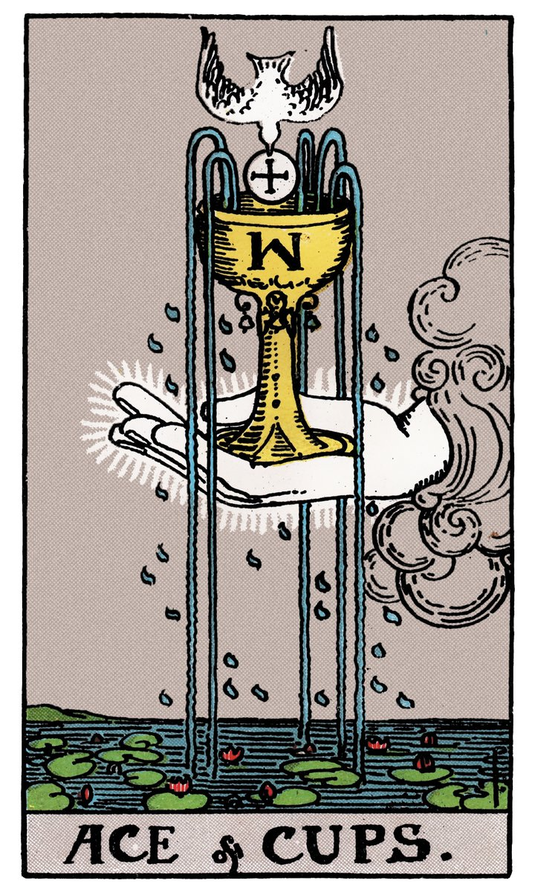
| 姿态 | 杯子不是被人拿在手里——它是被送来的。你不需要伸手去够，只需要张开手去接。 |
| 颜色 | 大面积的水蓝与温柔的浅色——情感的原色。云朵与鸽子的白是纯净的源头。 |
| 数字 | Ace（1）— 水元素的起源。一切情感、关系、直觉的种子状态，尚未被定义、尚未被命名。 |
王牌是每一组小阿尔卡纳的源头。圣杯王牌不是"一杯水"，而是水第一次开始流动的那一刻——情感、直觉、爱意从某个看不见的高处涌入你的生命。它不一定有具体的对象：你可能说不清自己为什么突然柔软了、为什么对那个陌生人有了留意、为什么听到一段旋律就眼眶发热。王牌不解释，它只降临。
注意那只鸽子衔着的圣餐饼——这是灵性与情感交汇的暗示。圣杯王牌的爱，不只是浪漫关系里的爱，更是那种"被某种更大的东西触动"的感觉。它可能是一段新感情的开始，可能是对一件事突然有了热情，也可能是久违地与自己内心的某个部分重新连上。五道水流象征五感被同时打开——你整个人都在接收。
当这张牌出现，它在问：你愿意让这杯水进到你里面吗？王牌是赠予，但赠予需要承接。很多人在感情或灵感降临时第一反应是怀疑、是封闭、是"我不配"。圣杯王牌说——杯已经递过来了，水已经溢出来了，现在唯一的问题是你的手是合着的，还是张开的。
圣杯王牌逆位时，那只杯子还是降下来了，水还是溢出来了——但你没接住。可能是你早已习惯了封闭感受，看到柔软的东西第一反应是收回去；也可能是你正处在一段情感枯竭的时期，水到了却流不进，心里像隔了一层硬壳。
逆位不是说你不会被打动——它说你正在拒绝被打动。可能是上一次受伤让你不敢再打开，可能是你太早就学会了"情绪是不必要的"。这张牌在轻声提醒：那杯水仍在云端等着，鸽子仍在飞——你要不要松开一点，让一点点进来？
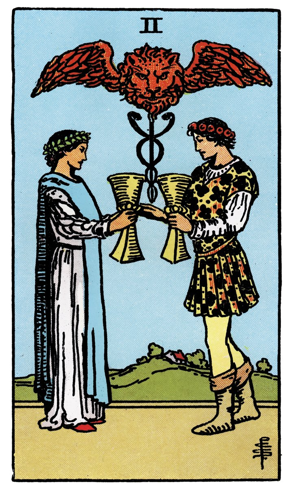
| 姿态 | 两人身体微微前倾，杯子靠近但未碰——这是"将要"的瞬间，比"已经"更有张力。 |
| 颜色 | 柔和的暖色调——不是激情的红，是相互了解后的温度。两人衣色不同，却协调。 |
| 数字 | 2 — 镜像与回应。圣杯二的"2"是两颗心第一次认出彼此，是水遇见水。 |
圣杯二是两颗心第一次相互回应的瞬间。它不一定是爱情——可能是友情、合作、和解，甚至是与某个久违的自己重新握手。但它的核心是：你给出什么，对方也给出了什么；你向前一步，对方也向前一步。双方都在场，这是圣杯二最珍贵的部分。
注意两杯之间那根带翅膀的双蛇杖——这是赫尔墨斯的杖，象征沟通、交汇、能量流通。圣杯二的关系不是消耗式的，是滋养式的：两个人都没丢掉自己，反而在彼此眼中看得更清。狮子头暗示这份关系里有真实的勇气——不是讨好，不是迁就，是各自完整的人选择站在一起。
当这张牌出现，它通常在指认一段重要的"我看见你，你也看见我"的关系。它可能在说你正遇见这样一个人，也可能在提醒你：某段关系正在从单方面付出走向真正的双向。它问：在你最重要的关系里，两个杯子是否真的在碰？还是只有一只在递，另一只在收？
圣杯二逆位时，两个杯子没碰上。可能是一方在递、一方在收，关系从一开始就不对等；可能是原本的双向理解被误解、争吵或外力打破了；也可能是你一直在等一个回应，但对方始终没把杯子抬起来。
逆位在问：这段关系里，是不是只有你在让步？如果不是你过度付出，那就是你需要看清——有些关系从一开始就不是双蛇杖，只是一根单方向递出去的杯子。看清不是失败，是把那只悬在半空的杯子收回来，留给真正会抬杯的人。
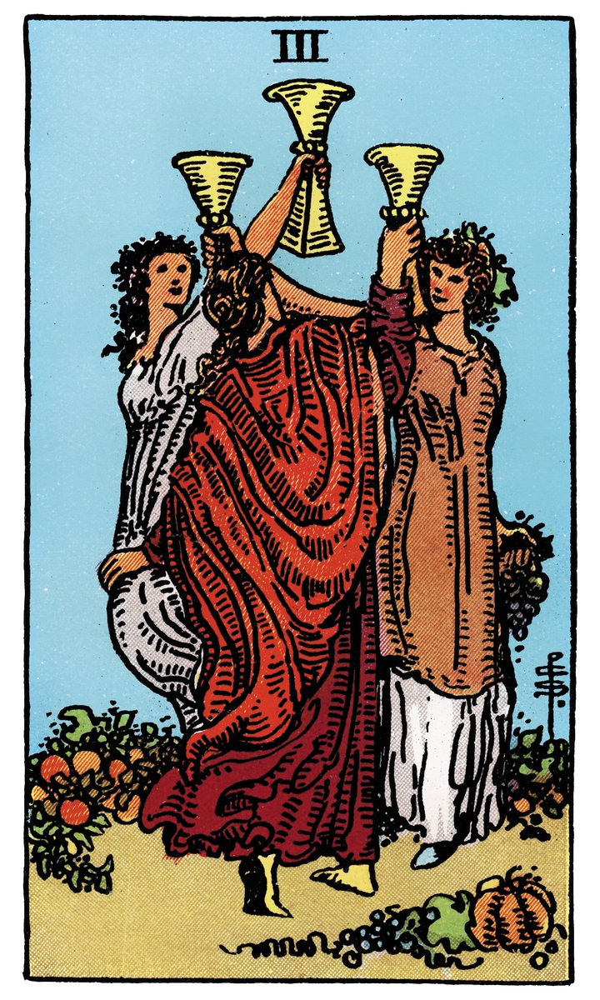
| 姿态 | 三人围圈共舞，举手举杯——这是庆祝的姿态，是"在一起"的纯粹喜悦。 |
| 颜色 | 红黄蓝三色衣裳对应三种不同的性格——差异没有阻碍，反而让画面更丰盛。 |
| 数字 | 3 — 二元之后的第一次扩展。圣杯二的"你我"加入了第三个，变成了"我们"。 |
圣杯二是"你和我"，圣杯三是"我们"。当二元关系扩展到三，就有了群体、有了社群、有了那种"我属于一个比我自己更大的东西"的感觉。三位女性没有谁在主导，她们围成圈跳舞——这是平等关系的最纯粹形态，没有上下，没有中心，只有节奏与共鸣。
地上散落的果实不是装饰，是丰收。圣杯三常出现在某件事完成、某阶段告捷的时刻——不是孤独的胜利，而是可以分享的胜利。一个人喝酒是消愁，三个人举杯是庆典。这张牌提醒我们：喜悦是需要被见证的，丰收是需要被分享的，否则它就不完整。
当圣杯三出现，它可能在说：你需要朋友，需要同伴，需要那种"不需要解释自己也能被理解"的人。它也可能在提醒你正在忽略一段重要的友谊——太久没举杯了，太久没一起跳舞了。真正的庆祝从来不是独饮，是把杯子举到和别人一样高。
圣杯三逆位时，舞圈散了。可能是表面的热闹底下是攀比与八卦——大家举着杯子笑，转身却各怀心思；可能是你被某个圈子排斥在外，看着别人跳舞自己却进不去；也可能是狂欢过了头，从庆祝变成了逃避，喝完这杯还是一个人。
逆位在问：你这群朋友是真的"我们"，还是只是凑在一起的人？真正的圣杯三不需要刻意表演亲热。如果一段友谊让你疲惫，那不是圣杯三的舞，是另一回事。把杯子放下来，看看谁还在原地等你。
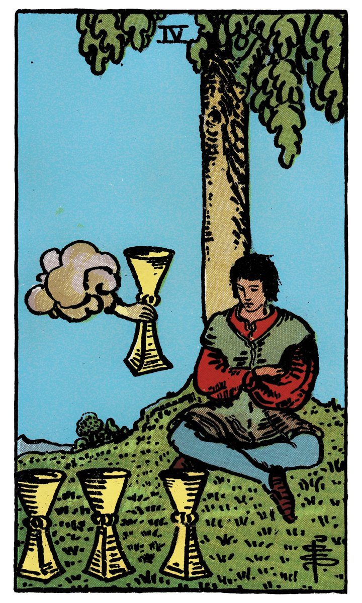
| 姿态 | 抱臂、低头、坐定——身体在拒绝外界，连一只新递来的杯子都吸引不了他。 |
| 颜色 | 整体偏沉稳的色调，云与树是浅灰绿——情绪的低温状态，不是悲伤，是麻木。 |
| 数字 | 4 — 稳定到几乎停滞。三个杯子已经摆好，第四个递来——本该扩展，却选择了闭合。 |
圣杯四不是悲伤，是麻木。三只杯子已经摆在面前，第四只正递过来——但他都看不见。这不是没有选择，而是对选择本身失去了兴趣。这张牌捕捉的是那种"该满足了却满足不了"的状态：该有的都有了，但心里那个洞还是填不上。
盘腿坐在树下，姿态像在冥想——但冥想和逃避的界线很模糊。圣杯四的人可能是真的在向内审视，也可能是用"沉思"包装了"懒得动"。抱臂是封闭的姿态，他不是在等什么，是在拒绝什么。云端递来的杯子是新的机会、新的关系、新的可能——但他抬头一看就要付出代价，所以他选择不抬头。
当这张牌出现，它在问：你是不是把递来的杯子当成打扰了？有时候我们抱怨生活无聊，其实是自己关上了接收的通道。圣杯四不是要你立刻跳起来接纳一切——它只是请你抬一下头，看看那只云端的手。你可以不接，但至少先看见。
圣杯四逆位常常是一个转折信号——那个一直低头的人，终于抬起了头。可能是某种契机让你突然看清了自己正在错过的东西，可能是倦怠到了尽头反而生出新的渴望，也可能是一只你曾经忽视的杯子重新引起了你的注意。
逆位在说：你正在走出那个抱臂而坐的状态。这不一定意味着立刻行动，但至少是你重新开始看见了——看见递来的杯子，看见面前的三只，看见远处流动的河。从看不见到看见，就是圣杯四逆位最珍贵的一步。
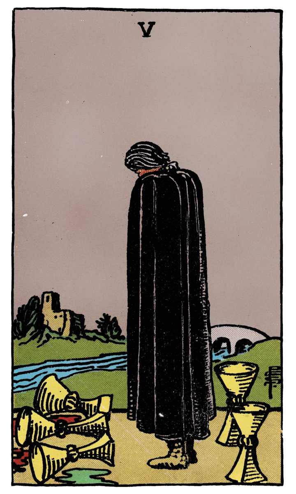
| 姿态 | 低头、披黑袍、背对未来——身体整个朝向失去，对剩下的拥有完全无感。 |
| 颜色 | 黑袍与灰色天空压住整个画面，但远处的桥和家是温暖的——光一直都在，只是他不看。 |
| 数字 | 5 — 失衡与动荡。3只倒了，2只还在——5的破裂让你只看得见倒下的那部分。 |
圣杯五是整副塔罗里最直白的悲伤之牌。三只倒下的杯子代表已经失去的——可能是一段关系、一个机会、一个曾经深爱的人。水流了一地，收不回来。这个人的姿态把全部故事都讲完了：他不是没听见身后的声音，他只是选择先沉浸在这份失去里。
但圣杯五的真正秘密在身后那两只立着的杯子。这是塔罗最温柔的细节之一——没有全部倒下。还有两杯水还在，还有桥可以走过去，还有家在亮着灯，还有人在等。但悲伤有一种引力，它会让你只盯着洒出来的水，完全忘了家里还有杯。这不是冷漠，是悲伤本身的工作机制。
当圣杯五出现，它不会劝你立刻振作——它只是请你记得身后还有两杯。你可以为倒下的那三只哀悼，可以披着黑袍站在河边，可以哭——但请偶尔转身看一眼。悲伤是真实的，但它不是全部。你以为失去了所有，其实只是失去了部分。
圣杯五逆位是转身的那一刻。那个人终于抬起了头，看见了身后还立着的两只杯子，看见了那座桥，看见了家。这不是说悲伤被治愈了——而是你不再让悲伤成为唯一的视野。倒下的三只水不会回来，但你开始收拾，开始走过去。
逆位在说：哀悼的期限到了，可以转身了。这不意味着你要假装没失去过——而是你终于明白，为倒下的杯子哭泣是必要的，但为了剩下的两杯活着也是必要的。桥还在，家还在，等你的人还在。
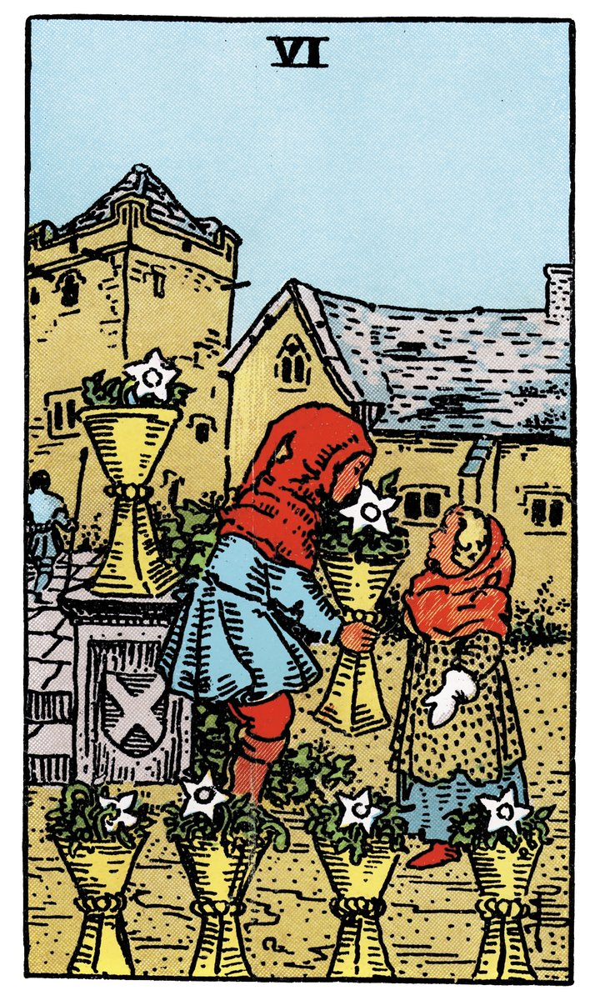
| 姿态 | 弯腰递花——这是给予的姿态，也是"想让你高兴"的纯粹童心。 |
| 颜色 | 泛黄的旧色调像一张褪色照片。花朵的颜色却很鲜亮——记忆里的某些东西比当下更鲜活。 |
| 数字 | 6 — 平衡与和谐。圣杯六的"6"是回到童年的那份单纯，是动荡之后的回望。 |
圣杯六是记忆的牌。它讲的不是当下，是某个被时间泡软了的过去——童年、故乡、那个递花给你的人、那个你曾无条件相信的世界。画面里的一切都是旧时光的质地：老房子、卫兵雕像、褪色的光。但花还是鲜的——记忆里有些东西比当下更明亮。
递花的动作是圣杯六的核心。这不是大人的礼尚往来，是孩子式的"我看到一朵花，想给你"。没有计算，没有目的——这是圣杯六最珍贵的东西：在你变成会权衡利弊的大人之前，曾经存在过的那种纯粹的善意。它没有消失，只是被压到了很深的地方。
当这张牌出现，它可能在说：你需要回去一趟。可能是回到故乡，可能是联系一位老友，可能是允许自己想起某段你以为已经遗忘的时光。它也可能在提醒：你正在用太复杂的方式处理一段本可以很纯粹的关系。回到那个递花的孩子的视角，你会发现答案一直都在。
圣杯六逆位有两种走向。一种是困在回忆里出不来——把过去美化成当下永远比不上的乌托邦，拒绝接受时间已经走了；一种是终于从过去里走出来——告别童年的安全区，承认那个递花的小孩已经长大了。
逆位在问：你抓住的回忆，是滋养还是牢笼？怀旧可以是回家的路，也可以是不敢面对当下的逃避。圣杯六逆位邀请你辨别：哪些过去值得带回当下，哪些过去需要被温柔地放下。童年回不去，但那份纯粹可以随身携带。
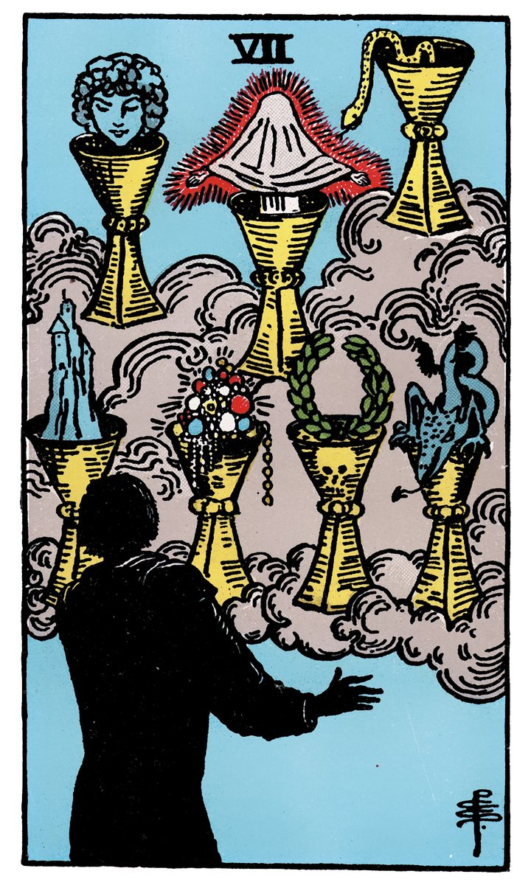
| 姿态 | 背影、面对幻象——他被选项淹没，身体僵在原地，连手都伸不出去。 |
| 颜色 | 灰黑色的影子和漂浮的云雾——一切都是雾里的轮廓，没有一样是实体的。 |
| 数字 | 7 — 内省与考验。圣杯七的"7"是欲望的迷宫，是想象脱离了行动之后的迷雾。 |
圣杯七是欲望的迷宫。七个杯子里装着人想要的一切——权力、财富、荣耀、知识、爱情、神秘、甚至死亡（盖布的那一杯）。但请注意：每一样都是浮在云里的，没有一样是握在手里的。这张牌捕捉的是想象脱离了行动之后的状态——你想得太多，做到的太少。
那条蛇和那条龙是关键的暗号——它们代表隐藏的危险和未被驯化的欲望。圣杯七不是说所有选项都是好的，它在说你根本分不清哪些是真的、哪些是幻。当一个人背对着现实，面对着七杯云雾，他会以为自己拥有很多选择，其实只是被困在了"想"里面。选项越多，越难动手。
当圣杯七出现，它在问：你眼前这些选项，是真的可能性，还是逃避行动的借口？白日梦本身不邪恶，但如果它替代了真实的生活，就成了牢笼。这张牌邀请你从雾里走出来——不是必须立刻选一个杯子，但至少伸手摸一摸，看看哪些是云，哪些是实物。
圣杯七逆位是雾散的时刻。云雾褪去，七只杯子显出原形——有些是真实的可能，有些是镜花水月。你终于看清了，也终于敢选了。从"什么都想要"变成"我知道我要哪一个"，这就是逆位的转折。
逆位在说：你正在走出那个背对现实、面对幻象的姿态。这不一定意味着选了之后一切顺利——但至少你从想象的迷宫里迈进了真实的生活。看清比拥有更重要，选择比幻想更有力量。雾散之后，路才会显出来。
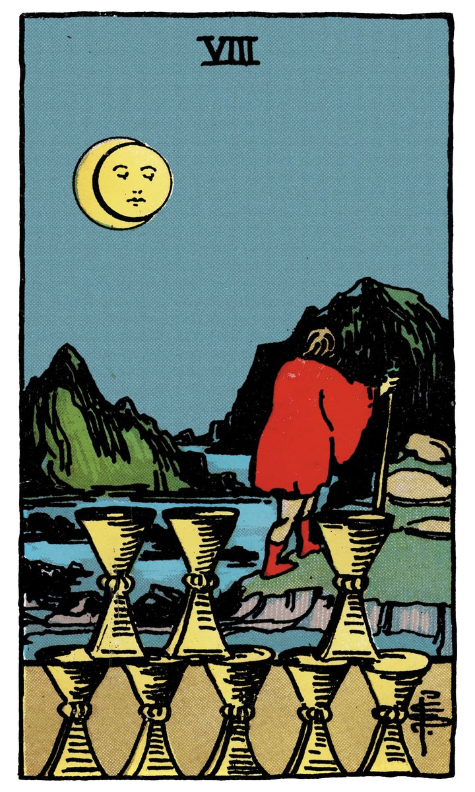
| 姿态 | 背对、拄杖、向前走——他主动选择了离开，不是被赶走，是觉得"够了"。 |
| 颜色 | 红衣蓝裤是行动与情感的结合。那轮奇怪的月日暗示这是一次灵性层面的离开。 |
| 数字 | 8 — 流动与转变。圣杯八的"8"是放下了已圆满的8杯，去寻找那缺失的第9杯。 |
圣杯八是主动离开的牌。八只杯子整齐摆好，看起来该满足了——但这个人选择背对它们走开。这不是因为杯子不够好，而是因为他心里缺的那一杯，这八杯都填不上。这是一种比悲伤更深的觉察：原来我一直在寻找的东西，不在这里。
注意那轮奇怪的月日——它既是月亮又是太阳，暗示这是一次灵性层面的寻找。圣杯八的离开不是逃避，是回应内心的呼唤。他拄着行杖，走得慢但坚决，没回头。这种离开比到达更需要勇气——因为你要放弃已经拥有的、看得见的东西，去追寻一个还看不见的、更深的东西。
当这张牌出现，它可能在说：是时候离开一段已经不能滋养你的关系、一份已经没有意义的工作、一种已经枯竭的生活方式。它不评判你留下的那八杯——它们曾经是好的——但它说你现在已经长出了那八杯装不下的部分。继续留下不是忠诚，是自我背叛。
圣杯八逆位有两种可能。一种是你想走但不敢走——站在八杯前徘徊，知道心里缺的那一杯不在这里，却害怕未知、害怕放弃已有的、害怕被人说"不知足"。一种是你终于走了——结束了一段漫长的犹豫，背起行囊踏上山路。
逆位在问：你是在害怕离开，还是在害怕离开之后的自己？很多时候，困住我们的不是那八杯水，而是对"放弃已有"的恐惧。圣杯八逆位邀请你看清：留下来的成本，可能比离开更高。那座山一直在等你，行杖一直在脚边。
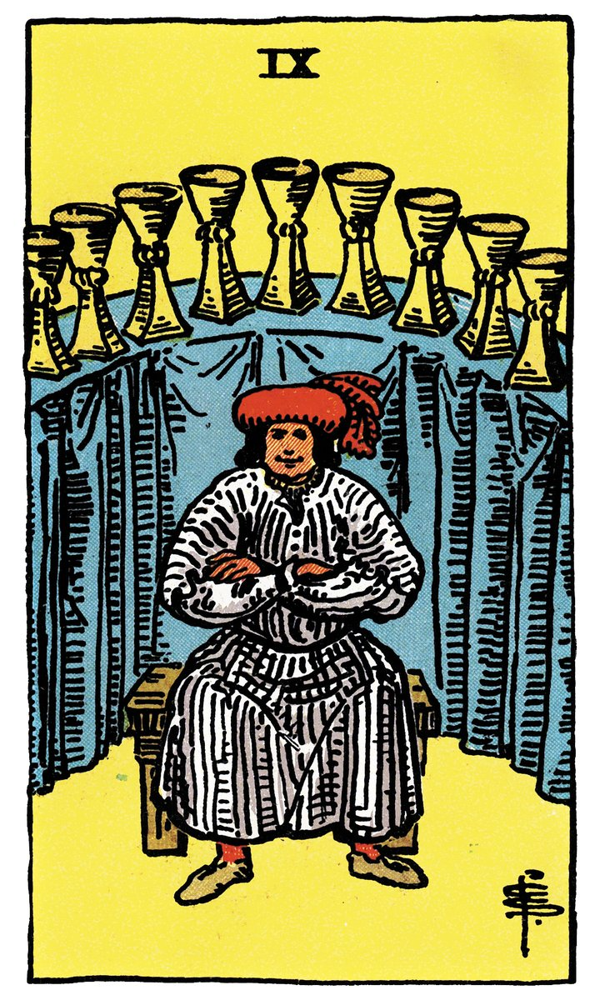
| 姿态 | 抱臂、挺胸、微笑——这是"我得到了"的姿态，是 satisfied 的本意。 |
| 颜色 | 红色帽子显眼，蓝色衣裳沉稳——激情与满足的平衡。九只杯子排成弧形像光环。 |
| 数字 | 9 — 接近圆满。圣杯九的"9"是单独一人的满足，十之前的最后一个数字。 |
圣杯九有一个传统名字——"愿望之牌"。九只杯子像光环一样排列在身后，那人抱臂微笑，姿态里全是"我得到了"。这是一张纯粹的满足之牌：你想要的东西来了，你为此高兴，你享受这份高兴。不需要谦虚到否定喜悦。
但圣杯九有一个微妙的细节——这个人是一个人的满足。九只杯子都是他的，他没在分享。这既可以是独享的丰盛，也可以是只为自己而活的孤独。9是10之前最后一个数字，它是"我的圆满"，但还不是"我们的圆满"。圣杯九的满足是真实的，但它可能还差一步——从"我满足了"到"我能分享这份满足"。
当这张牌出现，它在说：你会得到你想要的。可能是感情上的如愿，可能是身体或情感上的舒适，可能是某个长久以来的愿望终于落地。它邀请你真正享受这一刻——不要急着说"还不够"，不要用谦虚压住喜悦。但同时也轻声问：得到了之后，你愿意让旁边的人也沾一点光吗？
圣杯九逆位时，那份满足出了问题。可能是你得到了想要的东西，却发现心里那个洞还是没填上——原来不快乐不是因为缺少，而是因为搞错了想要什么。也可能是你太贪了，九杯还不够，想要第十杯、第十一杯，把自己淹没在过度的满足里。
逆位在问：你想要的，真的是你需要的吗？圣杯九逆位常常是"愿望成真之后的空虚"——以为得到就会幸福，得到了才发现幸福不在那个东西里。这张牌邀请你重新审视自己的欲望：哪些是真心想要的，哪些是被教导去想要的。
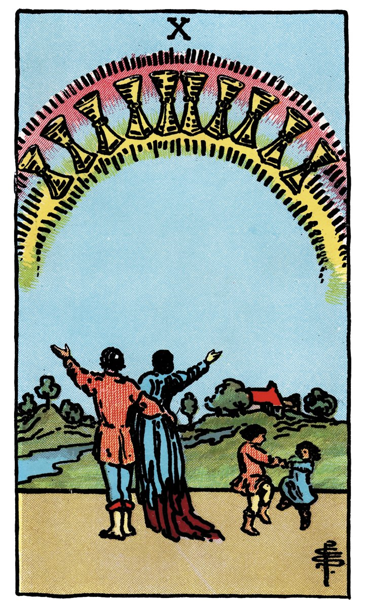
| 姿态 | 伴侣牵手、孩子欢舞——不是面对面，而是肩并肩一起看向彩虹与远方。 |
| 颜色 | 彩虹的七色加上山河的绿与蓝——画面饱和到几乎像童话，是情感圆满的本色。 |
| 数字 | 10 — 圆满与归宿。圣杯组的终点，从1的萌芽到10的圆满，水汇成了海。 |
圣杯十是圣杯组的归宿。从王牌那一杯水的降临，到十杯水排成彩虹——这是情感、关系、心灵之路的圆满。彩虹是契约的象征——不仅是人与人之间的，也是人与生活之间的。这张牌说的是：你找到了，你到家了，你不再是孤身一人面对天空。
注意画面里的人不是面对面，是肩并肩看向同一个方向。这是圣杯十的关键——它不是激情的相望，是同行。两个孩子在前方跳舞，象征这段关系结出的果实、延伸的未来、延续的生命。十只杯子排成彩虹覆盖整个家庭——这份圆满不只是两个人的，是属于一个系统的。
当圣杯十出现，它在说：这就是你一直在寻找的"家"。可能是真实的家庭，可能是心灵上的归属，可能是一群与你共振的人。它不是终点后的停滞——彩虹之后还有日子要过——但它是一个可以回头的坐标。圣杯十的圆满不是没有问题，是有问题也愿意一起面对。
圣杯十逆位时，那道彩虹出现了裂痕。可能是表面的圆满底下是真实的疏离——外人都觉得你过得很好，但你心里清楚那个家已经散了；可能是你期待已久的"从此以后"没有如期而至，结婚/成家/团聚之后发现并没有想象中幸福；也可能是你正在失去一个曾经让你有归属感的地方。
逆位在问：你追求的圆满，是你自己的还是别人眼中的？圣杯十逆位常常是因为我们在追逐一个被教导的"幸福模板"，而忽略了自己真实的需要。彩虹可以重新出现——但需要先承认它褪色了。
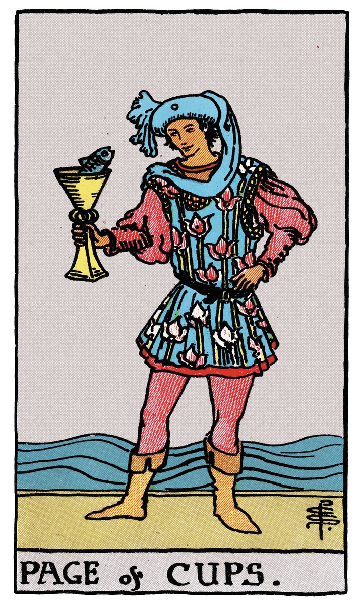
| 姿态 | 小心翼翼地托着杯子，认真听鱼说话——他是初学者，对内心世界充满敬意。 |
| 颜色 | 蓝色花衣是水元素的原色，红帽红羽是初生的热情。鱼的银白是直觉的微光。 |
| 数字 | 侍从（Jack/Page）— 宫廷牌的起点。圣杯侍从是水元素的"小孩"，是情感的初学者。 |
圣杯侍从是水元素的初学者——一个刚刚开始听见内心声音的年轻人。鱼从杯子里探出来说话，是这张牌最迷人的细节：那是直觉第一次以可辨认的形式出现。他没把鱼吓跑，没把杯子扣上，他认真听着，表情里全是新鲜的惊奇。这就是侍从的状态——还没学会，但愿意学。
侍从属于宫廷牌里的"学习者"位置。他不是情感的主人，是情感的徒弟。他的蓝色花衣是水元素的底色，红帽上那根卷起的羽毛是尚未成熟的热情——还软，还弯，但是向上长。这张牌代表每个人心里那个对感受保持敞开的小孩——那个会为一只鱼惊讶、会为一首歌落泪、会为一个梦记住一整天的部分。
当圣杯侍从出现，它可能在说：你正进入一段新的情感学习期，可能是一段新关系的萌芽，可能是艺术创作的开始，也可能是收到一个温柔的消息。它邀请你用侍从的姿态对待这件事——不要急着成为专家，不要用"我应该懂"压住那个初见的惊奇。鱼已经开口了，你只需要听。
圣杯侍从逆位时，那份柔软的不成熟走向了两个极端。要么你太孩子气——把所有感受都当真，任情绪支配，分不清直觉与幻想；要么你关掉了那个听鱼的小孩——为了显得成熟，强行压抑所有柔软的、艺术的、直觉的部分。
逆位在问：你的"内在小孩"是被宠坏了，还是被关起来了？圣杯侍从的成长不是消灭童心，而是让那份柔软学会与世界对话。鱼说话了你要听，但也要懂得分辨哪些是直觉，哪些只是浪花。成熟不等于麻木，敏感也不等于失控。
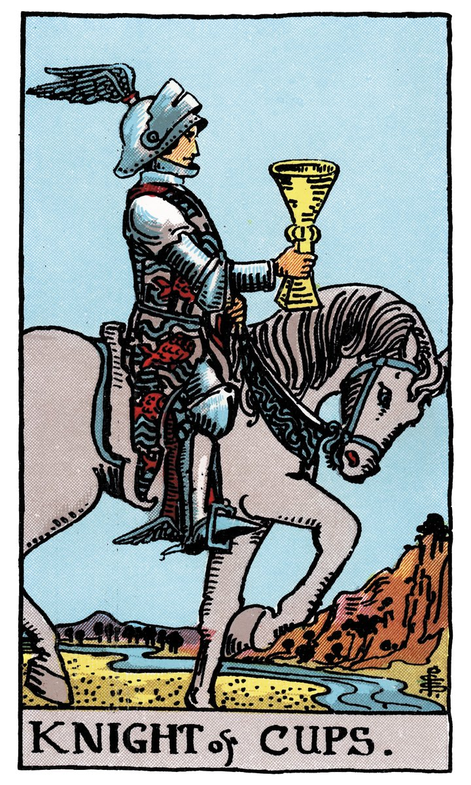
| 姿态 | 举杯前行，步伐不疾不徐——他是浪漫的使者，不是战士，是带着邀请来的。 |
| 颜色 | 鱼鳞铠甲是水元素的化身，白马是纯洁意图的坐骑。脚下黄土地等待被滋润。 |
| 数字 | 骑士（Knight）— 宫廷中的行动者。圣杯骑士是水元素的"出发"，把情感带向世界。 |
圣杯骑士是水元素的行动者——但他不是冲锋的战士，是优雅前行的使者。白马不疾驰，是缓步而来；他举着杯子，不是武器，是邀请。鱼鳞铠甲说明他整个人都被水元素浸润——他不是带着情感做事，他本身就是情感在做事。头盔和鞋子上的翅膀，让他像是赫尔墨斯——传递消息的神。
骑士位置代表宫廷中的"出发"。侍从在学习，骑士在行动。圣杯骑士的行动不是征服，是追寻与送达——他可能带着爱意走向某人，可能带着理想走上一条路，可能带着一个艺术构想走向实现。他眼里有更远的地方，脚下是干涸的土地——他是来滋润的，不是来索取的。
当这张牌出现，它可能在说：你正进入一段以情感为驱动力的行动期。可能是一段追求，可能是一次告白，可能是一个艺术计划的启动，也可能是一个人带着邀请走进你的生活。它邀请你用骑士的姿态对待这件事——既有感受，也有行动；既浪漫，也前进。但也要记得：骑士容易爱上"追寻"本身，不一定真的到达。
圣杯骑士逆位时，那份浪漫走了样。可能是只会说不会做——情话讲得漂亮，承诺许得华丽，但永远在路上，从不到达；可能是被情绪支配了行动——一会儿热情如火，一会儿冷若冰霜，让人摸不清；也可能那份邀请本身是假的，他举着杯子来，不是为了给你，是为了让你看见他举着杯子。
逆位在问：你追求的是那个人、那件事，还是"追求"本身的感觉？圣杯骑士的成长是从"追寻的浪漫"走向"到达的承诺"。美丽的姿态不能代替真实的抵达，光有杯子不够，杯里得有水，水里得有真心。
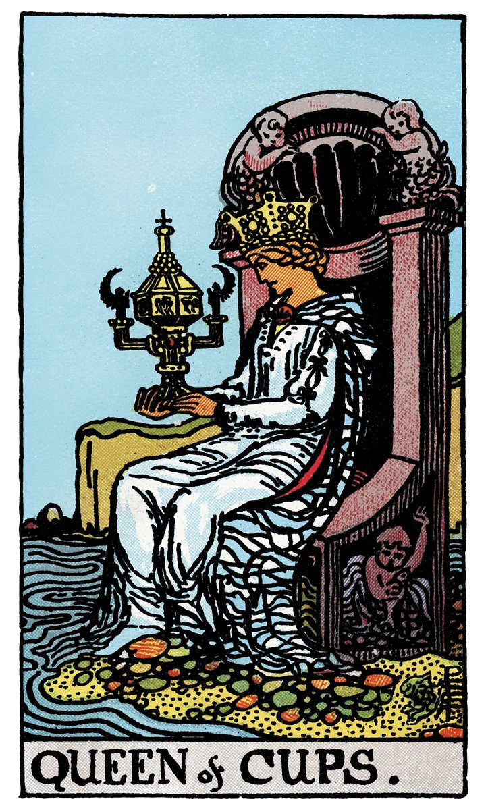
| 姿态 | 端坐、合盖杯子——她不是在接收外界情感，而是守护着内在的那一汪水。 |
| 颜色 | 蓝白相间是水与纯净的结合。海水翻涌她却平静——情感的成熟不在于没有浪，而在于不被浪带走。 |
| 数字 | 王后（Queen）— 宫廷中的承接者。圣杯王后是水元素的"接纳"，是情感深度的人格化。 |
圣杯王后是水元素的人格化。她坐在海边，脚下浪花翻涌——但她不被浪带走。这是她的核心：她不是没有情感，她是能容纳情感的人。海水是流动的情感，王座是稳定的自我——两者并存，就是王后的境界。
她手中那只合盖的圣杯是关键细节。其他圣杯都敞开着接收，王后的杯子却被她小心守护。这不是封闭——这是懂得内在之水的珍贵。她已经过了圣杯侍从那种"鱼一说话就惊讶"的阶段，她知道自己杯里装的是什么，所以她护着。这种守护不是吝啬，是对内在世界的尊重。
当这张牌出现，它可能在说：你需要用王后的姿态对待自己的情感生活。可能是某个时刻要求你成为身边人的疗愈者、倾听者、温柔容器；也可能是提醒你守护好自己内在的那杯水——不要轻易让它被外界搅浑。圣杯王后的力量不是行动，是在场——带着觉知和慈悲，待在情感里而不被情感淹没。
圣杯王后逆位时，那份容器失效了。可能是过度共情——把别人的情绪全收进来，分不清哪些是自己的、哪些是别人的，最后被淹没；可能是情感失控，那个能容纳浪的王后被浪带走了；也可能是用"我都是为了你"包装一种隐性的依赖与操控，把牺牲当成爱。
逆位在问：你的杯子还能装水吗？还是已经漏了？圣杯王后的修复不是变得冷漠，而是重新学会合盖——懂得哪些情感是自己的，哪些需要还给世界。守护不是隔绝，是分辨。慈悲若没有边界，就成了自我消耗。
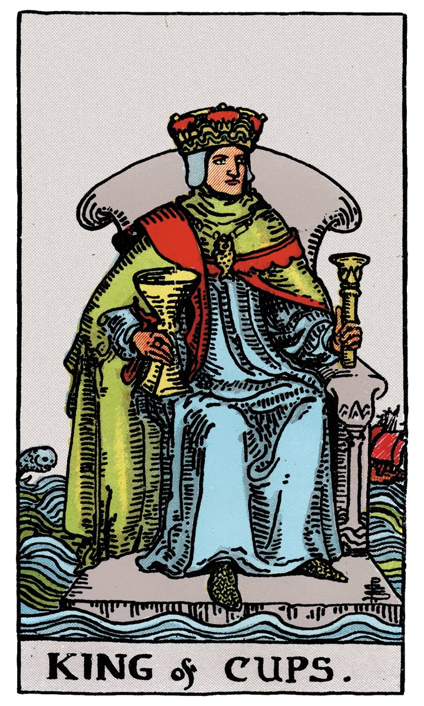
| 姿态 | 一手权杖一手圣杯——他同时握着"力量"与"感受"，左手稳稳端杯，水不洒。 |
| 颜色 | 蓝袍红披是水与行动的合一，金冠是成熟后的智慧。脚下巨浪他仍稳坐。 |
| 数字 | 国王（King）— 宫廷中的统御者。圣杯国王是水元素的"成熟"，情感被掌控而不失控。 |
圣杯国王是水元素的成熟形态——情感不再是威胁，而是被他握在手里的东西。王后端着合盖的杯子，国王却把杯子握在掌中，水不洒。这不是压抑情感，是完全熟悉了它——他知道杯里装的是什么，所以能在风浪中端稳。脚下海浪翻涌、渔船颠簸，他纹丝不动——这是塔罗里"内在稳定"最强烈的画面。
一手宝珠一手圣杯是关键——国王同时握着权力与感受、理性与感性。圣杯组走到国王这里，不再是单纯的情感流露，而是情感与意志的合一。他不否认感受，但也不被感受支配。海豚在他王座上跳跃——他驯服了水的野性，让深海的能量成了他的盟友。
当这张牌出现，它可能在指认一个具有圣杯国王品质的人——成熟、稳重、能掌舵、能在风浪中保持平衡；也可能在邀请你唤醒自己内在的国王。你可能正面对一段需要成熟处理的关系、一份需要平衡情感与理智的工作。圣杯国王的境界不是没有情绪，是让情绪流过而不带走自己——杯子在他手里，浪在他脚下，两者并行不悖。
圣杯国王逆位时，那份"端稳"变成了压抑。表面冷静、内心翻涌——他不是真的没有情绪，是把它压到了海底，压到自己也看不见的地方。可能是用"成熟"包装冷漠，用"理性"否定感受；可能是在别人需要共情时给出冰冷的判断；也可能是私底下情绪失控，公开场合却装得一切正常——表里分裂。
逆位在问：你的"稳"，是真正的平衡，还是把水强行按住？圣杯国王的修复不是放下杯子，而是承认杯里的水。真正的成熟是允许情感存在，并用智慧与之同行——不是装作没有。海豚仍要跳跃，浪仍要流动，国王不是把海冻住，是学会在浪里坐稳。
⚔️ 宝剑 · 风

| 姿态 | 剑尖向上——思想的指向，直指真理。手从云中伸出，意味着灵感来自更高处。 |
| 颜色 | 剑刃的银灰、王冠的金黄、天空的澄蓝——风元素的清冷与权威。 |
| 数字 | Ace（1）——宝剑组的源头。1是单一、纯粹、未分裂的思想之力。 |
宝剑王牌是风元素的纯度——一柄未被使用过的剑。它不是砍杀的工具，而是思想的原始力量。当王牌出现，有什么东西正在你的脑海中亮起来。也许是一个困扰你很久的问题突然变得清晰；也许是一个全新的想法像闪电一样击中你；也许是终于看穿了某个一直被掩盖的真相。王牌的剑很锋利——它切开模糊，劈开犹豫，斩断纠缠。
那顶王冠很重要。它不是战争的胜利品，而是心智的权威——你的判断力本身就值得被尊重。许多时候我们不信任自己的想法，觉得"应该再问问别人""或许我想错了"。王牌告诉你：这一刻，你脑子里的那个念头是对的。不需要更多意见，不需要更多佐证——你自己就知道。
但王牌是开始，不是结局。剑握在手中，还没出招。它意味着一个清晰的瞬间已经到来，但接下来你要怎么用这把剑——是说出口，是做决定，是开始一场艰难的对话，还是承认一个让你不舒服的事实——全在你。
王牌逆位时，那把剑变钝了，或者指向了错误的方向。要么是脑子里的混乱盖过了清晰——你越想越乱，各种声音打架，理不出头绪；要么是锋利走向了极端——变成伤人的话、尖刻的批评、为了"说真话"而说真话的冷漠。剑的真意是切开迷雾，不是切割关系。
它也在问你：你是不是在用"理性"逃避某种感受？王牌逆位常常不是因为想得不够，而是想得太多——把可以直接知道的事情用分析复杂化了。让剑归位，意味着承认那个你已经知道的答案。
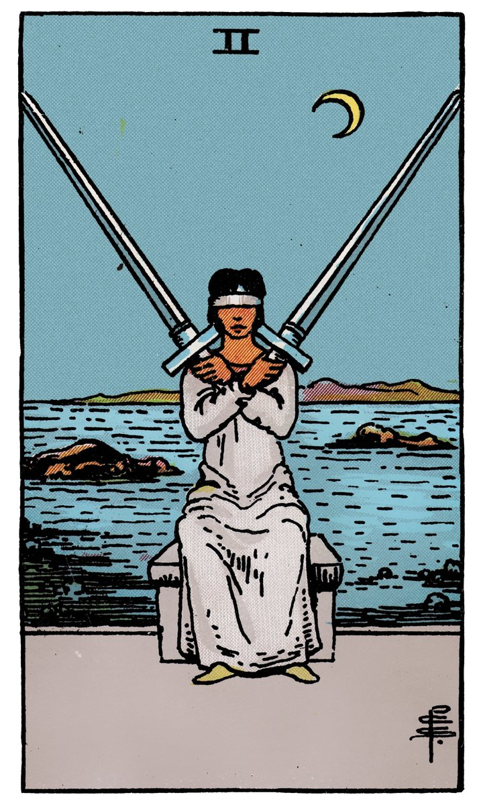
| 姿态 | 双手交叉防御——封闭的姿态，剑刃向外但自己也看不见。 |
| 颜色 | 灰白冷色调，月光下的海面——情感被刻意压抑在表面之下。 |
| 数字 | 2——二元对立。两把剑交叉，两种选择、两种声音、两种立场僵持不下。 |
宝剑二画的是一种刻意的僵持。两个选择摆在面前，你都不想动。不是不知道答案——是知道了但不想承认。眼罩不是别人给你戴的，是你自己戴上的。因为一旦取下来，你就要做决定，而做决定意味着放弃另一种可能。所以你选择"暂时不动"，用平衡的姿态维持着不存在的平衡。
海面在身后是平静的——但那是夜的平静，不是真的太平。月亮代表直觉，它在天上亮着，可你选择不看。两把剑交叉成X，是一个封闭的形状，既挡住外面，也锁住里面。这张牌常常出现在你明知道一段关系/工作/决定已经走到关口，却还在用"再等等""两边都看看"来拖延的时刻。
僵局是有代价的。它消耗你的精力，让你陷入持续的紧张。看着平静，其实整个身体都在用力——交叉的双臂、紧握的剑，都是耗能的姿势。这张牌没有催你立刻行动，但它指出：你不能永远这样坐着。
宝剑二逆位时，眼罩开始松动。可能是外部事件迫使你做出选择；可能是内心的情绪再也压不住，平静的海面掀起浪。僵持被打破——但打破不等于解决。如果太突然，你会慌乱中做出让自己后悔的决定；如果太晚，你积累的疲惫会一并涌出。
这张逆位牌也在提醒：别从"僵着不动"跳到"乱动一气"。取下眼罩不是为了立刻给出答案，而是为了先看清楚——你究竟在害怕什么？两把剑里，哪一把是你真正想放下的？
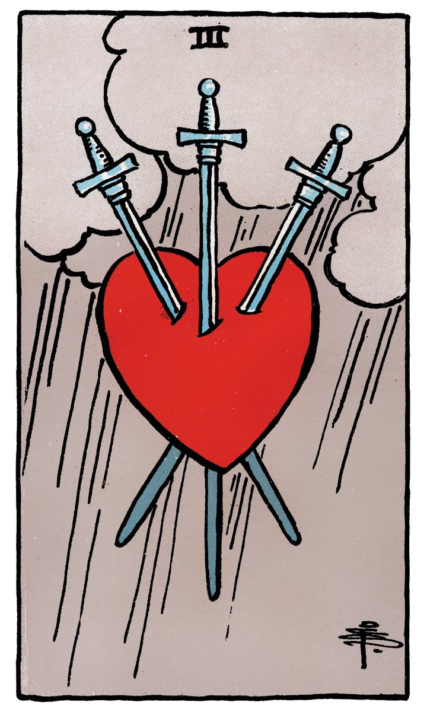
| 姿态 | 无人物——这张牌里没有"主体"，只有纯粹的感受本身。 |
| 颜色 | 灰天空、红心、银剑——痛的色彩极为直接，无需修饰。 |
| 数字 | 3——三元结构。三把剑形成稳定却又刺穿的形状，3在风元素里是思想与情感首次剧烈撞击。 |
宝剑三是整副塔罗里最直白的痛。它没有隐喻，没有象征距离——一颗心被剑刺穿，下着雨。但要注意：这颗心不是被外力击碎的，是被剑刺穿。剑是风元素，是思想、是真相、是言语。所以这张牌的痛，常常不是事情本身，而是你终于看清了某件事——一段关系的真相、一个承诺的虚假、自己长期回避的事实。
三把剑的排列像一个向下的箭头，刺入心脏。3在数字学里是行动的数字，在风元素里意味着思想开始有了情感重量。一柄剑是洞察，两柄剑是矛盾，三柄剑是洞察穿过了情感——你不再只是"知道"，你开始感到它。雨是净化的象征，它和泪同源。这场雨下下来，不是淹没，是清洗。
宝剑三的痛是有方向的。它不是无来由的折磨，而是看清之后必经的难过。许多时候我们卡在某种含糊里，既不能假装没事，又不敢面对真相——宝剑三就是那个终于打破含糊的瞬间。它痛，但它结束了拖延。心还在跳，剑会拔出来，雨会停。
宝剑三逆位时，通常是两种情况：要么是痛感开始松动，剑慢慢拔出，雨慢慢停下，你正在从某种悲伤里走出来；要么是反向的——你不让剑拔出来，反复回到那个伤口，把痛当成存在的证明。
后一种情况更要警惕。有些人习惯了痛，因为痛至少证明"那是真的"。逆位宝剑三在问你：你是还在痛，还是在抓着痛不放？疗愈不是背叛，放下不是忘记。允许那三把剑离开你的心，允许雨停。
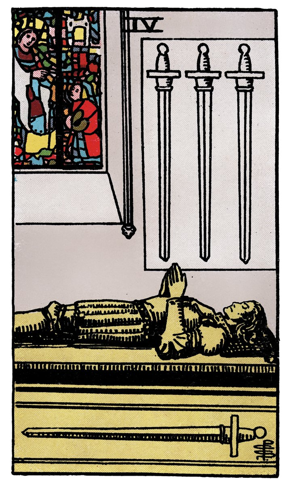
| 姿态 | 仰卧、双手合十——主动的休息，不是崩溃，是有意识的暂停。 |
| 颜色 | 暖色调玻璃窗与冷色调石棺——精神的祈向与肉身的安息同时存在。 |
| 数字 | 4——稳定结构。3的动荡之后，4是停下来稳固的时刻。 |
宝剑四是一张关于主动停下来的牌。骑士不是被打倒的，是他自己躺下的——双手合十，姿态庄重。三把剑挂在墙上，不再指向他；身下还有一把，但那是支撑，不是威胁。这是风元素难得的安静时刻——思维放下武器，让身体接管。
这张牌常常出现在你刚经历过一段紧张之后的窗口期。可能是宝剑三的心碎之后，可能是某次冲突、决断、密集思考之后。你的脑子已经转得太久了，它需要休息。但宝剑四的休息不是逃避——那是宝剑七、宝剑八的状态。这里的休息是有意识地放下剑。你知道问题还在，但此刻你不是解决问题的时候。
彩色玻璃窗很重要。它提醒你：休息本身可以是精神性的。冥想、独处、安静地什么也不想、好好睡一觉——这些不是浪费时间，是修复。剑已经收起，但不是丢弃——它们挂在墙上，等你恢复之后再取下。
宝剑四逆位时，那个该休息的人起来了——但不是时候。要么是身体已经亮起红灯你还硬撑，要么是脑子停不下来，夜里辗转,白天耗神。也可能相反：你已经休息够了，该起身了却还在躺着，把"修复"变成了逃避。
逆位的问句是：你究竟是没休息够，还是不敢起身？如果是前者，那就放下一切，真正躺下；如果是后者，那就去取下墙上的剑——你已经有了再战的力量，只是还不愿意承认。
| 姿态 | 前方人物侧身回望、手中三剑——得意却孤独。后方两人垂头而去。 |
| 颜色 | 黄衣与灰天——个人意志与阴郁氛围的强烈对比。 |
| 数字 | 5——挑战与冲突之数。5在风元素里是思想冲突的尖锐化。 |
宝剑五画的是一种赢了但不光彩的局面。前方那人捡起了剑，看起来是胜利者，但你看看他身后的两个人——那是被打败的对手，垂头走开。整张牌的氛围是冷的，没有任何喜悦。这不是凯旋，这是残局。
5在风元素里意味着思想的冲突进入白热化。一柄剑是洞察，三柄剑是痛，五柄剑是多方混战。当你出现在这张牌里，你需要问自己一个问题：我是不是在用"我没错"去碾压别人？你可能在事实上是对的，在逻辑上是对的，但对的方式让对方失去了尊严——这种胜利是要付出代价的。
宝剑五不全是负面。有时候冲突是必要的，有时候你需要为自己辩护，有时候你必须站出来反对。但牌在提醒你：看清楚你赢的是什么，失去的是什么。前三把剑在你手里，后两把还在地上——你为了这三把，丢掉了什么？可能是一段关系，可能是别人的信任，可能是自己内心的安宁。胜利可以更完整。
宝剑五逆位时，那场冲突的能量开始转化。最理想的方向是：你回头看那场"胜利"，意识到代价太高，主动走向和解。或是对手回头，双方找到比输赢更重要的东西。逆位常常伴随一种事后的清醒——赢了那一刻很爽，过后却觉得空。
但也可能走向另一种情况：余怨未消，表面和解，心里还在记账。宝剑五逆位在问你：那份"我没错"的执念，你愿意放下了吗？真正的胜利不是让对方认输，是让自己不再被这件事消耗。
| 姿态 | 三人背对观者、朝远方去——离开的方向是确定的，但没有人回头。 |
| 颜色 | 前景水面波纹起伏，远景水面平如镜——状态在过渡。 |
| 数字 | 6——平衡与过渡之数。5的冲突之后，6是带着伤口走向秩序。 |
宝剑六是一张移动中的疗愈。船在走，人在走，但走得不快。船夫用篙撑，不是扬帆——这是缓慢的、稳定的前进。船上的六把剑直立着，像沉默的乘客，代表那些你带在身上的思想、记忆、判断——你没有把它们丢下，但它们也不再是武器。你正带着它们离开。
这张牌的水很有意思：船尾的水是起伏的，船头的水是平的。这意味着你正在从动荡走向平静。但请注意——你是背对着观者，你看不到你的脸。这张牌里的人没有回头。回头看就会停下，而这张牌的能量在于继续走。重要的不是你从哪里来，是你在向哪里去。
宝剑六常常出现在某段艰难时期之后的转折点。你可能刚经历宝剑三的心碎、宝剑五的冲突、宝剑八的困境。现在你终于离开了那个场景——可能是物理上的离开（搬家、离职、结束关系），可能是心理上的离开（不再纠缠、放下执念）。离开不等于遗忘，你身上还带着那些剑。但它们不再刺向你，它们只是和你一起渡过去。
宝剑六逆位时，船走得艰难，甚至在打转。可能是外部条件不允许你离开——经济、责任、他人的牵绊。但更常见的是内部的抗拒：你已经可以走了，却还在原地反复权衡，或对过去的人和事回头看。
逆位在问你：你究竟在等什么？是等一个"完全准备好"的时刻？还是在等一个让你"可以不离开"的理由？有些过渡不需要想清楚所有问题才能开始——船夫撑篙的时候，他不需要知道对岸有什么，他只需要把船推向那个方向。
| 姿态 | 弯腰侧身、回头张望——隐秘的行动，带着心虚与得意并存的神色。 |
| 颜色 | 黄衣红鞋——张扬的颜色与他隐蔽的动作形成讽刺。 |
| 数字 | 7——隐秘与策略之数。7在风元素里是思想的迂回、未尽之言、暗中布局。 |
宝剑七画的是暗中的行动。男子没有正面冲突，他选择趁人不备拿走自己能拿的东西。五把剑在怀里，两把还在地上——他不能全拿，他知道自己能拿多少。这不是大盗，这是小聪明。他的笑里有得意，也有心虚——他知道自己在做不该做的事，但他觉得自己"没办法"。
7在风元素里是思想的策略化。一柄剑是洞察，三柄剑是痛，五柄剑是冲突，七柄剑是绕开正面。这张牌常常出现在你不愿直接面对某件事的时刻。可能是你隐瞒了一些信息，可能是你在背后做了某种安排，可能是你为了避开一次艰难的对话而选择了"善意的谎言"。
宝剑七不一定都是恶意。有时候你确实需要策略，需要保护自己，需要在敌强我弱时撤退。但牌在提醒你：这是临时的手段，不是长久之计。每次偷偷行动，你都在透支某种东西——可能是别人的信任，可能是自己的坦荡。两把剑还在地上——你拿不走的那些，迟早要面对。
宝剑七逆位时，那些隐秘的事开始浮现。可能是你的小动作被发现了，可能是你自己心里那种"这样不对"的声音越来越大，可能是你想把拿走的剑放回去。逆位是从暗中走向明面的过程——可能不体面，但至少诚实。
这张逆位牌也可能意味着：你已经厌倦了算计。维持一个秘密、一个谎言、一个策略性的姿态，比直接面对更累。逆位给你的机会是——把那五把剑放下，把该说的说出来，让对方看到真实的你。可能引发冲突，但那是宝剑五的冲突，比宝剑七的隐秘更值得。
| 姿态 | 被绑、蒙眼、站立不动——但绳索其实松散，她可以自己挣脱。 |
| 颜色 | 女性裙装的浅色与周围灰暗环境的对比——她是这片困局里唯一鲜活的存在。 |
| 数字 | 8——禁锢与循环之数。8横过来就是∞，宝剑八的困局是自我复制的。 |
宝剑八画的是一种被自己的思维困住的状态。八把剑围着她，但请注意——它们插在地上，并没有碰到她。她身上的绳索看起来绑得很紧，但其实是松的；她的眼睛被蒙住，但其实她可以伸手取下。她站在水里，水是流动的，可她不动。这张牌的核心不是"她被困住了"，而是"她以为自己被困住了"。
8在风元素里意味着思维的循环强化。一柄剑是洞察，三柄剑是痛，五柄剑是冲突，七柄剑是隐秘，八柄剑是思维的闭合回路——你想得越多，越觉得动弹不得。这张牌常常出现在你被焦虑、自我怀疑、对未来的恐惧淹没的时刻。你列出了所有可能出错的情况，你想到了所有人会怎么评价你，你看见了所有的障碍——然后你站着不动。
但请注意远处那座城堡——那不是监狱，那是家。出路是有的，只是你看不见。宝剑八的关键转折在于：取下眼罩。你不需要解开所有绳索、推开所有剑才能开始——你只需要先看见，自己其实是可以动的。最艰难的不是逃出来，是意识到自己在哪。
宝剑八逆位时，绳索开始松动。可能是某个外部事件让你看清了——原来事情没那么糟；可能是你自己终于累了，累了够了，不想再这样站着。逆位是视角的打开：你开始意识到那些"剑"其实不在你身上，是你把它们插在那儿的。
逆位宝剑八的能量是解放性的。你不需要解开所有结才能迈步——迈出第一步，绳索自然就松了。这张牌在告诉你：你已经看清了困住你的是什么，接下来，走出去。
| 姿态 | 坐起、抱头——深夜的惊醒，身体还没从噩梦中缓过来。 |
| 颜色 | 黑色背景与床上花纹的对比——黑暗中只有思想在活动。 |
| 数字 | 9——极致与焦虑之数。9是3的平方，宝剑九是宝剑三的焦虑版。 |
宝剑九是凌晨三点的塔罗。它画的不是白天发生的事，是夜里发生的事——白天你还能撑着，到了夜里，所有你压抑的焦虑一起涌上来。床上的人抱头坐起，墙上的九把剑像阴影里的判决书。但请注意：那些剑是挂在墙上的，不是刺进他身体的。这是宝剑九的关键——痛不在事实里，在想象里。
9在风元素里是思维走到极致。��柄剑是洞察，三柄剑是痛，五柄剑是冲突，七柄剑是隐秘，八柄剑是困住，九柄剑是思维反噬自身。这张牌常常出现在你被自己的念头折磨的时刻：你预演了最坏的结果，你回忆了最痛的过去，你假设了所有人对你的负面评价——这些都不是真的，但它们在你的脑子里是真的。
被子上的玫瑰和星象很重要——那是床本身的温柔，是你生活的基本秩序，它们没有变。变的是你的视角。宝剑九的问句是：你害怕的，究竟是正在发生的事，还是你想象中会发生的事？把那九把剑从墙上取下来，你会发现它们只是影子。天会亮的。
宝剑九逆位时，黎明开始渗进来。可能是你终于把那件折磨你的事说出口了——一旦说出来，它就不再在阴影里长大；可能是事情真的发生了，而你想像中的灾难比现实严重十倍；可能是你寻求了帮助，意识到自己不需要独自承担。
逆位宝剑九给你的礼物是比例感——把焦虑放回它该有的大小。你不需要消灭所有担忧，你只需要停止喂养它们。墙上的剑可以取下，天会亮的，你也会睡着的。
| 姿态 | 俯卧、一动不动——这是终点，无法更糟。 |
| 颜色 | 黑色与金色的对比——最暗的夜与最近的黎明并存。 |
| 数字 | 10——宝剑组的终章。10是数字的圆满，也是这一组能量的极致。 |
宝剑十是宝剑组的终点，也是整副塔罗最戏剧化的画面之一——一个人身上插满十把剑。但请仔细看：他已经不动了，该发生的已经全部发生。这张牌的核心不是"痛还在持续"，而是"痛已经到了顶点"。十把剑插在那里，不可能再插第十一把。这意味着——结束了。
10在风元素里是思维的完全耗尽。从一柄剑的洞察，到三柄剑的痛，到五柄剑的冲突，到七柄剑的隐秘，到八柄剑的困局，到九柄剑的焦虑，到十柄剑的彻底了结。这条线索走到了尽头。可能是某段关系真的结束了，可能是某个项目彻底崩了，可能是某种你长期维持的想法再也撑不住——破灭了。但请注意背景：地平线上的太阳。这是最暗的一刻，也是离黎明最近的一刻。
宝剑十不是死亡的牌，是转变的牌。它告诉你：有些事情已经结束了，虽然你还在地上躺着，但新的循环已经准备开始。十把剑带不回来，你也不需要带回来——它们完成了它们的工作。你能做的，是接受这个结束，然后等待那束光照到身上。允许自己躺一会儿，但要知道——天在亮。
宝剑十逆位时，有两种主要方向。最常见的是：最坏已经过去了，你正在缓慢地、不易察觉地恢复。剑还在背上，但开始松动。这是一种从谷底爬起的过程，不快，但方向是对的。
另一种情况更棘手：明明该结束的事你硬撑着不让结束。可能是你不甘心，可能是你害怕结束之后的空白，可能是你还在等"奇迹"。逆位宝剑十在提醒你：有些事情不结束，新的就进不来。放手不是失败，是对自己负责。
| 姿态 | 站姿轻快、剑刃向上——准备出击，也准备倾听。 |
| 颜色 | 黄褐色衣袍与灰蓝天云——风元素的灵动与警觉。 |
| 数字 | 宫廷牌——风元素中的风元素面向，纯粹思维之力最年轻的化身。 |
宝剑侍从是风元素中最年轻的面孔——一个正在学习如何使用思维之剑的孩子。他的剑还新，他的判断力还没有经过真正的考验，但他有一样大人常常失去的东西：真心的好奇。他站在那里，眼睛亮着，等待新的信息进来。他不急着下结论，他想先弄清楚。
侍从代表一种学习的姿态。当你抽到这张牌，风元素以最纯粹的形式出现了——不是决断（那是国王），不是捍卫（那是骑士），不是审慎（那是王后），而是开始探究。可能是你对某个新领域萌生了兴趣，可能是你收到了一条新消息，可能是你心里冒出了一个尖锐的问题。侍从提醒你：别太快回答，先去问。
宫廷牌也是人物面向。宝剑侍从可以是身边一个年轻人——爱问问题、爱争辩、看什么都想搞清楚；也可以是你自己某个状态——那个还想搞明白"为什么"的部分。侍从的局限是：想法多，落实少；嘴上快，经验浅。但他的礼物是不让好奇心死掉。当你抽到这张牌，想想：你最近一次认真地问"为什么"是什么时候？
宝剑侍从逆位时，机警变成了刺探，好奇变成了八卦，新想法变成了空谈。可能是你在打听不该打听的事；可能是你嘴上说得太多，把自己或别人的隐私泄了出去；可能是你想法很多，但没有一个真正去试。
逆位提醒你：思维之剑要落地，不能只在空中舞。把那份锋利用在自己的学习上，不要刺向别人的私事；把那些想法挑一个，真的去做。
| 姿态 | 策马前冲、剑举过顶——行动力全开，没有迟疑。 |
| 颜色 | 白马与红披风——纯粹的速度与激情的火焰。 |
| 数字 | 宫廷牌——风元素的火之面向，风被火点燃，化为冲刺。 |
宝剑骑士是风元素中最激烈的面孔。他不是在思考，他在冲。马蹄飞起，披风狂舞，剑已举起——他不需要再想了，他已经决定了。这是风元素被火点燃的状态，思想变成了行动，判断变成了出击。当这张牌出现，有什么事正在以一种不可阻挡的速度发生。
骑士代表风元素的行动面。和宝剑国王的冷静决断不同，骑士是冲动的、急切的、甚至有点莽撞的。他相信自己的判断，并且立刻就要执行。他说话直接，做事利落，讨厌拖泥带水。这张牌常常出现在你必须迅速行动的时刻——一个稍纵即逝的机会、一次必须当场表态的场合、一个不能再拖的决定。
但宝剑骑士的代价也很明显。他冲得太快，常常来不及看清全貌；他说话太直，常常误伤他人；他相信"现在就做"，常常忽略"等等看"的智慧。马是白色的——意图是纯粹的——但风把他吹得停不下来。这张牌提醒你：你的锐气是力量，但锐气需要方向。冲之前，先确认你冲的是对的那个方向。
宝剑骑士逆位时，那份冲劲失控了。可能是你冲向了一个根本不该去的方向，撞了南墙；可能是你的"直言不讳"变成了伤人的利刃；可能是你太急，把本来可以好好处理的事搅乱了。
逆位骑士给你的功课是：让马慢下来。不是不要行动，是行动之前留出哪怕三秒的停顿，看看周围。锋利的剑是宝剑骑士的骄傲，但真正成熟的骑士知道——剑出鞘之前的那一瞬，比剑出鞘之后更重要。
| 姿态 | 端坐不动、剑直且稳——不动如山，但思维之剑随时可出鞘。 |
| 颜色 | 灰蓝天色与白皙面容——冷静、距离感、不被情绪左右。 |
| 数字 | 宫廷牌——风元素的水之面向，风元素中"带着感受"的清醒者。 |
宝剑王后是风元素中最清醒的面孔。她端坐不动，但剑已经在手。她不需要冲锋（那是骑士），不需要裁决天下（那是国王），她要做的是看清楚——看清楚眼前的人和事，看清楚自己的边界，看清楚哪些话该说哪些话不该说。她的眼神是冷的，但她的冷不是冷漠，是清醒。
王后代表风元素的感受面。她是风元素里的水——思维带着情感的重量，但情感被思维所引导。她经历过一些事（她一定经历过），所以她不会再轻易被骗，不会再用直觉代替判断，不会再把"希望"当成"事实"。她的剑立在面前，既是武器，也是界线——这是我能接受的，那是我不能接受的。
宝剑王后常常出现在你需要做出清醒判断的时刻。可能是你正在看穿某人的谎言，可能是你必须做出一个不带感情色彩的决定，可能是你需要为自己设立一道边界。她提醒你：理性不是冷血，清醒不是无情——恰恰相反，理性是保护你不被滥用、不清醒会让自己受伤的工具。她的剑向内也向外——既斩外在的虚妄，也斩自身的执念。
宝剑王后逆位时，那份清醒变成了冷血，边界变成了城墙。可能是你受过伤之后彻底关上了门，任何人都进不来；可能是你把"看穿"变成了一种刻薄，看什么都先找毛病；可能是你心里有旧账没算，所谓"理性"其实是在喂养怨气。
逆位王后给你的功课是：把剑放下几分钟。理性是好的，但理性也需要知道何时休息。你不只有头脑，你还有心。允许自己柔软一点，不会让你失去判断力——反而会让你看得更清楚。
| 姿态 | 端坐、剑横且稳——权威的姿态，不容置喙。 |
| 颜色 | 蓝色王袍与金黄王冠——风元素的辽阔与心智的成熟权威。 |
| 数字 | 宫廷牌——风元素的风元素，风中之风，纯粹思维之力的最高化身。 |
宝剑国王是风元素的最高面孔。他不再需要冲锋（那是骑士），不再需要为自己设界（那是王后），他要的是裁决——用理性、用原则、用不偏不倚的判断，把混乱变成秩序。他的剑横在身前，既是工具，也是法律。他坐在那里，就代表一套规则在运行。
国王代表风元素的权威面。这是风元素中风元素的极致——风中之风，纯粹的思想、纯粹的逻辑、纯粹的公正。他不会被情感左右（那是圣杯国王），不会被利益收买（那是星币国王），不会被激情带走（那是权杖国王）。他只看一件事：什么是对的。这种纯粹让他锐利，也让他孤独。
宝剑国王常常出现在你需要做出重要决定的时刻。可能是你必须以原则而非情感来处理一件事；可能是你被赋予了某种裁判的角色（在工作、在家庭、在朋友之间）；可能是你需要为自己的人生立一道法——什么是你绝对不能再让步的。国王提醒你：决断需要承担后果。他的剑一落，事情就定了，不再含糊。但这种确定性是必要的——有些事情就该这样被处理。当你抽到宝剑国王，问自己：我有没有勇气，做一个不被讨好、不怕得罪人的决定？
宝剑国王逆位时，那份权威变成了专制。可能是你用"理性"压制别人，听不见不同声音；可能是你嘴上讲原则，实际上是为自己的利益服务；可能是你不再公正，而是用思维之剑来维护自己的私心。
逆位国王给你的功课是：把剑放回桌上，先看看自己。权威不是用来证明自己永远是对的，是用来服务更大的秩序。真正的国王不是不容置疑，是敢于被质疑还能稳坐不动。当你愿意被检验，你的权威才配得上那把剑。
🪙 星币 · 土
| 姿态 | 只有一只手，没有人——它从云中伸出，是"被赐予"而非"被制造"。手掌张开托住星币，不是握紧——机会是被接住的，不是被攥住的。 |
| 颜色 | 大面积绿色和金色——生命的颜色和成熟果实的颜色。下方花园是已经"显化完成"的景象，意味着土元素的机会从不空手而至。 |
| 数字 | A — 不是1，是"1之前的种子"。王牌是元素本身在敲门，星币王牌是物质世界里的一次具体机会。 |
星币王牌是整副星币组的第一颗种子。它不是已经到手的财富，是那扇刚刚打开的门——一个工作机会、一笔启动资金、一段健康恢复的征兆、一个能让你扎根的项目。土元素的灵感不像火元素那样炽烈，它来得安静：一封邮件、一次对话、一个忽然清晰的方向感。这张牌不讲激情，它讲可能。
注意那只手——它从云中伸出，不属于画面里的任何人。土元素的机会不是被你"创造"出来的，是从更大的秩序里降临到你身上的。你能做的不是发明它，而是接住它。下方的花园是关键细节：星币王牌从不空手而至，它背后已经有一片成熟的土壤——这意味着机会来的时候，你已经站在可以承接它的地方了。
当星币王牌出现，意味着一个物质层面的新开端正等着你。它不会自动变成丰收——星币需要被种下、被浇灌、被等待。但首先，你得承认它来了。很多人在机会降临时第一反应是怀疑——"是不是太好了""我能行吗""等等再说"。王牌说：就是现在，伸手接住。错过了这枚星币，下一颗不一定还会落进你的花园。
星币王牌逆位时，那枚金币要么没被接住，要么接住了又被放下。你或许感觉到了那个机会——一个职位、一个投资、一段关系、一次能让生活真正改善的可能——但立刻被"不靠谱""我还没准备好""再看看"挡了回去。也可能走向另一种：你嘴上说要落地某个项目，却迟迟不签字、不上班、不打第一通电话，让那颗种子在手里凉透。
逆位在问你：你是在等更好的机会，还是在等勇气？星币不会等到你完全准备好才来——它来的时候就是它该来的时候。如果你因为怀疑而松手，那需要诚实面对的不是机会本身，而是你不愿承接它的那个理由。是怕失败？怕承诺？怕一旦接住就要负责？王牌逆位说：种子已经在手上了，再不下种，春天就过去了。
| 姿态 | 身体微弯，两脚分开保持平衡——这是个持续动态的姿态，没有静止的那一刻。两枚星币的抛接就是他的全部生活。 |
| 颜色 | 大面积黄色是兴奋也是焦虑——风浪中的"忙"。海浪的深色暗示外部环境本身就不稳。 |
| 数字 | 2 — 在1的种子之后，2是"看到两个东西需要同时兼顾"。土元素遇见2，是资源、时间、精力在多个需求间的拉扯。 |
星币二是整副塔罗里最直白的"忙"牌。但它的忙不是权杖那种燃烧式的忙，而是同时应对两个具体的物质需求：两份工作、两笔账、两个项目、两种责任。那个∞符号是关键——它不是真的"无限"，是"停不下来"。两枚星币被他抛着，落下哪边他都得接住，节奏一断全盘崩。
注意脚下的海——那不是平静的水面，两艘船在浪里颠簸。这意味着外部环境本身就在动荡，而他必须在这种动荡中保持自己的节奏。星币二的智慧不在于"高效处理两件事"，而在于承认有些时期就是需要同时应对。这不是失败，是阶段。他脸上带着近乎游戏的表情，是这张牌的提示：心态要松，手腕要稳。
当星币二出现，意味着你正处在一段需要平衡多个物质/时间/精力需求的时期。它不是要你"选一个"——土元素的现实是，有时候就是两边都不能放下。它问的是：你的节奏还在吗？你是不是已经从主动抛接变成了被动应付？两个船在浪里，你是它们的指挥，还是它们的奴隶？∞符号提醒：这种平衡是流动的，不是僵持的——允许起伏，别想着完美静止。
星币二逆位时，那两枚星币从手里掉了下来。你试图同时接住太多东西，结果一个都没接稳——账单堆积、承诺未兑现、工作与生活都开始塌方。也可能是你嘴上说"我能搞定"，实际上早就过载了，却不愿承认自己撑不住。海浪变得更大，那两艘船也不再是"在颠簸"，而是快要翻了。
逆位在问你：你是不愿意放下，还是不敢放下？星币二的平衡是一种动态艺术，但它有前提——你必须知道哪一枚星币真的不能放，哪一枚其实是自己加上的。如果你已经过载，那需要诚实地把一些东西暂时放下，而不是继续硬撑。∞符号说"停不下来"，但逆位提醒：你可以停一下，重新选择抛接哪两枚。不是所有的平衡都值得维持。
| 姿态 | 三人头部凑近——他们在交换意见，不是一个人指挥。建筑师手指图纸，工匠举着手势——这是真正的对话。 |
| 颜色 | 教堂的灰色石材是"庄严而持久"的颜色，红色与棕色衣着是工匠的劳动色。三枚星币的金色是合作产生价值的象征。 |
| 数字 | 3 — 在2的拉扯之后，3是"两个力量汇合成第三个东西"。土元素遇见3，是合作产生的具体成果。 |
星币三是塔罗里最早期的一张"团队"牌。但它的团队不是权杖那种热血战友，而是三个不同专业的人围着一个具体的活儿——建筑师出图纸，工匠出技艺，长老出意图与资源。三枚星币在拱顶上，意味着合作本身就是结构的一部分。教堂不是一个人能盖起来的，任何真正持久的东西都需要这种"三方对话"。
注意这三个人不是平等的朋友关系——他们是带着各自专业凑到一起的。这就是星币三的精妙之处：它不要求你变成万能选手，它要求你知道自己是三者中的哪一位。有时候你是建筑师——有想法需要别人来实现；有时候你是工匠——有技艺需要别人给方向；有时候你是长老——有资源需要别人来执行。任何一个角色的缺席，教堂就盖不起来。
当星币三出现，意味着你正进入一段需要协作的时期，或者你已有的技能即将被看见、被需要。它问你愿不愿意承认自己不能一个人完成。土元素的骄傲常常表现为"我能搞定一切"——但星币三说，真正的工艺是三方共同的产物。也可能这张牌在提醒：你已经在某个领域积累了足够的专业，是时候让它在更大的结构里发挥作用了。工匠只在工坊里雕琢是有限的——把技艺带进正在盖的教堂。
星币三逆位时，三个人不再凑近——他们各做各的，或者其中一方被忽视。可能是你的专业不被认可，明明有技艺却被外行指挥；也可能是你拒绝和"不够专业"的人合作，结果一个人扛着整座教堂的图纸却没人帮你砌砖。沟通断了，教堂停工。
逆位在问你：你是在等合适的合作者，还是在拒绝所有不完美的合作？星币三的现实是，三方都不会完全理解彼此——工匠不懂建筑师的图纸，建筑师不懂长老的意图。但合作本来就是这样。如果你因为不被理解就退出，那需要回到那张图纸前再说一次。如果你因为骄傲就拒绝协作，那需要承认：再好的技艺，没人和你一起盖，它永远只是工坊里的练习。

| 姿态 | 身体蜷缩，四肢都在守护星币——这是塔罗里最"防御性"的姿态。他不是在用星币，是在藏星币。 |
| 颜色 | 城市背景灰暗，他衣着鲜艳——他用财富把自己和外界隔开。脚下的两枚星币让他动弹不得。 |
| 数字 | 4 — 在3的协作之后，4是"建立边界"。但土元素遇见4，边界变成了围困。四枚星币在四角，他被钉在中央。 |
星币四是整副塔罗里最不舒服的一张"拥有"牌。它画的不是富足，是被自己拥有的东西困住。那个人抱着一枚、顶着一枚、踩着两枚——四枚星币把他牢牢锁在原地。他不敢动，因为一动就有星币可能掉；他不敢分享，因为分享就意味着少；他不敢使用，因为使用了就消失。星币本来是流通的工具，在他这里变成了防御的盔甲。
注意他坐在城外——他不是没去过城市，他是从城市里退出来坐守自己这点东西。背后那些高楼里有交易、有流动、有生活，但他选择坐在墙外，把自己和世界隔开。这是星币四最深层的悖论：越紧抓越匮乏。他拥有的不算少，但他的体验是"永远不够"，因为他的关系不是和星币的，是和"失去星币的恐惧"的。
当星币四出现，它通常在问你抓得太紧的是什么。可能是钱——存着的钱不敢花，怕一花就没了；可能是一段关系——握得太紧让对方窒息；可能是一种身份——守着旧角色不敢尝试新的；也可能是某种安全感——熟悉的痛苦比未知的改变更"安全"。星币四不否定拥有，它否定的是把拥有当成存在意义。四枚星币本来可以让你走得更远，但你把它们都用来钉住自己的脚了。
星币四逆位时，那只紧抱的手松开了——可能是终于放手，可能是被强行夺走。如果你长期处于"不敢花""不敢动"的状态，逆位意味着这种僵局开始松动——你愿意花那笔钱了，愿意让关系流动了，愿意尝试新的可能了。但也可能走向另一个极端：从过度守财变成了过度挥霍，把积累的东西一股脑散尽，从一种失衡跳进另一种。
逆位在问你：你的放手是来自松弛，还是来自崩溃？真正的松手是"我知道我不需要握这么紧"——那是星币四走向星币九的转化。但如果是赌气式的散尽、报复式的挥霍，那只是另一种被恐惧驱动的行为。脚下的两枚星币可以不再踩着，但你需要知道拿它们去做什么。放手不是终点，是开始——松开的手才能接住新的东西。
| 姿态 | 一人拄拐、一人低头——身体的弯曲是冷与累的形状。两人靠在一起但都各自支撑自己。 |
| 颜色 | 大面积灰暗的雪景，只有窗户里透出暖光。彩色玻璃上的五枚星币是"被隔绝的丰盛"。 |
| 数字 | 5 — 在4的稳定之后，5带来动荡与挑战。土元素遇见5，是物质危机的真实降临。 |
星币五是整副塔罗里最冷的一张牌。它画的不是"暂时没钱"，而是被关在温暖之外的体验。两个旅人从教堂的彩色玻璃窗前走过——窗户里的光是真的，温暖是真的，但他们没有进去。这是星币五最让人心碎的细节：救济就在那里，他们没有接受。或者，他们不知道可以接受。
两个人都是受伤的——一个拄拐，一个裹紧破布。但他们靠在一起走。这意味着星币五不是"独自一人的困境"，而是共同体的苦难。土元素的5不只是物质的匮乏，更是被社会、被系统、被信仰排斥在外的感觉。教堂就在那里，但它没有开门——或者说，他们认为自己不配进去。彩色玻璃上的五枚星币像是在嘲笑他们：丰盛就在一墙之隔，但这堵墙是真实存在的。
当星币五出现，它可能意味着真实的物质困境——失业、生病、欠债、被边缘化。它也可能意味着一种心理上的寒冷——你以为自己不被接纳、不配求助、没人会帮你。这张牌不否定你的痛苦，它只是说：你看见那扇窗了吗？你是不是已经习惯从外面走过，没想过其实可以敲门？星币五的转机不在"努力",而在愿意接受帮助。两个旅人的真正困境不是风雪，是他们已经认定那扇窗不是为他们开的。
星币五逆位时，那两个旅人终于走到了门口。可能是真实的物质困境开始缓解——找到了新工作、得到了帮助、健康好转；也可能是心理上的转机——你愿意承认自己需要帮助了，愿意伸手了，愿意走进那扇一直在那里的窗。雪开始停，玻璃后面的光终于照到了你身上。
逆位在问你：你愿意接受那束光吗？很多人卡在星币五里不是因为外面没有出路，而是因为"骄傲""不配感""我活该"这些内在的冻伤。逆位说：彩色玻璃上的星币本来就是为你画的，教堂本来就是为你开的。如果你正从困境里走出来，记得回头看——还有人在风雪里。星币五逆位的人最有资格成为日后的施予者，因为他们记得冷是什么滋味。
| 姿态 | 他站着，他们跪着——这本身是一种不平等。但他的姿态不是居高临下，是在衡量该给多少。 |
| 颜色 | 红色长袍是行动与权力，黄色背景是清醒的理性。秤的金色是公正的象征。 |
| 数字 | 6 — 在5的危机之后，6带来平衡与和谐。土元素遇见6，是资源的重新分配。 |
星币六是整副塔罗里关于"给予"最复杂的一张牌。它看起来是好心人施舍穷人，但仔细看——那杆秤是关键。他不是凭感觉给，是在称量。秤盘平衡意味着他给的是"该给的量"，不多不少。这是一种克制的慷慨，不是泛滥的善意。但同时也意味着：他在决定谁该得多少——这就是权力的位置。
注意三个人之间的高度差——他站着，他们跪着。星币六不回避这个事实：施与受本身就是一种不平等的关系。真正的慷慨不是假装这种不平等不存在，而是承认它、并且谨慎地使用它。商人手里那杆秤既是公正的工具，也是掌控的工具。给多少、给谁、什么时候给——这些决定权都在他手里。这就是星币六的暗面：施予者拥有定义"公平"的权力。
当星币六出现，它可能在说你正进入一段需要权衡给予的关系——可能是财务上的援助，也可能是情感上的支持。它问你给的方式对不对。给得太多会让对方失去自主，给得太少会让对方继续受困。也可能这张牌在提醒你：你现在是站着还是跪着？如果是站着，记住那杆秤的分量；如果是跪着，记得你接受的不该是施舍，而是应得的支持。星币六的真正智慧在于：施与受的最终目的是让三个人都能站起来。
星币六逆位时，那杆秤歪了。可能是给予者变了施舍者——给的不是别人真正需要的，而是为了让对方依赖自己；给的目的是控制，不是解放。也可能是接受者被勒索——明明该得的东西被附加了条件，"我帮你，但是……"成了关系的底色。也可能是你单向付出，从不索取，把自己耗尽也不愿开口要。
逆位在问你：你给的，是别人真正需要的，还是你想给的？真正的慷慨需要谦卑——承认你给的不一定是对的就够了。如果你是接受方，要分清援助与控制：接受帮助不等于欠人情，更不等于交出主权。星币六的平衡秤歪了的话，需要重新校准——回到"三个人都能站起来"这个原点。任何让跪着的人继续跪着的"慷慨"，都不是真慷慨。
| 姿态 | 他不工作了——但不是放弃，是停下来看。锄头作为支撑，意味着他还会继续干活，只是现在需要这个停顿。 |
| 颜色 | 大面积褐色和绿色——泥土与生长的颜色，没有花哨的装饰。朴素是这张牌的语言。 |
| 数字 | 7 — 在6的平衡之后，7是"停下来评估"。土元素遇见7，是努力与回报之间的中场。 |
星币七是整副塔罗里最安静的"工作中段"牌。它画的不是开工也不是丰收，是那个停下来看自己干了多少的瞬间。农民拄着锄头——他不是累了要放弃，是需要喘口气评估一下。六枚星币已经长出来，第七枚还小——这意味着事情已经有进展，但还没到能摘的时候。这是个让人焦虑的阶段：你做了很多，但还没看到最终结果。
注意他的表情——不是欣喜，不是失望，是沉思。他在问自己一些不容易的问题：这些够吗？方向对吗？还要等多久？是不是该调整？土元素的7是这个停顿的内在质量：不是逃避，是和自己的努力诚实地待一会儿。星币七的农民不幻想，他知道自己没办法让果实长更快——但他也知道，如果方向错了，继续浇水也是白费。
当星币七出现，它通常意味着你正处在一段"努力还没变现"的时期。它问你现在的等待是耐心，还是固执。如果是前者，那就继续照顾这株灌木——第七枚星币已经在长了。如果是后者，那需要诚实评估方向——不是所有投入都值得坚持到底。星币七的智慧是区分"该等的"和"该换的"——这种区分需要你停下来看，而不是埋头继续干。
星币七逆位时，那个农民扔下了锄头——可能是等不及了，果实还没熟就要硬摘；可能是失去耐心，把灌木连根拔起；也可能发现方向错了，前面的努力都白费了。无论是哪种，那种"停下来评估"的内在空间消失了——你被焦虑、被失望、被"太慢了"的冲动驱使着。
逆位在问你：你是不耐烦了，还是真的方向错了？这两个判断需要不同的回应。如果是前者，那需要回到正位星币七的姿态——拄着锄头，让时间完成它该完成的部分。如果是后者，那需要勇气承认：这株灌木可能结不出你要的果子，是时候换一块地了。星币七逆位最怕的是混淆这两种情况——把"该换"误当成"该坚持"，或把"该等"误当成"该放弃"。
| 姿态 | 弯腰专注——这是塔罗里最"投入"的姿态之一。整张牌的张力在于他和那枚星币之间，外界都成了背景。 |
| 颜色 | 棕色和金色主导——木工和金属的颜色，是"工匠之道"的色调。远处村庄的浅色暗示真实世界还在那里。 |
| 数字 | 8 — 在7的停顿之后，8是"重新投入"。土元素遇见8，是精进与专研。 |
星币八是整副塔罗里最纯粹的"工作"牌——但不是权杖那种燃烧式的努力，是匠人式的精进。墙上挂着六枚已经完成的星币，他手里在做第八枚——这意味着他不是新手，是有了一定基础后继续打磨的人。第八枚和第一枚看起来差不多，但他知道每一枚都不一样——这就是熟练度变成技艺的瞬间。
注意他不抬头——这是星币八最关键的细节。他不是没听见观看者，是选择不抬头。这种沉浸就是这张牌的核心：深度工作需要的不是多任务，是一段时间内只做一件事的勇气。土元素的8是这个状态的化身——他不焦虑结果，因为结果就在做完的六枚星币上；他不焦虑进度，因为他知道每一枚都需要它该有的时间。
当星币八出现，意味着你正进入或需要进入一段精进时期。它问你愿不愿意不抬头。土元素的现实是，真正值钱的东西都需要这种深度的投入——一门技艺、一段关系、一项事业。星币八不反对多元发展，它只是提醒：在还没成为匠人之前，先把一件事做透。也可能这张牌在说你正处在一种心流状态中——那就别让外界打断它。墙上的六枚星币会自己累积，你只需要专注做好手里这一枚。
星币八逆位时，那个工匠抬起了头——可能是被外界诱惑吸引，可能是对自己的进步不耐烦，可能是陷入了"做不好就不做了"的完美主义。墙上的星币没增加，手里的也没完成。也可能是相反的极端：他把一枚星币雕到死磕，永远不满意，永远在修改，永远不肯把它挂到墙上——那是另一种逃避。
逆位在问你：你是抬不起头，还是不愿抬头？如果是前者，那需要清理一下干扰——是不是同时在做太多事，是不是被外界评价绑架了。如果是后者，那需要问自己：你是在追求卓越，还是在用"还不够好"逃避完成？星币八的匠人不是做完一枚就完美，是做完一枚就挂上去——然后开始下一枚。完美主义是逆位最常见的陷阱，它让你以为"再打磨一下"就能达到某个境界，其实只是让你不敢面对"完成"。
| 姿态 | 她独自站立——不是没人陪，是不需要陪。猎鹰停在手腕上，是驯服后的力量，不需要飞翔来证明自己。 |
| 颜色 | 大面积的金黄色和深绿色——成熟果实与茂盛枝叶。她的长袍上有刺绣花纹，是"细节里的奢华"。 |
| 数字 | 9 — 在8的精进之后，9是"接近圆满"。土元素遇见9，是独自完成的丰收。 |
星币九是整副塔罗里最自足的一张人物牌。她不是公主等人来救，不是王后等人来加冕，是自己种出了自己的葡萄园。她的奢华不是继承的，是积累出来的。手腕上的猎鹰是关键象征——它代表驯服的本能：野性的能量被她训练成了合作者，而不是被压抑或释放。她已经把内在的欲望和外在的成就对齐了。
注意她一个人——这不需要被解读成"孤独"。星币九的"独"是"满"之后的独，不是"空"之后的独。她不需要别人来让她完整，因为她已经完整了。脚边的蜗牛是这张牌最微妙的细节——蜗牛是慢的象征，它告诉观众：这位女性的丰盛不是一夜暴富，是漫长而稳定的积累。她的优雅是时间换来的，不是天赋。
当星币九出现，意味着你正进入或即将进入一段属于自己的丰收期。它问你能不能享受自己赚来的东西。土元素的人最大的陷阱是"永远不会满足"——赚到了第一桶金想第二桶，结了第一颗果想第二颗。星币九说：停下来，享受一下。葡萄就在你手边，鹰已经驯服，园子已经是你的。也可能这张牌在召唤你召唤内在的这份自足——不是不需要别人，是不依赖别人。完整的你才配得上真正的合作，而不是饥渴的你抓任何救生圈。
星币九逆位时，那份自足变成了假象。可能是你看似独立实则依赖——经济上靠人、情感上靠认可、生活里靠角色定位，所谓"我自己也可以"是表演给外人看的。也可能是你已经拥有了很多，却从不享受——钱赚到了不敢花，关系稳定了不经营，身体好了不养护，永远在追逐下一个目标，让丰盛变成了一种诅咒。
逆位在问你：你拥有的是真的属于你，还是只是看起来属于你？真正的星币九不是炫耀"我有"，是享受"我是"。如果你是假独立，那需要诚实面对自己依赖什么——然后要么真的独立，要么承认依赖并学会健康地依赖。如果你是不享受，那需要重新和自己的成果建立关系——葡萄园里走一走，摸一摸那只猎鹰，看看脚边的蜗牛。你已经赚到了，允许自己享受一下不算堕落。
| 姿态 | 老人端坐，年轻人围绕——这是塔罗里少有的"三代同堂"画面。老人的姿态是接收，不是支配。 |
| 颜色 | 大面积的橙红色和金色——黄昏的暖色与丰收的金。十枚星币排成生命之树，是结构性的圆满。 |
| 数字 | 10 — 一个循环的完成。土元素遇见10，是跨世代的圆满——不只是个人成就，是传承。 |
星币十是整副星币组的终点。从王牌的种子到九的独自丰收，再到十的跨世代延续——土元素的旅程在这里完成一个完整循环。画面里有老人、年轻夫妇、孩子、还有狗——这是三代的同框。十枚星币排成生命之树的图案，意味着这种圆满不是数字上的，是结构性的——它在宇宙的秩序里有自己的位置。
注意老人不是在传递权杖——他坐在那里，让生活在他周围自然发生。这是十的成熟：不是掌控下一代，是允许传承自己流动。狗在脚边玩耍，孩子被抱着——这些细节都是"日常的丰盛"。星币十的圆满不是戏剧性的胜利时刻，是一家人在城门口的一个普通下午。这才是真正的传承：不是遗嘱的宣读，是日常里的潜移默化。
当星币十出现，它通常意味着某种长期积累的圆满——可能是家族财富的稳定，可能是事业的代际交接，可能是你终于在自己生命里建立起了"可以传下去的东西"。它问你留下的会是什么。土元素的终极问题不是"我赚了多少"，是"我建立的东西能不能比我活得更久"。也可能是这张牌在召唤你回到根基——你从哪里来？你的归属在哪里？十枚星币排成生命之树，提醒你：你不仅是一个个体，你是一个链条上的一环。
星币十逆位时，那座城门口的画面散了。可能是家族纷争——遗产撕扯、关系破裂、传承变成了诅咒而非祝福。也可能是根基动摇——你建立的稳定开始松动，财务危机、家庭变故、社区瓦解。也可能是逆位提醒你被"家族责任"压得喘不过气——你不是在传承，是被困在系统里扮演自己的角色。
逆位在问你：你继承的是礼物，还是负担？有些家族传承需要被打破——不是所有的根都值得守护。如果你正被家族期待绑架，那需要勇气走出自己的十枚星币的排列。如果你正经历根基动摇，那需要诚实评估：什么是真正可以保留的，什么是早该放下的。星币十逆位说：传承不是被动接受，是主动选择——你可以决定哪些种子继续种下去，哪些杂草该拔掉。
| 姿态 | 他双手举着星币——这是塔罗里最"专注观察"的姿态之一。他不急着用，先要"看懂"。 |
| 颜色 | 大面积绿色和褐色——土元素最朴素的色彩。红帽子是他唯一的亮色，是还没被磨平的少年火气。 |
| 位阶 | 侍从 — 宫廷牌里的"学生"位阶。土元素的侍从是初学者——对物质世界充满好奇的年轻人。 |
星币侍从是整副星币宫廷牌的起点。他不像权杖侍从那样举着权杖跃跃欲试，他是举着星币看——这种姿态本身就是土元素的学习方式：先看清楚，再动手。他可能是一个刚开始学习理财的年轻人，一个刚入行的学徒，一个面对新工作机会正在评估的人，一个对物质世界好奇的灵魂。
注意他站在原野上——没有城堡、没有工坊、没有师傅。这意味着土元素侍从的独立性：他不是在某个体系里学习，是自己面对整个物质世界发问。他双手举着星币的姿态是一种仪式感——他在用"双手"接收，而不是单手抓取。这种态度是土元素学习的核心：你不急着拥有，你先理解。
当星币侍从出现，意味着你正进入一段新的学习期——可能是新的技能、新的领域、新的财务阶段。它问你能不能保持初学者的姿态。土元素的骄傲常常表现为"我已经懂了"——但侍从说，真正的精通要从"我还不会"开始。也可能这张牌在描述你生活中的某个人——一个年轻、认真、好奇的学习者，ta可能正在向你看齐，或者反过来，ta的姿态在提醒你回到那种初心。
星币侍从逆位时，那个年轻人不再举着星币端详——可能他扔下星币跑去追别的东西了，可能他想要更大的成功不愿意从基础学起，可能他名义上在"研究"实则拖延不动手。也可能是相反的极端：他被星币的重量压住了，不敢开始，永远在准备学习却从未真正进入。
逆位在问你：你是嫌这枚星币太小，还是怕拿不稳？土元素的成长不能跳级——侍从必须先看懂这枚小星币，才能接住更大的牌。如果你因为"这点小事不值得我学"而跳过基础，那需要回到原野上重新举起来。如果你因为"还没准备好"而迟迟不动，那需要诚实地问：你是在等什么？侍从的尊严不在于多聪明，在于愿意从不懂开始。
| 姿态 | 身体端正地坐在马上，没有冲锋的姿态——他在前进，但是用"走"的速度。手里的星币是给谁看的？给路上的自己看的。 |
| 颜色 | 大面积褐色、绿色和深色——泥土与农作物。盔甲的金属色是"严肃"的色调，没有权杖骑士的火焰。 |
| 位阶 | 骑士 — 宫廷牌里的"行动者"位阶。土元素的骑士是最慢但最稳的行动者——其他骑士都在冲刺，他在走路。 |
星币骑士是整副塔罗里最慢的骑士。权杖骑士跃起冲锋，宝剑骑士疾驰冲刺，圣杯骑士浪漫前行——星币骑士在田埂上慢慢走。但请注意：他不是停着，他在前进。这才是土元素行动的本质——不是快，是不停。他手里的星币不是炫耀，是他要交付的东西——他知道自己带着什么，也知道目的地在哪里。
注意他骑的不是战马而是耕马——这是星币骑士最关键的细节。其他骑士的马都是为速度而生，他的马是为承载而生。盔甲上插着麦穗，意味着他的"战斗"不是为了征服，是为了守护丰收。土元素骑士的这种特质在现代社会里最常被低估——他不是没出息，他是不需要表演速度。他的可靠性恰恰来自他不会忽然加速也不会忽然转向。
当星币骑士出现，意味着你正进入或需要进入一段稳定推进的时期。它问你能不能接受慢。土元素的成果从来不靠冲刺获得——一门技艺、一段关系、一份事业、一个身体，都需要这种"每天走一点"的耐力。星币骑士不否定冲刺的价值，他只是说：在长距离上，赢家是走得动的人，不是跑得快的人。也可能这张牌在召唤你召唤内在这位骑士——别再焦虑"为什么这么慢"，把那股焦虑换成麦穗，继续走。
星币骑士逆位时，那匹马彻底停了下来——不是休息，是不肯走了。可能是"慢"变成了"不动"——你以稳健为名实则懈怠，每天做着例行公事但没有真正的进展。也可能是僵化——曾经可靠的节奏变成了无法适应变化的死板，新机会来的时候你拒绝调整，因为"这不是我的节奏"。
逆位在问你：你是慢，还是停？星币骑士的"慢"是有方向的慢——他每天前进一点点。如果你已经停下来很久了，那需要诚实问自己：你是累了？怕了？还是已经不相信目的地存在了？如果你是因为僵化而拒绝调整，那需要回到正位骑士的精神——稳定不是不变，是在变化中保持自己的节奏。麦穗会随季节长，骑士也得随路况调。
| 姿态 | 端坐但身体放松——这是塔罗里少有的"既威严又温和"的姿态。手里的星币不是握紧，是托着——她不是掌控财富，是滋养它。 |
| 颜色 | 红色长袍和绿色花园——成熟的生命力与茂盛的自然。她的王冠不比国王的小，但她的姿态更柔软。 |
| 位阶 | 王后 — 宫廷牌里的"掌握者"位阶。土元素的王后是大地之母——滋养一切，掌控一切，但用柔软的方式。 |
星币王后是整副塔罗里最具母性光辉的人物之一。但她的母性不是权杖王后那种燃烧式的光芒，而是大地式的滋养——她不需要发光，她让东西在她身上生长。她坐在花园中央， herself 就是这片花园的根。手里的星币不是她的财富，是她正在照顾的种子。
注意王座扶手上的雕刻——果实、孩童、山羊。这三样东西揭示了星币王后的三个面向：果实是丰收，孩童是新生，山羊是坚韧。她同时照顾这三样：已经长成的、刚刚开始的、需要韧性的。脚边的兔子是另一层暗示——兔子的繁殖力极强，象征着生命力的自然涌出。星币王后的滋养不是刻意付出，是她存在本身就让周围的事物繁茂。
当星币王后出现，意味着你需要召唤内在这位大地之母——可能是一段需要你滋养的关系，可能是一个需要耐心照顾的项目，可能是你自己需要被自己照顾。它问你能不能像她那样，既威严又温柔地对待自己的身体、自己的财务、自己的日常生活。土元素的人最大的挑战是把自己照顾得很糟——一边拼命工作一边忽略身体，一边赚钱一边不会享受。星币王后说：真正的丰盛是先让自己成为可以生长一切的土壤。你不能从干涸的土地上要求丰收。
星币王后逆位时，那片花园开始荒芜——可能是你把自己照顾得很糟，忙于滋养别人却忘了滋养自己，最后连给予的力气都耗尽了。也可能是过度母性——把照顾变成了控制，把关心变成了监视，让身边的人在你"无微不至"的爱里窒息。也可能是物质上的失衡——看起来什么都有，身体和内心却是一片荒地。
逆位在问你：你的滋养，是给自己还是只给别人？真正的星币王后不会从空井里打水——她知道必须先让井满。如果你已经过载，那需要把一些"必须照顾"的责任放下来，先回到花园里给自己浇水。如果你在用照顾控制别人，那需要松开手——真正的母性是让对方长成自己的样子，不是你规划的样子。兔子会自己繁殖，花园会自己生长，王后只需要在那里。
| 姿态 | 端坐不动，但身体微微前倾——这不是休息的姿态，是"已经在掌控中"的姿态。他不需要动，因为一切都按他的秩序运转。 |
| 颜色 | 大面积的厚重色彩——深红、金黄、深绿——成熟土元素的全部色调。葡萄无处不在，意味着丰收已经融入他的存在。 |
| 位阶 | 国王 — 宫廷牌里的"统帅"位阶。土元素的国王是物质世界的最高统御者。 |
星币国王是整副塔罗里最"成功"的一张人物牌——但他的成功不是权杖国王那种开拓式的英雄成功，是统御式的丰收。他不需要新的征服，他需要的是守护已经建立的一切。王座上的牛头是金牛座——土象星座中最稳定的符号。葡萄串遍布长袍，意味着丰盛已经融入他的人格——他不是拥有财富，他就是财富本身。
注意他左手权杖右手星币——既掌权又掌财。这是星币国王最独特的能力：他同时在两个层面运作。其他国王要么只有权要么只有财，他两者皆有。这种"两个层面"的能力让他成为真正的提供者——他不只是养活自己，他养活整个系统。脚下的城堡和田野是他统御的疆域，但请注意他不是站在城堡顶端俯瞰，是坐在城堡旁边——他和他的疆域是一体的，不是分离的。
当星币国王出现，意味着你正进入或需要进入一段统御物质的时期——可能是事业上的成熟阶段，可能是财务上的真正稳定，可能是承担起"提供者"的角色。它问你能不能坐稳这把椅子。土元素的终极挑战不是赚到钱，是赚到之后还能稳住——不被财富绑架，不因为拥有而失去灵活，不让成功变成新的牢笼。星币国王说：真正的统御不是拥有更多，是让自己成为丰盛可以流过的稳定结构。
星币国王逆位时，那把王座变成了金色的牢笼。可能是贪婪——已经拥有很多还不满足，把"再多一点"当成存在的意义，最后被财富绑架。也可能是僵化——曾经的成功变成了不肯调整的固执，新的机会出现时你拒绝变化，因为"过去这样行得通"。也可能是伪成功——表面光鲜，内里空虚，看似统御一切实则被一切统御。
逆位在问你：你拥有你的财富，还是你的财富拥有你？真正的星币国王不需要更多——他知道够了。如果你因为追逐更多而失去生活，那需要回到正位国王的姿态——坐在已经拥有的花园里，看看脚下。如果你因为僵化而拒绝变化，那需要回到那个"既掌权又掌财"的灵活——成熟的统御者不是不变，是在变化中保持丰盛。星币国王的王座不是用来坐死的，是用来让他可以随时起身照顾整个疆域的。